| LESSON | PAGE | |
| To the Student—By way of Introduction | 1-4 | |
PART I. THE PRONUNCIATION OF LATIN |
||
Alphabet, Sounds of the Letters, Syllables, Quantity, Accent, How to Read Latin |
5-11 | |
PART II. WORDS AND FORMS |
||
| I-VI. | First Principles—Subject and Predicate, Inflection, Number, Nominative Subject, Possessive Genitive, Agreement of Verb, Direct Object, Indirect Object, etc.—Dialogue |
12-24 |
| VII-VIII. | First or Ā-Declension—Gender, Agreement of Adjectives, Word Order |
25-30 |
| IX-X. | Second or O-Declension—General Rules for Declension—Predicate Noun, Apposition—Dialogue |
31-35 |
| XI. | Adjectives of the First and Second Declensions |
36-37 |
| XII. | Nouns in -ius and -ium—Germānia |
38-39 |
| XIII. | Second Declension (Continued)—Nouns in -er and -ir—Italia—Dialogue |
39-41 |
| XIV. | Possessive Adjective Pronouns |
42-43 |
| XV. | Ablative Denoting With—Cause, Means, Accompaniment, Manner—The Romans Prepare for War |
44-46 |
| XVI. | The Nine Irregular Adjectives |
46-47 |
| XVII. | The Demonstrative is, ea, id—Dialogue |
48-50 |
| XVIII. | Conjugation—Present, Imperfect, and Future of sum—Dialogue |
51-53 |
| XIX. | Present Active Indicative of amō and moneō |
54-56 |
| XX. | Imperfect Active Indicative of amō and moneō—Meaning of the Imperfect—Niobe and her Children |
56-57 |
| XXI. | Future Active Indicative of amō and moneō—Niobe and her Children (Concluded) |
58-59 |
| XXII. | Review of Verbs—The Dative with Adjectives—Cornelia and her Jewels |
59-61 |
| XXIII. | ix Present Active Indicative of regō and audiō—Cornelia and her Jewels (Concluded) |
61-63 |
| XXIV. | Imperfect Active Indicative of regō and audiō—The Dative with Special Intransitive Verbs |
63-65 |
| XXV. | Future Active Indicative of regō and audiō |
65-66 |
| XXVI. | Verbs in -iō—Present, Imperfect, and Future Active Indicative of capiō—The Imperative |
66-68 |
| XXVII. | Passive Voice—Present, Imperfect, and Future Indicative of amō and moneō—Perseus and Andromeda |
68-71 |
| XXVIII. | Present, Imperfect, and Future Indicative Passive of regō and audiō—Perseus and Andromeda (Continued) |
72-73 |
| XXIX. | Present, Imperfect, and Future Indicative Passive of -iō Verbs—Present Passive Infinitive and Imperative |
73-75 |
| XXX. | Synopses in the Four Conjugations—The Ablative Denoting From—Place from Which, Separation, Personal Agent |
75-78 |
| XXXI. | Perfect, Pluperfect and Future Perfect of sum—Dialogue |
79-81 |
| XXXII. | Perfect Active Indicative of the Four Regular Conjugations—Meanings of the Perfect—Perseus and Andromeda (Continued) |
81-83 |
| XXXIII. | Pluperfect and Future Perfect Active Indicative—Perfect Active Infinitive |
84-85 |
| XXXIV. | Review of the Active Voice—Perseus and Andromeda (Concluded) |
86-87 |
| XXXV. | Passive Perfects of the Indicative—Perfect Passive and Future Active Infinitive |
88-90 |
| XXXVI. | Review of Principal Parts—Prepositions, Yes-or-No Questions |
90-93 |
| XXXVII. | Conjugation of possum—The Infinitive used as in English—Accusative Subject of an Infinitive—The Faithless Tarpeia |
93-96 |
| XXXVIII. | The Relative Pronoun and the Interrogative Pronoun—Agreement of the Relative—The Faithless Tarpeia (Concluded) |
97-101 |
| XXXIX-XLI. | The Third Declension—Consonant Stems |
101-106 |
| XLII. | Review Lesson—Terror Cimbricus |
107 |
| XLIII. | Third Declension—I-Stems |
108-110 |
| XLIV. | x Irregular Nouns of the Third Declension—Gender in the Third Declension—The First Bridge over the Rhine |
111-112 |
| XLV. | Adjectives of the Third Declension—The Romans Invade the Enemy’s Country |
113-115 |
| XLVI. | The Fourth or U-Declension |
116-117 |
| XLVII. | Expressions of Place—Place to Which, Place from Which, Place at or in Which, the Locative—Declension of domus—Dædalus and Icarus |
117-121 |
| XLVIII. | The Fifth or Ē-Declension—Ablative of Time—Dædalus and Icarus (Continued) |
121-123 |
| XLIX. | Pronouns—Personal and Reflexive Pronouns—Dædalus and Icarus (Concluded) |
123-126 |
| L. | The Intensive Pronoun ipse and the Demonstrative īdem—How Horatius Held the Bridge |
126-127 |
| LI. | The Demonstratives hic, iste, ille—A German Chieftain Addresses his Followers—How Horatius Held the Bridge (Continued) |
128-130 |
| LII. | The Indefinite Pronouns—How Horatius Held the Bridge (Concluded) |
130-132 |
| LIII. | Regular Comparison of Adjectives |
133-135 |
| LIV. | Irregular Comparison of Adjectives—Ablative with Comparatives |
135-136 |
| LV. | Irregular Comparison of Adjectives (Continued)—Declension of plūs |
137-138 |
| LVI. | Irregular Comparison of Adjectives (Concluded)—Ablative of the Measure of Difference |
138-139 |
| LVII. | Formation and Comparison of Adverbs |
140-142 |
| LVIII. | Numerals—Partitive Genitive |
142-144 |
| LIX. | Numerals (Continued)—Accusative of Extent—Cæsar in Gaul |
144-146 |
| LX. | Deponent Verbs—Prepositions with the Accusative |
146-147 |
PART III. CONSTRUCTIONS |
||
| LXI. | The Subjunctive Mood—Inflection of the Present—Indicative and Subjunctive Compared |
148-152 |
| LXII. | The Subjunctive of Purpose |
152-153 |
| LXIII. | Inflection of the Imperfect Subjunctive—Sequence of Tenses |
153-155 |
| LXIV. | Inflection of the Perfect and Pluperfect Subjunctive—Substantive Clauses of Purpose |
156-159 |
| LXV. | xi Subjunctive of possum—Verbs of Fearing |
160-161 |
| LXVI. | The Participles—Tenses and Declension |
161-164 |
| LXVII. | The Irregular Verbs volō, nōlō, mālō—Ablative Absolute |
164-166 |
| LXVIII. | The Irregular Verb fīō—Subjunctive of Result |
167-168 |
| LXIX. | Subjunctive of Characteristic—Predicate Accusative |
169-171 |
| LXX. | Constructions with cum—Ablative of Specification |
171-173 |
| LXXI. | Vocabulary Review—Gerund and Gerundive—Predicate Genitive |
173-177 |
| LXXII. | The Irregular Verb eō—Indirect Statements |
177-180 |
| LXXIII. | Vocabulary Review—The Irregular Verb ferō—Dative with Compounds |
181-183 |
| LXXIV. | Vocabulary Review—Subjunctive in Indirect Questions |
183-185 |
| LXXV. | Vocabulary Review—Dative of Purpose or End for Which |
185-186 |
| LXXVI. | Vocabulary Review—Genitive and Ablative of Quality or Description |
186-188 |
| LXXVII. | Review of Agreement—Review of the Genitive, Dative, and Accusative |
189-190 |
| LXXVIII. | Review of the Ablative |
191-192 |
| LXXIX. | Review of the Syntax of Verbs |
192-193 |
What is Latin? If you will look at the map of Italy on the opposite page, you will find near the middle of the peninsula and facing the west coast a district called Latium,1 and Rome its capital. The Latin language, meaning the language of Latium, was spoken by the ancient Romans and other inhabitants of Latium, and Latin was the name applied to it after the armies of Rome had carried the knowledge of her language far beyond its original boundaries. As the English of to-day is not quite the same as that spoken two or three hundred years ago, so Latin was not always the same at all times, but changed more or less in the course of centuries. The sort of Latin you are going to learn was in use about two thousand years ago. And that period has been selected because the language was then at its best and the greatest works of Roman literature were being produced. This period, because of its supreme excellence, is called the Golden Age of Roman letters.
The Spread of Latin. For some centuries after Rome was founded, the Romans were a feeble and insignificant people, their territory was limited to Latium, and their existence constantly threatened by warlike neighbors. But after the third century before Christ, Rome’s power grew rapidly. She conquered all Italy, then reached out for the lands across the sea and beyond the Alps, and finally ruled over the whole ancient world. The empire thus established lasted for more than four 2 hundred years. The importance of Latin increased with the growth of Roman power, and what had been a dialect spoken by a single tribe became the universal language. Gradually the language changed somewhat, developing differently in different countries. In Italy it has become Italian, in Spain Spanish, and in France French. All these nations, therefore, are speaking a modernized form of Latin.
The Romans and the Greeks. In their career of conquest the Romans came into conflict with the Greeks. The Greeks were inferior to the Romans in military power, but far superior to them in culture. They excelled in art, literature, music, science, and philosophy. Of all these pursuits the Romans were ignorant until contact with Greece revealed to them the value of education and filled them with the thirst for knowledge. And so it came about that while Rome conquered Greece by force of arms, Greece conquered Rome by force of her intellectual superiority and became her schoolmaster. It was soon the established custom for young Romans to go to Athens and to other centers of Greek learning to finish their training, and the knowledge of the Greek language among the educated classes became universal. At the same time many cultured Greeks—poets, artists, orators, and philosophers—flocked to Rome, opened schools, and taught their arts. Indeed, the preëminence of Greek culture became so great that Rome almost lost her ambition to be original, and her writers vied with each other in their efforts to reproduce in Latin what was choicest in Greek literature. As a consequence of all this, the civilization and national life of Rome became largely Grecian, and to Greece she owed her literature and her art.
Rome and the Modern World. After conquering the world, Rome impressed her language, laws, customs of living, and modes of thinking upon the subject nations, and they became Roman; and the world has remained largely Roman ever since. Latin continued to live, and the knowledge of Latin was the only light of learning that burned steadily through the dark ages that followed the downfall of the Roman Empire. Latin was the common language of scholars and remained so even down to the days of Shakespeare. Even yet it is 3 more nearly than any other tongue the universal language of the learned. The life of to-day is much nearer the life of ancient Rome than the lapse of centuries would lead one to suppose. You and I are Romans still in many ways, and if Cæsar and Cicero should appear among us, we should not find them, except for dress and language, much unlike men of to-day.
Latin and English. Do you know that more than half of the words in the English dictionary are Latin, and that you are speaking more or less Latin every day? How has this come about? In the year 1066 William the Conqueror invaded England with an army of Normans. The Normans spoke French—which, you remember, is descended from Latin—and spread their language to a considerable extent over England, and so Norman-French played an important part in the formation of English and forms a large proportion of our vocabulary. Furthermore, great numbers of almost pure Latin words have been brought into English through the writings of scholars, and every new scientific discovery is marked by the addition of new terms of Latin derivation. Hence, while the simpler and commoner words of our mother tongue are Anglo-Saxon, and Anglo-Saxon forms the staple of our colloquial language, yet in the realms of literature, and especially in poetry, words of Latin derivation are very abundant. Also in the learned professions, as in law, medicine, and engineering, a knowledge of Latin is necessary for the successful interpretation of technical and scientific terms.
Why study Latin? The foregoing paragraphs make it clear why Latin forms so important a part of modern education. We have seen that our civilization rests upon that of Greece and Rome, and that we must look to the past if we would understand the present. It is obvious, too, that the knowledge of Latin not only leads to a more exact and effective use of our own language, but that it is of vital importance and of great practical value to any one preparing for a literary or professional career. To this it may be added that the study of Latin throws a flood of light upon the structure of language in general and lays an excellent foundation for all grammatical study. 4 Finally, it has been abundantly proved that there is no more effective means of strengthening the mind than by the earnest pursuit of this branch of learning.
Review Questions. Whence does Latin get its name? Where is Latium? Where is Rome? Was Latin always the same? What sort of Latin are we to study? Describe the growth of Rome’s power and the spread of Latin. What can you say of the origin of Italian, French, and Spanish? How did the ancient Greeks and Romans compare? How did Greece influence Rome? How did Rome influence the world? In what sense are we Romans still? What did Latin have to do with the formation of English? What proportion of English words are of Latin origin, and what kind of words are they? Why should we study Latin?
1. The Latin alphabet contains the same letters as the English except that it has no w and no j.
2. The vowels, as in English, are a, e, i, o, u, y. The other letters are consonants.
3. I is used both as a vowel and as a consonant. Before a vowel in the same syllable it has the value of a consonant and is called I consonant.
Thus in Iū-li-us the first i is a consonant, the second a vowel.
4. Latin was not pronounced like English. The Romans at the beginning of the Christian era pronounced their language substantially as described below.
5. The vowels have the following sounds:
Note. It is to be observed that there is a decided difference in sound, except in the case of a, between the long and the short vowels. It is not merely a matter of quantity but also of quality.
6. In diphthongs (two-vowel sounds) both vowels are heard in a single syllable.
| Diphthongs | Latin Examples |
|---|---|
|
ae as ai in aisle au as ou in out |
tae´-dae gau´-dĕt |
|
ei as ei in eight
eu as ĕ´o͝o (a short e followed by a short u in one syllable) |
dein´-dĕ seu |
|
oe like oi in toil
ui like o͝o´ĭ (a short u followed by a short i in one syllable. Cf. English we) |
foe´-dŭs cui, huic |
Note. Give all the vowels and diphthongs their proper sounds and do not slur over them in unaccented syllables, as is done in English.
7. Consonants are pronounced as in English, except that
a. In combinations of consonants give each its distinct sound. Doubled consonants should be pronounced with a slight pause between the two sounds. Thus pronounce tt as in rat-trap, not as in rattle; pp as in hop-pole, not as in upper. Examples, mĭt´-tō, Ăp´pĭ-ŭs, bĕl´-lŭm.
8. A Latin word has as many syllables as it has vowels and diphthongs. Thus aes-tā´-tĕ has three syllables, au-dĭ-ĕn´-dŭs has four.
a. Two vowels with a consonant between them never make one syllable, as is so often the case in English. Compare English inside with Latin īn-sī´-dĕ.
9. Words are divided into syllables as follows:
1. A single consonant between two vowels goes with the second. Thus ă-mā´-bĭ-lĭs, mĕ-mŏ´-rĭ-ă, ĭn-tĕ´-rĕ-ā, ă´-bĕst, pĕ-rē´-gĭt.3
2. Combinations of two or more consonants:
a. A consonant followed by l or r goes with the l or r. Thus pū´-blĭ-cŭs, ă´-grī.
Exception. Prepositional compounds of this nature, as also ll and rr, follow rule b. Thus ăb´-lŭ-ō, ăb-rŭm´-pō, ĭl´-lĕ, fĕr´-rŭm.
b. In all other combinations of consonants the first consonant goes with the preceding vowel.4 Thus măg´-nŭs, ĕ-gĕs´-tās, vĭc-tō´-rĭ-ă, hŏs´-pĕs, ăn´-nŭs, sŭ-bāc´-tŭs.
3. The last syllable of a word is called the ul´-ti-ma; the one next to the last, the pe-nult´; the one before the penult, the an´-te-pe-nult´.
8 10. EXERCISE
Divide the words in the following passage into syllables and pronounce them, placing the accent as indicated:
Vā́dĕ ăd fŏrmī́căm, Ō pĭ́gĕr, ĕt cōnsī́dĕrā vĭ́ās ĕ́iŭs ĕt dĭ́scĕ săpĭĕ́ntĭăm: quae cŭm nōn hắbĕăt dŭ́cĕm nĕc praecĕptṓrĕm nĕc prī́ncĭpĕm, pắrăt ĭn aestā́tĕ cĭ́bŭm sĭ́bĭ ĕt cŏ́ngrĕgăt ĭn mĕ́ssĕ quŏd cŏ́mĕdăt.
[Go to the ant, thou sluggard; consider her ways, and be wise: which, having no guide, overseer, or ruler, provideth her meat in the summer and gathereth her food in the harvest.]
11. The quantity of a vowel or a syllable is the time it takes to pronounce it. Correct pronunciation and accent depend upon the proper observance of quantity.
12. Quantity of Vowels. Vowels are either long (¯) or short (˘). In this book the long vowels are marked. Unmarked vowels are to be considered short.
1. A vowel is short before another vowel or h; as pŏ-ē´-ta, tră´-hō.
2. A vowel is short before nt and nd, before final m or t, and, except in words of one syllable, before final l or r. Thus a´-mănt, a-măn´-dus, a-mā´-băm, a-mā´-băt, a´-ni-măl, a´-mŏr.
3. A vowel is long before nf, ns, nx, and nct. Thus īn´-fe-rō, re´-gēns, sān´-xī, sānc´-tus.
4. Diphthongs are always long, and are not marked.
13. Quantity of Syllables. Syllables are either long or short, and their quantity must be carefully distinguished from that of vowels.
1. A syllable is short,
a. If it ends in a short vowel; as ă´-mō, pĭ´-grĭ.
Note. In final syllables the short vowel may be followed by a final consonant. Thus the word mĕ-mŏ´-rĭ-ăm contains four short syllables. In the first three a short vowel ends the syllable, in the last the short vowel is followed by a final consonant.
a. If it contains a long vowel or a diphthong, as cū´-rō, poe´-nae, aes-tā´-te.
b. If it ends in a consonant which is followed by another consonant, as cor´-pus, mag´-nus.
Note. The vowel in a long syllable may be either long or short, and should be pronounced accordingly. Thus in ter´-ra, in´-ter, the first syllable is long, but the vowel in each case is short and should be given the short sound. In words like saxum the first syllable is long because x has the value of two consonants (cs or gs).
3. In determining quantity h is not counted a consonant.
Note. Give about twice as much time to the long syllables as to the short ones. It takes about as long to pronounce a short vowel plus a consonant as it does to pronounce a long vowel or a diphthong, and so these quantities are considered equally long. For example, it takes about as long to say cŭr´-rō as it does cū´-rō, and so each of these first syllables is long. Compare mŏl´-lis and mō´-lis, ā-mĭs´-sī and ā-mi´-sī.
14. Words of two syllables are accented on the first, as mēn´-sa, Cae´-sar.
15. Words of more than two syllables are accented on the penult if the penult is long. If the penult is short, accent the antepenult. Thus mo-nē´-mus, re´-gi-tur, a-gri´-co-la, a-man´-dus.
Note. Observe that the position of the accent is determined by the length of the syllable and not by the length of the vowel in the syllable. (Cf. § 13. 2, Note.)
16. Certain little words called enclit´ics5 which have no separate existence, are added to and pronounced with a preceding word. The most common are -que, and; -ve, or; and -ne, the question sign. The syllable before an enclitic takes the accent, regardless of its quantity. Thus populus´que, dea´que, rēgna´ve, audit´ne.
17. To read Latin well is not so difficult, if you begin right. Correct habits of reading should be formed now. Notice the quantities carefully, especially the quantity of the penult, to insure your getting the accent on the right syllable. (Cf. § 15.) Give every vowel its proper sound and every syllable its proper length. Then bear in mind that we should read Latin as we read English, in phrases rather than in separate words. Group together words that are closely connected in thought. No good reader halts at the end of each word.
18. Read the stanzas of the following poem by Longfellow, one at a time, first the English and then the Latin version. The syllables inclosed in parentheses are to be slurred or omitted to secure smoothness of meter.
19. Subject and Predicate. 1. Latin, like English, expresses thoughts by means of sentences. A sentence is a combination of words that expresses a thought, and in its simplest form is the statement of a single fact. Thus,
|
Galba is a farmer Galba est agricola |
The sailor fights Nauta pugnat |
In each of these sentences there are two parts:
| Subject |
Galba Galba The sailor Nauta |
Predicate |
is a farmer est agricola fights pugnat |
2. The subject is that person, place, or thing about which something is said, and is therefore a noun or some word which can serve the same purpose.
a. Pronouns, as their name implies (pro, “instead of,” and noun), often take the place of nouns, usually to save repeating the same noun, as, Galba is a farmer; he is a sturdy fellow.
3. The predicate is that which is said about the subject, and consists of a verb with or without modifiers.
a. A verb is a word which asserts something (usually an act) concerning a person, place, or thing.
13 20. The Object. In the two sentences, The boy hit the ball and The ball hit the boy, the same words are used, but the meaning is different, and depends upon the order of the words. The doer of the act, that about which something is said, is, as we have seen above, the subject. That to which something is done is the direct object of the verb. The boy hit the ball is therefore analyzed as follows:
| Subject | Predicate |
|---|---|
| The boy |
hit the ball (verb) (direct object) |
a. A verb whose action passes over to the object directly, as in the sentence above, is called a transitive verb. A verb which does not admit of a direct object is called intransitive, as, I walk, he comes.
21. The Copula. The verb to be in its different forms—are, is, was, etc.—does not tell us anything about the subject; neither does it govern an object. It simply connects the subject with the word or words in the predicate that possess a distinct meaning. Hence it is called the copula, that is, the joiner or link.
22. In the following sentences pronounce the Latin and name the nouns, verbs, subjects, objects, predicates, copulas:
| 1. |
America est patria mea America is fatherland my |
| 2. |
Agricola fīliam amat (The) farmer (his) daughter loves |
| 3. |
Fīlia est Iūlia (His) daughter is Julia |
| 4. |
Iūlia et agricola sunt in īnsulā Julia and (the) farmer are on (the) island |
| 5. |
Iūlia aquam portat Julia water carries |
| 6. |
Rosam in comīs habet (A) rose in (her) hair (she) has |
| 7. |
Iūlia est puella pulchra Julia is (a) girl pretty |
| 8. |
Domina fīliam pulchram habet (The) lady (a) daughter beautiful has |
a. The sentences above show that Latin does not express some words which are necessary in English. First of all, Latin has no article the or a; thus agricola may mean the farmer, a farmer, or simply farmer. Then, too, the personal pronouns, I, you, he, she, etc., and the possessive pronouns, my, your, his, her, etc., are not expressed if the meaning of the sentence is clear without them.
1423. Inflection. Words may change their forms to indicate some change in sense or use, as, is, are; was, were; who, whose, whom; farmer, farmer’s; woman, women. This is called inflection. The inflection of a noun, adjective, or pronoun is called its declension, that of a verb its conjugation.
24. Number. Latin, like English, has two numbers, singular and plural. In English we usually form the plural by adding -s or -es to the singular. So Latin changes the singular to the plural by changing the ending of the word. Compare
|
Naut-a pugnat The sailor fights |
Naut-ae pugnant The sailors fight |
25. Rule. Nouns that end in -a in the singular end in -ae in the plural.
26. Learn the following nouns so that you can give the English for the Latin or the Latin for the English. Write the plural of each.
|
agri´cola, farmer (agriculture)1 aqua, water (aquarium) causa, cause, reason do´mina, lady of the house, mistress (dominate) filia, daughter (filial)fortū´na, fortune |
fuga, flight (fugitive) iniū´ria, wrong, injury lūna, moon (lunar) nauta, sailor (nautical) puel´la, girl silva, forest (silvan) terra, land (terrace) |
27. Compare again the sentences
|
Nauta pugna-t The sailor fights |
Nautae pugna-nt The sailors fight |
In the first sentence the verb pugna-t is in the third person singular, in the second sentence pugna-nt is in the third person plural.
15 28. Rule. Agreement of Verb. A finite verb must always be in the same person and number as its subject.
29. Rule. In the conjugation of the Latin verb the third person singular active ends in -t, the third person plural in -nt. The endings which show the person and number of the verb are called personal endings.
30. Learn the following verbs and write the plural of each. The personal pronouns he, she, it, etc., which are necessary in the inflection of the English verb, are not needed in the Latin, because the personal endings take their place. Of course, if the verb’s subject is expressed we do not translate the personal ending by a pronoun; thus nauta pugnat is translated the sailor fights, not the sailor he fights.
| ama-t | he (she, it) | loves, is loving, does love (amity, amiable) |
| labō´ra-t | “ “ “ | labors, is laboring, does labor |
| nūntia-t2 | “ “ “ | announces, is announcing, does announce |
| porta-t | “ “ “ | carries, is carrying, does carry (porter) |
| pugna-t | “ “ “ | fights, is fighting, does fight (pugnacious) |
31. EXERCISES
I. 1. The daughter loves, the daughters love. 2. The sailor is carrying, the sailors carry. 3. The farmer does labor, the farmers labor. 4. The girl is announcing, the girls do announce. 5. The ladies are carrying, the lady carries.
II. 1. Nauta pugnat, nautae pugnant. 2. Puella amat, puellae amant. 3. Agricola portat, agricolae portant. 4. Fīlia labōrat, fīliae labōrant. 5. Nauta nūntiat, nautae nūntiant. 6. Dominae amant, domina amat.
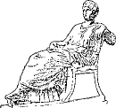
DOMINA
32. Declension of Nouns. We learned above (§§ 19, 20) the difference between the subject and object, and that in English they may be distinguished by the order of the words. Sometimes, however, the order is such that we are left in doubt. For example, the sentence The lady her daughter loves might mean either that the lady loves her daughter, or that the daughter loves the lady.
1. If the sentence were in Latin, no doubt could arise, because the subject and the object are distinguished, not by the order of the words, but by the endings of the words themselves. Compare the following sentences:
|
Domina fīliam amat Fīliam domina amat Amat fīliam domina Domina amat fīliam |
The lady loves her daughter |
|
Fīlia dominam amat Dominam fīlia amat Amat dominam fīlia Fīlia amat dominam |
The daughter loves the lady |
a. Observe that in each case the subject of the sentence ends in -a and the object in -am. The form of the noun shows how it is used in the sentence, and the order of the words has no effect on the essential meaning.
2. As stated above (§ 23), this change of ending is called declension, and each different ending produces what is called a case. When we decline a noun, we give all its different cases, or changes of endings. In English we have three cases,—nominative, possessive, and objective; but, in nouns, the nominative and objective have the same form, and only the possessive case shows a change of ending, by adding ’s or the apostrophe. The interrogative pronoun, however, has the fuller declension, who? whose? whom?
17 33. The following table shows a comparison between English and Latin declension forms, and should be thoroughly memorized:
| English Cases | Latin Cases | |||
|---|---|---|---|---|
| Declension of who? | Name of case and use | Declension of domina and translation | Name of case and use | |
|
S i n g u l a r |
Who? |
Nominative— |
do´min-a |
Nominative— |
| Whose? |
Possessive— |
domin-ae |
Genitive— |
|
| Whom? |
Objective— |
domin-am |
Accusative— |
|
|
P l u r a l |
Who? |
Nominative— |
domin-ae |
Nominative— |
| Whose? |
Possessive— |
domin-ā´rum |
Genitive— |
|
| Whom? |
Objective— |
domin-ās |
Accusative— |
|
When the nominative singular of a noun ends in -a, observe that
a. The nominative plural ends in -ae.
b. The genitive singular ends in -ae and the genitive plural in -ārum.
c. The accusative singular ends in -am and the accusative plural in -ās.
d. The genitive singular and the nominative plural have the same ending.
34. EXERCISE
Pronounce the following words and give their general meaning. Then give the number and case, and the use of each form. Where the same form stands for more than one case, give all the possible cases and uses.
1. Silva, silvās, silvam. 2. Fugam, fugae, fuga. 3. Terrārum, terrae, terrās. 4. Aquās, causam, lūnās. 5. Fīliae, fortūnae, lūnae. 6. Iniūriās, agricolārum, aquārum. 7. Iniūriārum, agricolae, puellās. 8. Nautam, agricolās, nautās. 9. Agricolam, puellam, silvārum.
1835. We learned from the table (§ 33) that the Latin nominative, genitive, and accusative correspond, in general, to the nominative, possessive, and objective in English, and that they are used in the same way. This will be made even clearer by the following sentence:
Fīlia agricolae nautam amat,
the farmer’s daughter (or the daughter of the farmer)
loves the sailor
What is the subject? the direct object? What case is used for the subject? for the direct object? What word denotes the possessor? In what case is it?
36. Rule. Nominative Subject. The subject of a finite verb is in the Nominative and answers the question Who? or What?
37. Rule. Accusative Object. The direct object of a transitive verb is in the Accusative and answers the question Whom? or What?
38. Rule. Genitive of the Possessor. The word denoting the owner or possessor of something is in the Genitive and answers the question Whose?
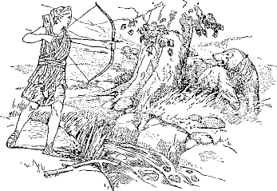
DIANA SAGITTAS PORTAT ET FERAS NECAT
19 39. EXERCISES
First learn the special vocabulary, p. 283.
I. 1. Diāna est dea. 2. Lātōna est dea. 3. Diāna et Lātōna sunt deae. 4. Diāna est dea lūnae. 5. Diāna est fīlia Lātōnae. 6. Lātōna Diānam amat. 7. Diāna est dea silvārum. 8. Diāna silvam amat. 9. Diāna sagittās portat. 10. Diāna ferās silvae necat. 11. Ferae terrārum pugnant.
For the order of words imitate the Latin above.
II. 1. The daughter of Latona does love the forests. 2. Latona’s daughter carries arrows. 3. The farmers’ daughters do labor. 4. The farmer’s daughter loves the waters of the forest. 5. The sailor is announcing the girls’ flight. 6. The girls announce the sailors’ wrongs. 7. The farmer’s daughter labors. 8. Diana’s arrows are killing the wild beasts of the land.
40. CONVERSATION
Translate the questions and answer them in Latin. The answers may be found in the exercises preceding.
1. Quis est Diāna?
2. Cuius fīlia est Diāna?
3. Quis Diānam amat?
4. Quis silvam amat?
5. Quis sagittās portat?
6. Cuius fīliae labōrant?
41. The Dative Case. In addition to the relationships between words expressed by the nominative, genitive (possessive), and accusative (objective) cases, there are other relationships, to express which in English we use such words as from, with, by, to, for, in, at.1
Latin, too, makes frequent use of such prepositions; but often it expresses these relations without them by means of case forms which 20 English does not possess. One of the cases found in the Latin declension and lacking in English is called the dative.
42. When the nominative singular ends in -a, the dative singular ends in -ae and the dative plural in -īs.
Note. Observe that the genitive singular, the dative singular, and the nominative plural all have the same ending, -ae; but the uses of the three cases are entirely different. The general meaning of the sentence usually makes clear which case is intended.
a. Form the dative singular and plural of the following nouns: fuga, causa, fortūna, terra, aqua, puella, agricola, nauta, domina.
43. The Dative Relation. The dative case is used to express the relations conveyed in English by the prepositions to, towards, for.
These prepositions are often used in English in expressions of motion, such as She went to town, He ran towards the horse, Columbus sailed for America. In such cases the dative is not used in Latin, as motion through space is foreign to the dative relation. But the dative is used to denote that to or towards which a benefit, injury, purpose, feeling, or quality is directed, or that for which something serves or exists.
a. What dative relations do you discover in the following?
The teacher gave a prize to John because he replied so promptly to all her questions—a good example for the rest of us. It is a pleasure to us to hear him recite. Latin is easy for him, but it is very hard for me. Some are fitted for one thing and others for another.
44. The Indirect Object. Examine the sentence
Nauta fugam nūntiat, the sailor announces the flight
Here the verb, nūntiat, governs the direct object, fugam, in the accusative case. If, however, we wish to mention the persons to whom the sailor announces the flight, as, The sailor announces the flight to the farmers, the verb will have two objects:
|
1. Its direct object, flight (fugam) 2. Its indirect object, farmers |
According to the preceding section, to the farmers is a relation covered by the dative case, and we are prepared for the following rule:
21 45. Rule. Dative Indirect Object. The indirect object of a verb is in the Dative.
a. The indirect object usually stands before the direct object.
46. We may now complete the translation of the sentence The sailor announces the flight to the farmers, and we have
Nauta agricolīs fugam nūntiat
47. EXERCISES
First learn the special vocabulary, p. 283.
Point out the direct and indirect objects and the genitive of the possessor.
I. 1. Quis nautīs pecūniam dat? 2. Fīliae agricolae nautīs pecūniam dant. 3. Quis fortūnam pugnae nūntiat? 4. Galba agricolīs fortunam pugnae nūntiat. 5. Cui domina fābulam nārrat? 6. Fīliae agricolae domina fābulam nārrat. 7. Quis Diānae corōnam dat? 8. Puella Diānae corōnam dat quia Diānam amat. 9. Dea lūnae sagittās portat et ferās silvārum necat. 10. Cuius victōriam Galba nūntiat? 11. Nautae victōriam Galba nūntiat.
Imitate the word order of the preceding exercise.
II. 1. To whom do the girls give a wreath? 2. The girls give a wreath to Julia, because Julia loves wreaths. 3. The sailors tell the ladies2 a story, because the ladies love stories. 4. The farmer gives his (§ 22. a) daughter water. 5. Galba announces the cause of the battle to the sailor. 6. The goddess of the moon loves the waters of the forest. 7. Whose wreath is Latona carrying? Diana’s.
48. The Ablative Case. Another case, lacking in English but found in the fuller Latin declension, is the ab´la-tive.
49. When the nominative singular ends in -a, the ablative singular ends in -ā and the ablative plural in -īs.
a. Observe that the final -ă of the nominative is short, while the final -ā of the ablative is long, as,
| Nom. fīliă | Abl. fīliā |
b. Observe that the ablative plural is like the dative plural.
c. Form the ablative singular and plural of the following nouns: fuga, causa, fortūna, terra, aqua, puella, agricola, nauta, domina.
50. The Ablative Relation. The ablative case is used to express the relations conveyed in English by the prepositions from, with, by, at, in. It denotes
1. That from which something is separated, from which it starts, or of which it is deprived—generally translated by from.
2. That with which something is associated or by means of which it is done—translated by with or by.
3. The place where or the time when something happens—translated by in or at.
a. What ablative relations do you discover in the following?
In our class there are twenty boys and girls. Daily at eight o’clock they come from home with their books, and while they are at school they study Latin with great zeal. In a short time they will be able to read with ease the books written by the Romans. By patience and perseverance all things in this world can be overcome.
51. Prepositions. While, as stated above (§ 41), many relations expressed in English by prepositions are in Latin expressed by case forms, still prepositions are of frequent occurrence, but only with the accusative or ablative.
23 52. Rule. Object of a Preposition. A noun governed by a preposition must be in the Accusative or Ablative case.
53. Prepositions denoting the ablative relations from, with, in, on, are naturally followed by the ablative case. Among these are
|
ā1 or ab, from, away from dē, from, down from ē1 or ex, from, out from, out of cum, with in, in, on |
1. Translate into Latin, using prepositions. In the water, on the land, down from the forest, with the fortune, out of the forests, from the victory, out of the waters, with the sailors, down from the moon.
54. Adjectives. Examine the sentence
Puella parva bonam deam amat, the little girl loves the good goddess
In this sentence parva (little) and bonam (good) are not nouns, but are descriptive words expressing quality. Such words are called adjectives,2 and they are said to belong to the noun which they describe.
You can tell by its ending to which noun an adjective belongs. The ending of parva shows that it belongs to puella, and the ending of bonam that it belongs to deam. Words that belong together are said to agree, and the belonging-together is called agreement. Observe that the adjective and its noun agree in number and case.
55. Examine the sentences
|
Puella est parva, the girl is little Puella parva bonam deam amat, the little girl loves the good goddess |
In the first sentence the adjective parva is separated from its noun by the verb and stands in the predicate. It is therefore called a predicate adjective. In the second sentence the adjectives parva and 24 bonam are closely attached to the nouns puella and deam respectively, and are called attributive adjectives.
a. Pick out the attributive and the predicate adjectives in the following:
Do you think Latin is hard? Hard studies make strong brains. Lazy students dislike hard studies. We are not lazy.
56. DIALOGUE
First learn the special vocabulary, p. 283.
I. Quis, Galba, est Diāna?
G. Diāna, Iūlia, est pulchra dea lūnae et silvārum.
I. Cuius fīlia, Galba, est Diāna?
G. Lātōnae fīlia, Iūlia, est Diāna.
I. Quid Diāna portat?
G. Sagittās Diāna portat.
I. Cūr Diāna sagittās portat?
G. Diāna sagittās portat, Iūlia, quod malās ferās silvae magnae
necat.
I. Amatne Lātōna fīliam?
G. Amat, et fīlia Lātōnam amat.
I. Quid fīlia tua parva portat?
G. Corōnās pulchrās fīlia mea parva portat.
I. Cui fīlia tua corōnās pulchrās dat?
G. Diānae corōnās dat.
I. Quis est cum fīliā tuā? Estne sōla?
G. Sōla nōn est; fīlia mea parva est cum ancillā meā.
a. When a person is called or addressed, the case used is called the voc´ative (Latin vocāre, “to call”). In form the vocative is regularly like the nominative. In English the name of the person addressed usually stands first in the sentence. The Latin vocative rarely stands first. Point out five examples of the vocative in this dialogue.
b. Observe that questions answered by yes or no in English are answered in Latin by repeating the verb. Thus, if you wished to answer in Latin the question Is the sailor fighting? Pugnatne nauta? you would say Pugnat, he is fighting, or Nōn pugnat, he is not fighting.
2557. In the preceding lessons we have now gone over all the cases, singular and plural, of nouns whose nominative singular ends in -a. All Latin nouns whose nominative singular ends in -a belong to the First Declension. It is also called the Ā-Declension because of the prominent part which the vowel a plays in the formation of the cases. We have also learned what relations are expressed by each case. These results are summarized in the following table:
| Case | Noun | Translation | Use and General Meaning of Each Case |
|---|---|---|---|
| Singular | |||
| Nom. | do´min-a | the lady | The subject |
| Gen. | domin-ae | of the lady, or the lady’s |
The possessor of something |
| Dat. | domin-ae | to or for the lady |
Expressing the relation to or for, especially the indirect object |
| Acc. | domin-am | the lady | The direct object |
| Abl. | domin-ā | from, with, by, in, the lady |
Separation (from), association or means (with, by), place where or time when (in, at) |
| Plural | |||
| Nom. | domin-ae | the ladies | The same as the singular |
| Gen. | domin-ā´rum | of the ladies, or the ladies’ |
|
| Dat. | domin-īs | to or for the ladies |
|
| Acc. | domin-ās | the ladies | |
| Abl. | domin-īs | from, with, by, in, the ladies |
58. The Base. That part of a word which remains unchanged in inflection and to which the terminations are added is called the base.
Thus, in the declension above, domin- is the base and -a is the termination of the nominative singular.
26 59. Write the declension of the following nouns, separating the base from the termination by a hyphen. Also give them orally.
pugna, terra, lūna, ancil´la, corō´na, īn´sula, silva
60. Gender. In English, names of living beings are either masculine or feminine, and names of things without life are neuter. This is called natural gender. Yet in English there are some names of things to which we refer as if they were feminine; as, “Have you seen my yacht? She is a beauty.” And there are some names of living beings to which we refer as if they were neuter; as, “Is the baby here? No, the nurse has taken it home.” Some words, then, have a gender quite apart from sex or real gender, and this is called grammatical gender.
Latin, like English, has three genders. Names of males are usually masculine and of females feminine, but names of things have grammatical gender and may be either masculine, feminine, or neuter. Thus we have in Latin the three words, lapis, a stone; rūpēs, a cliff; and saxum, a rock. Lapis is masculine, rūpēs feminine, and saxum neuter. The gender can usually be determined by the ending of the word, and must always be learned, for without knowing the gender it is impossible to write correct Latin.
61. Gender of First-Declension Nouns. Nouns of the first declension are feminine unless they denote males. Thus silva is feminine, but nauta, sailor, and agricola, farmer, are masculine.
62. EXERCISES
First learn the special vocabulary, p. 284.
I. 1. Agricola cum fīliā in casā habitat. 2. Bona fīlia agricolae cēnam parat. 3. Cēna est grāta agricolae1 et agricola bonam fīliam laudat. 4. Deinde fīlia agricolae gallīnās ad cēnam vocat. 5. Gallīnae fīliam agricolae amant. 6. Malae fīliae bonās cēnās nōn parant. 7. Fīlia agricolae est grāta dominae. 8. Domina in īnsulā magnā habitat. 9. Domina bonae puellae parvae pecūniam dat.
27 II. 1. Where does the farmer live? 2. The farmer lives in the small cottage. 3. Who lives with the farmer? 4. (His) little daughter lives with the farmer. 5. (His) daughter is getting (parat) a good dinner for the farmer. 6. The farmer praises the good dinner. 7. The daughter’s good dinner is pleasing to the farmer.
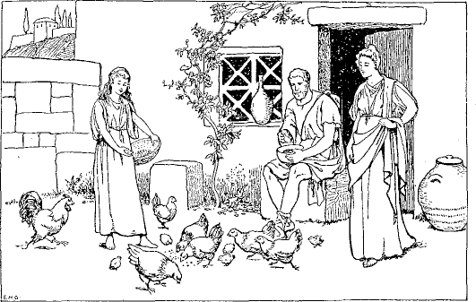
What Latin words are suggested by this picture?
63. CONVERSATION
Answer the questions in Latin.
1. Quis cum agricolā in casā habitat?
2. Quid bona fīlia agricolae parat?
3. Quem agricola laudat?
4. Vocatne fīlia agricolae gallīnās ad cēnam?
5. Cuius fīlia est grāta dominae?
6. Cui domina pecūniam dat?
64. We have for some time now been using adjectives and nouns together and you have noticed an agreement between them in case and in number (§ 54). They agree also in gender. In the phrase silva magna, we have a feminine adjective in -a agreeing with a feminine noun in -a.
65. Rule. Agreement of Adjectives. Adjectives agree with their nouns in gender, number, and case.
66. Feminine adjectives in -a are declined like feminine nouns in -a, and you should learn to decline them together as follows:
| Noun | Adjective | ||
|---|---|---|---|
| domina (base domin-), f., lady | bona (base bon-), good | ||
| Singular | TERMINATIONS | ||
| Nom. | do´mina | bona | -a |
| Gen. | dominae | bonae | -ae |
| Dat. | dominae | bonae | -ae |
| Acc. | dominam | bonam | -am |
| Abl. | dominā | bonā | -ā |
| Plural | TERMINATIONS | ||
| Nom. | dominae | bonae | -ae |
| Gen. | dominā´rum | bonā´rum | -ārum |
| Dat. | dominīs | bonīs | -īs |
| Acc. | dominās | bonās | -ās |
| Abl. | dominīs | bonīs | -īs |
a. In the same way decline together puella mala, the bad girl; ancil´la parva, the little maid; fortū´na magna, great fortune.
67. The words dea, goddess, and fīlia, daughter, take the ending -ābus instead of -īs in the dative and ablative plural. Note the dative and ablative plural in the following declension:
| 29 dea bona (bases de- bon-) | ||
| Singular | Plural | |
|---|---|---|
| Nom. | dea bona | deae bonae |
| Gen. | deae bonae | deā´rum bonā´rum |
| Dat. | deae bonae | deā´bus bonīs |
| Acc. | deam bonam | deās bonās |
| Abl. | deā bonā | dea´bus bonīs |
a. In the same way decline together fīlīa parva.
68. Latin Word Order. The order of words in English and in Latin sentences is not the same.
In English we arrange words in a fairly fixed order. Thus, in the sentence My daughter is getting dinner for the farmers, we cannot alter the order of the words without spoiling the sentence. We can, however, throw emphasis on different words by speaking them with more force. Try the effect of reading the sentence by putting special force on my, daughter, dinner, farmers.
In Latin, where the office of the word in the sentence is shown by its ending (cf. § 32. 1), and not by its position, the order of words is more free, and position is used to secure the same effect that in English is secured by emphasis of voice. To a limited extent we can alter the order of words in English, too, for the same purpose. Compare the sentences
|
I saw a game of football at Chicago last November (normal order) Last November I saw a game of football at Chicago At Chicago, last November, I saw a game of football |
1. In a Latin sentence the most emphatic place is the first; next in importance is the last; the weakest point is the middle. Generally the subject is the most important word, and is placed first; usually the verb is the next in importance, and is placed last. The other words of the sentence stand between these two in the order of their importance. Hence the normal order of words—that is, where no unusual emphasis is expressed—is as follows:
subject—modifiers of the subject—indirect object—direct object—adverb—verb
Changes from the normal order are frequent, and are due to the desire for throwing emphasis upon some word or phrase. Notice the order of the 30 Latin words when you are translating, and imitate it when you are turning English into Latin.
2. Possessive pronouns and modifying genitives normally stand after their nouns. When placed before their nouns they are emphatic, as fīlia mea, my daughter; mea fīlia, my daughter; casa Galbae, Galba’s cottage; Galbae casa, Galba’s cottage.
Notice the variety of emphasis produced by writing the following sentence in different ways:
|
Fīlia mea agricolīs cēnam parat (normal order) Mea fīlia agricolīs parat cēnam (mea and cēnam emphatic) Agricolīs fīlia mea cēnam parat (agricolīs emphatic) |
3. An adjective placed before its noun is more emphatic than when it follows. When great emphasis is desired, the adjective is separated from its noun by other words.
|
Fīlia mea casam parvam nōn amat (parvam not emphatic) Fīlia mea parvam casam nōn amat (parvam more emphatic) Parvam fīlia mea casam nōn amat (parvam very emphatic) |
4. Interrogative words usually stand first, the same as in English.
5. The copula (as est, sunt) is of so little importance that it frequently does not stand last, but may be placed wherever it sounds well.
69. EXERCISE
First learn the special vocabulary, p. 284.
Note the order of the words in these sentences and pick out those that are emphatic.
1. Longae nōn sunt tuae viae. 2. Suntne tubae novae in meā casā? Nōn sunt. 3. Quis lātā in silvā habitat? Diāna, lūnae clārae pulchra dea, lātā in silvā habitat. 4. Nautae altās et lātās amant aquās. 5. Quid ancilla tua portat? Ancilla mea tubam novam portat. 6. Ubi sunt Lesbia et Iūlia? In tuā casa est Lesbia et Iūlia est in meā. 7. Estne Italia lāta terra? Longa est Italia, nōn lāta. 8. Cui Galba agricola fābulam novam nārrat? Fīliābus dominae clārae fābulam novam nārrat. 9. Clāra est īnsula Sicilia. 10. Quem laudat Lātōna? Lātōna laudat fīliam.
70. Latin nouns are divided into five declensions.
The declension to which a noun belongs is shown by the ending of the genitive singular. This should always be learned along with the nominative and the gender.
71. The nominative singular of nouns of the Second or O-Declension ends in -us, -er, -ir, or -um. The genitive singular ends in -ī.
72. Gender. Nouns in -um are neuter. The others are regularly masculine.
73. Declension of nouns in -us and -um. Masculines in -us and neuters in -um are declined as follows:
| dominus (base domin-), m., master | pīlum (base pīl-), n., spear | |||
| Singular | ||||
|---|---|---|---|---|
| TERMINATIONS | TERMINATIONS | |||
| Nom. | do´minus1 | -us | pīlum | -um |
| Gen. | dominī | -ī | pīlī | -ī |
| Dat. | dominō | -ō | pīlō | -ō |
| Acc. | dominum | -um | pīlum | -um |
| Abl. | dominō | -ō | pīlō | -ō |
| Voc. | domine | -e | pīlum | -um |
| Plural | ||||
| Nom. | dominī | -ī | pīla | -a |
| Gen. | dominō´rum | -ōrum | pīlō´rum | -ōrum |
| Dat. | dominīs | -īs | pīlīs | -īs |
| Acc. | dominōs | -ōs | pīla | -a |
| Abl. | dominīs | -īs | pīlīs | -īs |
a. Observe that the masculines and the neuters have the same terminations excepting in the nominative singular and the nominative and accusative plural.
b. The vocative singular of words of the second declension in -us ends in -ĕ, as domine, O master; serve, O slave. This is the most important exception to the rule in § 56. a.
74. Write side by side the declension of domina, dominus, and pīlum. A comparison of the forms will lead to the following rules, which are of great importance because they apply to all five declensions:
a. The vocative, with a single exception (see § 73. b), is like the nominative. That is, the vocative singular is like the nominative singular, and the vocative plural is like the nominative plural.
b. The nominative, accusative, and vocative of neuter nouns are alike, and in the plural end in -a.
c. The accusative singular of masculines and feminines ends in -m and the accusative plural in -s.
d. The dative and ablative plural are always alike.
e. Final -i and -o are always long; final -a is short, except in the ablative singular of the first declension.
75. Observe the sentences
|
Lesbia est bona, Lesbia is good Lesbia est ancilla, Lesbia is a maidservant |
We have learned (§ 55) that bona, when used, as here, in the predicate to describe the subject, is called a predicate adjective. Similarly a noun, as ancilla, used in the predicate to define the subject is called a predicate noun.
76. Rule. Predicate Noun. A predicate noun agrees in case with the subject of the verb.
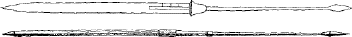
PILA
33 77. DIALOGUE
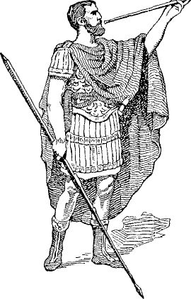
LEGATUS CUM PILO ET TUBA
First learn the special vocabulary, p. 285.
G. Quis, Mārce, est lēgātus cum pīlō et tubā?
M. Lēgātus, Galba, est Sextus.
G. Ubi Sextus habitat?2
M. In oppidō Sextus cum fīliābus habitat.
G. Amantne oppidānī Sextum?
M. Amant oppidānī Sextum et laudant, quod magnā cum cōnstantiā
pugnat.
G. Ubi, Mārce, est ancilla tua? Cūr nōn cēnam parat?
M. Ancilla mea, Galba, equō lēgātī aquam et frūmentum dat.
G. Cūr nōn servus Sextī equum dominī cūrat?
M. Sextus et servus ad mūrum oppidī properant.
Oppidānī bellum parant.3
habitat |
he lives he is living he does live |
34 78. CONVERSATION
Translate the questions and answer them in Latin.
1. Ubi fīliae Sextī habitant?
2. Quem oppidānī amant et laudant?
3. Quid ancilla equō lēgātī dat?
4. Cuius equum ancilla cūrat?
5. Quis ad mūrum cum Sextō properat?
6. Quid oppidānī parant?
79. We have been freely using feminine adjectives, like bona, in agreement with feminine nouns of the first declension and declined like them. Masculine adjectives of this class are declined like dominus, and neuters like pīlum. The adjective and noun, masculine and neuter, are therefore declined as follows:
| Masculine Noun and Adjective | Neuter Noun and Adjective | |||
|---|---|---|---|---|
| dominus bonus, the good master | pīlum bonum, the good spear | |||
| Bases domin- bon- | Bases pīl- bon- | |||
| Singular | ||||
| TERMINATIONS | TERMINATIONS | |||
| Nom. | do´minus bonus | -us | pīlum bonum | -um |
| Gen. | dominī bonī | -ī | pīlī bonī | -ī |
| Dat. | dominō bonō | -ō | pīlō bonō | -ō |
| Acc. | dominum bonum | -um | pīlum bonum | -um |
| Abl. | dominō bonō | -ō | pīlō bonō | -ō |
| Voc. | domine bone | -e | pīlum bonum | -um |
| Plural | ||||
| Nom. | dominī bonī | -ī | pīla bona | -a |
| Gen. | dominō´rum bonō´rum | -ōrum | pīlō´rum bonō´rum | -ōrum |
| Dat. | dominīs bonīs | -is | pīlīs bonīs | -īs |
| Acc. | dominōs bonōs | -ōs | pīla bona | -a |
| Abl. | dominīs bonīs | -īs | pīlīs bonīs | -īs |
35 Decline together bellum longum, equus parvus, servus malus, mūrus altus, frūmentum novum.
80. Observe the sentences
|
Lesbia ancilla est bona, Lesbia, the maidservant, is good Fīlia Lesbiae ancillae est bona, the daughter of Lesbia, the maidservant, is good Servus Lesbiam ancillam amat, the slave loves Lesbia, the maidservant |
In these sentences ancilla, ancillae, and ancillam denote the class of persons to which Lesbia belongs and explain who she is. Nouns so related that the second is only another name for the first and explains it are said to be in apposition, and are always in the same case.
81. Rule. Apposition. An appositive agrees in case with the noun which it explains.
82. EXERCISES
First learn the special vocabulary, p. 285.
I. 1. Patria servī bonī, vīcus servōrum bonōrum, bone popule. 2. Populus oppidī magnī, in oppidō magnō, in oppidīs magnīs. 3. Cum pīlīs longīs, ad pīla longa, ad mūrōs lātōs. 4. Lēgāte male, amīcī legātī malī, cēna grāta dominō bonō. 5. Frūmentum equōrum parvōrum, domine bone, ad lēgātōs clārōs. 6. Rhēnus est in Germāniā, patriā meā. 7. Sextus lēgātus pīlum longum portat. 8. Oppidānī bonī Sextō lēgātō clārā pecūniam dant. 9. Malī servī equum bonum Mārcī dominī necant. 10. Galba agricola et Iūlia fīlia bona labōrant. 11. Mārcus nauta in īnsulā Siciliā habitat.
II. 1. Wicked slave, who is your friend? Why does he not praise Galba, your master? 2. My friend is from (ex) a village of Germany, my fatherland. 3. My friend does not love the people of Italy. 4. Who is caring for1 the good horse of Galba, the farmer? 5. Mark, where is Lesbia, the maidservant? 6. She is hastening1 to the little cottage2 of Julia, the farmer’s daughter.
83. Adjectives of the first and second declensions are declined in the three genders as follows:
| Singular | |||
|---|---|---|---|
| MASCULINE | FEMININE | NEUTER | |
| Nom. | bonus | bona | bonum |
| Gen. | bonī | bonae | bonī |
| Dat. | bonō | bonae | bonō |
| Acc. | bonum | bonam | bonum |
| Abl. | bonō | bonā | bonō |
| Voc. | bone | bona | bonum |
| Plural | |||
| Nom. | bonī | bonae | bona |
| Gen. | bonōrum | bonārum | bonōrum |
| Dat. | bonīs | bonīs | bonīs |
| Acc. | bonōs | bonās | bona |
| Abl. | bonīs | bonīs | bonīs |
a. Write the declension and give it orally across the page, thus giving the three genders for each case.
b. Decline grātus, -a, -um; malus, -a, -um; altus, -a, -um; parvus, -a, -um.
84. Thus far the adjectives have had the same terminations as the nouns. However, the agreement between the adjective and its noun does not mean that they must have the same termination. If the adjective and the noun belong to different declensions, the terminations will, in many cases, not be the same. For example, nauta, sailor, is masculine and belongs to the first declension. The masculine form of the adjective bonus is of the second declension. Consequently, a good sailor is nauta bonus. So, the wicked farmer is agricola malus. Learn the following declensions:
37 85. nauta bonus (bases naut- bon-), m., the good sailor
| Singular | Plural | |||
|---|---|---|---|---|
| Nom. | nauta | bonus | nautae | bonī |
| Gen. | nautae | bonī | nautārum | bonōrum |
| Dat. | nautae | bonō | nautīs | bonīs |
| Acc. | nautam | bonum | nautās | bonōs |
| Abl. | nautā | bonō | nautīs | bonīs |
| Voc. | nauta | bone | nautae | bonī |
86. EXERCISES
First learn the special vocabulary, p. 285.
I. 1. Est1 in vīcō nauta bonus. 2. Sextus est amīcus nautae bonī. 3. Sextus nautae bonō galeam dat. 4. Populus Rōmānus nautam bonum laudat. 5. Sextus cum nautā bonō praedam portat. 6. Ubi, nauta bone, sunt anna et tēla lēgātī Rōmānī? 7. Nautae bonī ad bellum properant. 8. Fāma nautārum bonōrum est clāra. 9. Pugnae sunt grātae nautīs bonīs. 10. Oppidānī nautās bonōs cūrant. 11. Cūr, nautae bonī, malī agricolae ad Rhēnum properant? 12. Malī agricolae cum bonīs nautīs pugnant.
II. 1. The wicked farmer is hastening to the village with (his) booty. 2. The reputation of the wicked farmer is not good. 3. Why does Galba’s daughter give arms and weapons to the wicked farmer? 4. Lesbia invites the good sailor to dinner. 5. Why is Lesbia with the good sailor hastening from the cottage? 6. Sextus, where is my helmet? 7. The good sailors are hastening to the toilsome battle. 8. The horses of the wicked farmers are small. 9. The Roman people give money to the good sailors. 10. Friends care for the good sailors. 11. Whose friends are fighting with the wicked farmers?
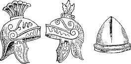
GALEAE
87. Nouns of the second declension in -ius and -ium end in -ī in the genitive singular, not in -iī, and the accent rests on the penult; as, fīlī from fīlius (son), praesi´dī from praesi´dium (garrison).
88. Proper names of persons in -ius, and fīlius, end in -ī in the vocative singular, not in -ĕ, and the accent rests on the penult; as, Vergi´lī, O Vergil; fīlī, O son.
a. Observe that in these words the vocative and the genitive are alike.
89. praesidium (base praesidi-), n., garrison fīlius (base fīli-), m., son
| Singular | |||
|---|---|---|---|
| Nom. | praesidium | fīlius | |
| Gen. | praesi´dī | fīlī | |
| Dat. | praesidiō | fīliō | |
| Acc. | praesidium | fīlium | |
| Abl. | praesidiō | fīliō | |
| Voc. | praesidium | fīlī | |
The plural is regular. Note that the -i- of the base is lost only in the genitive singular, and in the vocative of words like fīlius.
Decline together praesidium parvum; fīlius bonus; fluvius longus, the long river; proelium clārum, the famous battle.
90. EXERCISES
First learn the special vocabulary, p. 285.
I. 1. Frūmentum bonae terrae, gladī malī, bellī longī. 2. Cōnstantia magna, praesidia magna, clāre Vergi´lī. 3. Male serve, Ō clārum oppidum, male fīlī, fīliī malī, fīlī malī. 4. Fluvī longī, fluviī longī, fluviōrum longōrum, fāma praesi´dī magnī. 5. Cum gladiīs parvīs, cum deābus clārīs, ad nautās clārōs. 6. Multōrum proeliōrum, praedae magnae, ad proelia dūra.
39II. Germānia, patria Germānōrum, est clāra terra. In Germāniā sunt fluviī multī. Rhēnus magnus et lātus fluvius Germāniae est. In silvīs lātīs Germāniae sunt ferae multae. Multi Germānii in oppidīs magnis et in vīcīs parvīs habitant et multī sunt agricolae bonī. Bella Germānōrum sunt magna et clāra. Populus Germāniae bellum et proelia amat et saepe cum finitimīs pugnat. Fluvius Rhēnus est fīnitimus oppidīs1 multīs et clārīs.
91. Declension of Nouns in -er and -ir. In early Latin all the masculine nouns of the second declension ended in -os. This -os later became -us in words like servus, and was dropped entirely in words with bases ending in -r, like puer, boy; ager, field; and vir, man. These words are therefore declined as follows:
92. puer, m., boy ager, m., field vir, m., man
| Base puer- | Base agr- | Base vir- | ||
| Singular | TERMINATIONS | |||
|---|---|---|---|---|
| Nom. | puer | ager | vir | —— |
| Gen. | puerī | agrī | virī | -ī |
| Dat. | puerō | agrō | virō | -ō |
| Acc. | puerum | agrum | virum | -um |
| Abl. | puerō | agrō | virō | -ō |
| Plural | ||||
| Nom. | puerī | agrī | virī | -ī |
| Gen. | puerōrum | agrōrum | virōrum | -ōrum |
| Dat. | puerīs | agrīs | virīs | -īs |
| Acc. | puerōs | agrōs | virōs | -ōs |
| Abl. | puerīs | agrīs | virīs | -īs |
40 a. The vocative case of these words is like the nominative, following the general rule (§ 74. a).
b. The declension differs from that of servus only in the nominative and vocative singular.
c. Note that in puer the e remains all the way through, while in ager it is present only in the nominative. In puer the e belongs to the base, but in ager (base agr-) it does not, and was inserted in the nominative to make it easier to pronounce. Most words in -er are declined like ager. The genitive shows whether you are to follow puer or ager.
93. Masculine adjectives in -er of the second declension are declined like nouns in -er. A few of them are declined like puer, but most of them like ager. The feminine and neuter nominatives show which form to follow, thus,
| Masc. | Fem. | Neut. | ||
|---|---|---|---|---|
| līber | lībera | līberum | (free) | is like puer |
| pulcher | pulchra | pulchrum | (pretty) | is like ager |
For the full declension in the three genders, see § 469. b. c.
94. Decline together the words vir līber, terra lībera, frūmentum līberum, puer pulcher, puella pulchra, oppidum pulchrum
95. Italia1
First learn the special vocabulary, p. 286.
Magna est Italiae fāma, patriae Rōmānōrum, et clāra est Rōma, domina orbis terrārum.2 Tiberim,3 fluvium Rōmānum, quis nōn laudat et pulchrōs fluviō fīnitimōs agrōs? Altōs mūrōs, longa et dūra bella, clārās victōriās quis nōn laudat? Pulchra est terra Italia. Agrī bonī agricolīs praemia dant magna, et equī agricolārum cōpiam frūmentī ad oppida et vīcōs portant. In agrīs populī Rōmānī labōrant multī servī. Viae Italiae sunt longae et lātae. Fīnitima Italiae est īnsula Sicilia.
41 96. DIALOGUE
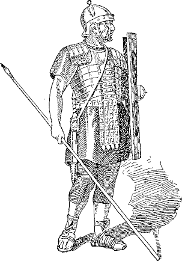
LEGIONARIUS
C. Ubi est, Mārce, fīlius tuus? Estne in pulchrā terrā Italiā?
M. Nōn est, Cornēlī, in Italiā. Ad fluvium Rhēnum properat cum cōpiīs
Rōmānīs quia est4 fāma Novī bellī cum
Germānīs. Līber Germāniae populus Rōmānōs Nōn amat.
C. Estne fīlius tuus copiārum Rōmānārum lēgātus?
M. Lēgātus nōn est, sed est apud legiōnāriōs.
C. Quae5 arma portat6?
M. Scūtum magnum et lōrīcam dūram et galeam pulchram portat.
C. Quae tēla portat?
M. Gladium et pīlum longum portat.
C. Amatne lēgātus fīlium tuum?
M. Amat, et saepe fīliō meō praemia pulchra et praedam multam dat.
C. Ubi est terra Germānōrum?
M. Terra Germānōrum, Cornēlī est fīnitima Rhēnō, fluviō magnō et altō.
97. Observe the sentences
|
This is my shield This shield is mine |
In the first sentence my is a possessive adjective; in the second mine is a possessive pronoun, for it takes the place of a noun, this shield is mine being equivalent to this shield is my shield. Similarly, in Latin the possessives are sometimes adjectives and sometimes pronouns.
98. The possessives my, mine, your, yours, etc. are declined like adjectives of the first and second declensions.
| Singular | ||
|---|---|---|
| 1st Pers. | meus, mea, meum | my, mine |
| 2d Pers. | tuus, tua, tuum | your, yours |
| 3d Pers. | suus, sua, suum | his (own), her (own), its (own) |
| Plural | ||
| 1st Pers. | noster, nostra, nostrum | our, ours |
| 2d Pers. | vester, vestra, vestrum | your, yours |
| 3d Pers. | suus, sua, suum | their (own), theirs |
Note. Meus has the irregular vocative singular masculine mī, as mī fīlī, O my son.
a. The possessives agree with the name of the thing possessed in gender, number, and case. Compare the English and Latin in
|
Sextus is calling his boy Julia is calling her boy |
Sextus Iūlia |
suum puerum vocat |
Observe that suum agrees with puerum, and is unaffected by the gender of Sextus or Julia.
b. When your, yours, refers to one person, use tuus; when to more than one, vester; as,
|
Lesbia, your wreaths are pretty Girls, your wreaths are pretty |
Corōnae tuae, Lesbia, sunt pulchrae Corōnae vestrae, puellae, sunt pulchrae |
43 c. Suus is a reflexive possessive, that is, it usually stands in the predicate and regularly refers back to the subject. Thus, Vir suōs servōs vocat means The man calls his (own) slaves. Here his (suōs) refers to man (vir), and could not refer to any one else.
d. Possessives are used much less frequently than in English, being omitted whenever the meaning is clear without them. (Cf. § 22. a.) This is especially true of suus, -a, -um, which, when inserted, is more or less emphatic, like our his own, her own, etc.
99. EXERCISES
First learn the special vocabulary, p. 286.
I. 1. Mārcus amīcō Sextō cōnsilium suum nūntiat 2. Est cōpia frūmentī in agrīs nostrīs. 3. Amīcī meī bonam cēnam ancillae vestrae laudant 4. Tua lōrīca, mī fīlī, est dūra. 5. Scūta nostra et tēla, mī amīce, in castrls Rōmānīs sunt. 6. Suntne virī patriae tuae līberī? Sunt. 7. Ubi, Cornēlī, est tua galea pulchra? 8. Mea galea, Sexte, est in casā meā. 9. Pīlum longum est tuum, sed gladius est meus. 10. Iūlia gallīnās suās pulchrās amat et gallīnae dominam suam amant. 11. Nostra castra sunt vestra. 12. Est cōpia praedae in castrīs vestrīs. 13. Amīcī tuī miserīs et aegrīs cibum et pecūniam saepe dant.
II. 1. Our teacher praises Mark’s industry. 2. My son Sextus is carrying his booty to the Roman camp.1 3. Your good girls are giving aid to the sick and wretched.2 4. There are 3 frequent battles in our villages. 5. My son, where is the lieutenant’s food? 6. The camp is mine, but the weapons are yours.
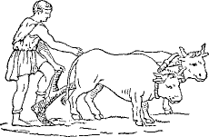
AGRICOLA ARAT
100. Of the various relations denoted by the ablative case (§ 50) there is none more important than that expressed in English by the preposition with. This little word is not so simple as it looks. It does not always convey the same meaning, nor is it always to be translated by cum. This will become clear from the following sentences:
|
a. Mark is feeble with (for or because of) want of food b. Diana kills the beasts with (or by) her arrows c. Julia is with Sextus d. The men fight with great steadiness |
a. In sentence a, with want (of food) gives the cause of Mark’s feebleness. This idea is expressed in Latin by the ablative without a preposition, and the construction is called the ablative of cause:
Mārcus est īnfīrmus inopiā cibī
b. In sentence b, with (or by) her arrows tells by means of what Diana kills the beasts. This idea is expressed in Latin by the ablative without a preposition, and the construction is called the ablative of means:
Diāna sagittīs suīs ferās necat
c. In sentence c we are told that Julia is not alone, but in company with Sextus. This idea is expressed in Latin by the ablative with the preposition cum, and the construction is called the ablative of accompaniment:
Iūlia est cum Sextō
d. In sentence d we are told how the men fight. The idea is one of manner. This is expressed in Latin by the ablative with cum, unless there is a modifying adjective present, in which case cum may be omitted. This construction is called the ablative of manner:
Virī (cum) cōnstantiā magnā pugnant
101. You are now able to form four important rules for the ablative denoting with:
45 102. Rule. Ablative of Cause. Cause is denoted by the ablative without a preposition. This answers the question Because of what?
103. Rule. Ablative of Means. Means is denoted by the ablative without a preposition. This answers the question By means of what? With what?
N.B. Cum must never be used with the ablative expressing cause or means.
104. Rule. Ablative of Accompaniment. Accompaniment is denoted by the ablative with cum. This answers the question With whom?
105. Rule. Ablative of Manner. The ablative with cum is used to denote the manner of an action. Cum may be omitted, if an adjective is used with the ablative. This answers the question How? In what manner?
106. What uses of the ablative do you discover in the following passage, and what question does each answer?
The soldiers marched to the fort with great speed and broke down the gate with blows of their muskets. The inhabitants, terrified by the din, attempted to cross the river with their wives and children, but the stream was swollen with (or by) the rain. Because of this many were swept away by the waters and only a few, almost overcome with fatigue, with great difficulty succeeded in gaining the farther shore.
107. EXERCISES
First learn the special vocabulary, p. 286.
I. The Romans prepare for War. Rōmānī, clārus Italiae populus, bellum parant. Ex agrīs suīs, vicīs, oppidīsque magnō studiō virī validī ad arma properant. Iam lēgatī cum legiōnariīs ex Italiā ad Rhēnum, fluvium Germāniae altum et lātum, properant, et servī equīs et carrīs cibum frūmentumque ad castra Rōmāna portant. Inopiā bonōrum tēlōrum īnfirmī sunt Germānī, sed Rōmānī armāti galeīs, lōrīcīs, scūtīs, gladiīs, pīlīsque sunt validī.
46 II. 1. The sturdy farmers of Italy labor in the fields with great diligence. 2. Sextus, the lieutenant, and (his) son Mark are fighting with the Germans. 3. The Roman legionaries are armed with long spears. 4. Where is Lesbia, your maid, Sextus? Lesbia is with my friends in Galba’s cottage. 5. Many are sick because of bad water and for lack of food. 6. The Germans, with (their) sons and daughters, are hastening with horses and wagons.
108. There are nine irregular adjectives of the first and second declensions which have a peculiar termination in the genitive and dative singular of all genders:
| Masc. | Fem. | Neut. | |
|---|---|---|---|
| Gen. | -īus | -īus | -īus |
| Dat. | -ī | -ī | -ī |
Otherwise they are declined like bonus, -a, -um. Learn the list and the meaning of each:
|
alius, alia, aliud, other, another (of several) alter, altera, alterum, the one, the other (of two) ūnus, -a, -um, one, alone; (in the plural) only ūllus, -a, -um, any nūllus, -a, -um, none, no sōlus, -a, -um, alone tōtus, -a, -um, all, whole, entire uter, utra, utrum, which? (of two) neuter, neutra, neutrum, neither (of two) |
109. PARADIGMS
| Singular | ||||||
|---|---|---|---|---|---|---|
| MASC. | FEM. | NEUT. | MASC. | FEM. | NEUT. | |
| Nom. | nūllus | nūlla | nūllum | alius | alia | aliud |
| Gen. | nūllī´us | nūllī´us | nūllī´us | alī´us | alī´us | alī´us |
| Dat. | nūllī | nūllī | nūllī | aliī | aliī | aliī |
| Acc. | nūllum | nūllam | nūllum | alium | aliam | aliud |
| Abl. | nūllō | nūllā | nūllō | aliō | aliā | aliō |
| The Plural is Regular | ||||||
47 a. Note the peculiar neuter singular ending in -d of alius. The genitive alīus is rare. Instead of it use alterīus, the genitive of alter.
b. These peculiar case endings are found also in the declension of pronouns (see § 114). For this reason these adjectives are sometimes called the pronominal adjectives.
110. Learn the following idioms:
|
alter, -era, -erum ... alter, -era, -erum, the one ... the other (of two) alius, -a, -ud ... alius, -a, -ud, one ... another (of any number) aliī, -ae, -a ... aliī, -ae, -a, some ... others |
1. Alterum oppidum est magnum, alterum parvum, the one town is large, the other small (of two towns).
2. Aliud oppidum est validum, aliud īnfīrmum, one town is strong, another weak (of towns in general).
3. Aliī gladiōs, aliī scūta portant, some carry swords, others shields.
111. EXERCISES
I. 1. In utrā casā est Iūlia? Iūlia est in neutrā casā. 2. Nūllī malō puerō praemium dat magister. 3. Alter puer est nauta, alter agricola. 4. Aliī virī aquam, aliī terram amant. 5. Galba ūnus (or sōlus) cum studiō labōrat. 6. Estne ūllus carrus in agrō meō? 7. Lesbia est ancilla alterīus dominī, Tullia alterīus. 8. Lesbia sōla cēnam parat. 9. Cēna nūllīus alterīus ancillae est bona. 10. Lesbia nūllī aliī virō cēnam dat.
Note. The pronominal adjectives, as you observe, regularly stand before and not after their nouns.
II. 1. The men of all Germany are preparing for war. 2. Some towns are great and others are small. 3. One boy likes chickens, another horses. 4. Already the booty of one town is in our fort. 5. Our whole village is suffering for (i.e. weak because of) lack of food. 6. The people are already hastening to the other town. 7. Among the Romans (there) is no lack of grain.
48112. A demonstrative is a word that points out an object definitely, as this, that, these, those. Sometimes these words are pronouns, as, Do you hear these? and sometimes adjectives, as, Do you hear these men? In the former case they are called demonstrative pronouns, in the latter demonstrative adjectives.
113. Demonstratives are similarly used in Latin both as pronouns and as adjectives. The one used most is
is, masculine; ea, feminine; id, neuter
| Singular |
this that |
Plural |
these those |
114. Is is declined as follows. Compare its declension with that of alius, § 109.
| Base e- | ||||||
| Singular | Plural | |||||
|---|---|---|---|---|---|---|
| MASC. | FEM. | NEUT. | MASC. | FEM. | NEUT. | |
| Nom. | is | ea | id | eī (or iī) | eae | ea |
| Gen. | eius | eius | eius | eōrum | eārum | eōrum |
| Dat. | eī | eī | eī | eīs (or iīs) | eīs (or iīs) | eīs (or iīs) |
| Acc. | eum | eam | id | eōs | eās | ea |
| Abl. | eō | eā | eō | eīs (or iīs) | eīs (or iīs) | eīs (or iīs) |
Note that the base e- changes to i- in a few cases. The genitive singular eius is pronounced eh´yus. In the plural the forms with two i’s are preferred and the two i’s are pronounced as one. Hence, pronounce iī as ī and iīs as īs.
115. Besides being used as demonstrative pronouns and adjectives the Latin demonstratives are regularly used for the personal pronoun he, she, it. As a personal pronoun, then, is would have the following meanings:
116. Comparison between suus and is. We learned above (§ 98. c) that suus is a reflexive possessive. When his, her (poss.), its, their, do not refer to the subject of the sentence, we express his, her, its by eius, the genitive singular of is, ea, id; and their by the genitive plural, using eōrum to refer to a masculine or neuter antecedent noun and eārum to refer to a feminine one.
|
Galba calls his (own) son, Galba suum fīlium vocat Galba calls his son (not his own, but another’s), Galba eius fīlium vocat Julia calls her (own) children, Iūlia suōs līberōs vocat Julia calls her children (not her own, but another’s), Iūlia eius līberōs vocat The men praise their (own) boys, virī suōs puerōs laudant The men praise their boys (not their own, but others’), virī eōrum puerōs laudant |
117. EXERCISES
First learn the special vocabulary, p. 287.
1. He praises her, him, it, them. 2. This cart, that report, these teachers, those women, that abode, these abodes. 3. That strong garrison, among those weak and sick women, that want of firmness, those frequent plans.
4. The other woman is calling her chickens (her own). 5. Another woman is calling her chickens (not her own). 6. The Gaul praises 50 his arms (his own). 7. The Gaul praises his arms (not his own). 8. This farmer often plows their fields. 9. Those wretched slaves long for their master (their own). 10. Those wretched slaves long for their master (not their own). 11. Free men love their own fatherland. 12. They love its villages and towns.
118. DIALOGUE1
M. Quis est vir, Cornēlī, cum puerō parvō? Estne Rōmānus et līber?
C. Rōmānus nōn est, Mārce. Is vir est servus et eius domicilium est in
silvīs Galliae.
M. Estne puer fīlius eius servī an alterīus?
C. Neutrīus fīlius est puer. Is est fīlius lēgātī Sextī.
M. Quō puer cum eō servō properat?
C. Is cum servō properat ad lātōs Sextī agrōs.2 Tōtum frūmentum est iam mātūrum et magnus servōrum
numerus in Italiae3 agrīs labōrat.
M. Agricolaene sunt Gallī et patriae suae agrōs arant?
C. Nōn agricolae sunt. Bellum amant Gallī, nōn agrī cultūram. Apud eōs
virī pugnant et fēminae auxiliō līberōrum agrōs arant parantque
cibum.
M. Magister noster puerīs puellīsque grātās Gallōrum fābulās saepe
nārrat et laudat eōs saepe.
C. Mala est fortūna eōrum et saepe miserī servī multīs cum lacrimīs
patriam suam dēsīderant.
119. The inflection of a verb is called its conjugation (cf. § 23). In English the verb has but few changes in form, the different meanings being expressed by the use of personal pronouns and auxiliaries, as, I am carried, we have carried, they shall have carried, etc. In Latin, on the other hand, instead of using personal pronouns and auxiliary verbs, the form changes with the meaning. In this way the Romans expressed differences in tense, mood, voice, person, and number.
120. The Tenses. The different forms of a verb referring to different times are called its tenses. The chief distinctions of time are present, past, and future:
1. The present, that is, what is happening now, or what usually happens, is expressed by |
the Present Tense |
2. The past, that is, what was happening, used to happen, happened, has happened, or had happened, is expressed by |
the Imperfect, Perfect, and Pluperfect Tenses |
3. The future, that is, what is going to happen, is expressed by |
the Future and Future Perfect Tenses |
121. The Moods. Verbs have inflection of mood to indicate the manner in which they express action. The moods of the Latin verb are the indicative, subjunctive, imperative, and infinitive.
a. A verb is in the indicative mood when it makes a statement or asks a question about something assumed as a fact. All the verbs we have used thus far are in the present indicative.
122. The Persons. There are three persons, as in English. The first person is the person speaking (I sing); the second person the person spoken to (you sing); the third person the person spoken of 52 (he sings). Instead of using personal pronouns for the different persons in the two numbers, singular and plural, the Latin verb uses the personal endings (cf. § 22 a; 29). We have already learned that -t is the ending of the third person singular in the active voice and -nt of the third person plural. The complete list of personal endings of the active voice is as follows:
| Singular | Plural | |||
|---|---|---|---|---|
| 1st Pers. | I | -m or -ō | we | -mus |
| 2d Pers. | thou or you | -s | you | -tis |
| 3d Pers. | he, she, it | -t | they | -nt |
123. Most verbs form their moods and tenses after a regular plan and are called regular verbs. Verbs that depart from this plan are called irregular. The verb to be is irregular in Latin as in English. The present, imperfect, and future tenses of the indicative are inflected as follows:
| Present Indicative | ||
|---|---|---|
| SINGULAR | PLURAL | |
| 1st Pers. | su-m, I am | su-mus, we are |
| 2d Pers. | e-s, you1 are | es-tis, you1 are |
| 3d Pers. | es-t, he, she, or it is | su-nt, they are |
| Imperfect Indicative | ||
| 1st Pers. | er-a-m, I was | er-ā´-mus, we were |
| 2d Pers. | er-ā-s, you were | er-ā´-tis, you were |
| 3d Pers. | er-a-t, he, she, or it was | er-ā-nt, they were |
| Future Indicative | ||
| 1st Pers. | er-ō, I shall be | er´-i-mus, we shall be |
| 2d Pers. | er-i-s, you will be | er´-i-tis, you will be |
| 3d Pers. | er-i-t, he will be | er-u-nt, they will be |
a. Be careful about vowel quantity and accent in these forms, and consult §§ 12.2; 14; 15.
53 124. DIALOGUE
First learn the special vocabulary, p. 287.
S. Ubi es, Mārce? Ubi est Quīntus? Ubi estis, amīcī?
M. Cum Quīntō, Sexte, in silvā sum. Nōn sōlī sumus; sunt in silvā multī
aliī puerī.
S. Nunc laetus es, sed nūper nōn laetus erās. Cūr miser erās?
M. Miser eram quia amīcī meī erant in aliō vicō et eram sōlus. Nunc sum
apud sociōs meōs. Nunc laetī sumus et erimus.
S. Erātisne in lūdo hodiē?
M. Hodiē nōn erāmus in lūdō, quod magister erat aeger.
S. Eritisne mox in lūdō?
M. Amīcī meī ibi erunt, sed ego (I) nōn erō.
S. Cūr nōn ibi eris? Magister, saepe irātus, inopiam tuam studī
dīligentiaeque nōn laudat.
M. Nūper aeger eram et nunc īnfīrmus sum.
125. EXERCISE
1. You are, you were, you will be, (sing. and plur.). 2. I am, I was, I shall be. 3. He is, he was, he will be. 4. We are, we were, we shall be. 5. They are, they were, they will be.
6. Why were you not in school to-day? I was sick. 7. Lately he was a sailor, now he is a farmer, soon he will be a teacher. 8. To-day I am happy, but lately I was wretched. 9. The teachers were happy because of the boys’ industry.
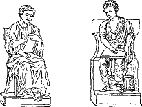
PUERI ROMANI IN LUDO
126. There are four conjugations of the regular verbs. These conjugations are distinguished from each other by the final vowel of the present conjugation-stem.1 This vowel is called the distinguishing vowel, and is best seen in the present infinitive.
Below is given the present infinitive of a verb of each conjugation, the present stem, and the distinguishing vowel.
| Conjugation | Pres. Infin. | Pres. Stem |
DISTINGUISHING VOWEL |
|---|---|---|---|
| I. | amā´re, to love | amā- | ā |
| II. | monē´re, to advise | monē- | ē |
| III. | re´gĕre, to rule | regĕ- | ĕ |
| IV. | audī´re, to hear | audi- | ī |
a. Note that the present stem of each conjugation is found by dropping -re, the ending of the present infinitive.
Note. The present infinitive of sum is esse, and es- is the present stem.
127. From the present stem are formed the present, imperfect, and future tenses.
128. The inflection of the Present Active Indicative of the first and of the second conjugation is as follows:
| a´mō, amā´re (love) | mo´neō, monē´re (advise) | ||
| Pres. Stem amā- | Pres. Stem monē- |
PERSONAL ENDINGS |
|
| Sing. | 1. a´mō, I love | mo´neō, I advise | -ō |
| 2. a´mās, you love | mo´nēs, you advise | -s | |
| 3. a´mat, he (she, it) loves | mo´net, he (she, it) advises | -t | |
| Plur. | 1. amā´mus, we love | monē´mus, we advise | -mus |
| 2. amā´tis, you love | monē´tis, you advise | -tis | |
| 3. a´mant, they love | mo´nent, they advise | -nt |
55 1. The present tense is inflected by adding the personal endings to the present stem, and its first person uses -o and not -m. The form amō is for amā-ō, the two vowels ā-ō contracting to ō. In moneō there is no contraction. Nearly all regular verbs ending in -eo belong to the second conjugation.
2. Note that the long final vowel of the stem is shortened before another vowel (monē-ō = mo´nĕō), and before final -t (amăt, monĕt) and -nt (amănt, monĕnt). Compare § 12. 2.
129. Like amō and moneō inflect the present active indicative of the following verbs2:
| Indicative Present | Infinitive Present |
|---|---|
| a´rō, I plow | arā´re, to plow |
| cū´rō, I care for | cūrā´re, to care for |
| *dē´leō, I destroy | dēlē´re, to destroy |
| dēsī´derō, I long for | dēsīderā´re, to long for |
| dō,3 I give | da´re, to give |
| *ha´beō, I have | habē´re, to have |
| ha´bitō, I live, I dwell | habitā´re, to live, to dwell |
| *iu´beō, I order | iubē´re, to order |
| labō´rō, I labor | labōrā´re, to labor |
| lau´dō, I praise | laudā´re, to praise |
| mātū´rō, I hasten | mātūrā´re, to hasten |
| *mo´veō, I move | movē´re, to move |
| nār´rō, I tell | nārrā´re, to tell |
| ne´cō, I kill | necā´re, to kill |
| nūn´tiō, I announce | nūntiā´re, to announce |
| pa´rō, I prepare | parā´re, to prepare |
| por´tō, I carry | portā´re, to carry |
| pro´perō, I hasten | properā´re, to hasten |
| pug´nō, I fight | pugnā´re, to fight |
| *vi´deō, I see | vidē´re, to see |
| vo´cō, I call | vocā´re, to call |
130. The Translation of the Present. In English there are three ways of expressing present action. We may say, for example, I live, I am living, or I do live. In Latin the one expression habitō covers all three of these expressions.
56 131. EXERCISES
Give the voice, mood, tense, person, and number of each form.
I. 1. Vocāmus, properātis, iubent. 2. Movētis, laudās, vidēs. 3. Dēlētis, habētis, dant. 4. Mātūrās, dēsīderat, vidēmus. 5. Iubet, movent, necat. 6. Nārrāmus, movēs, vident. 7. Labōrātis, properant, portās, parant. 8. Dēlet, habētis, iubēmus, dās.
N.B. Observe that the personal ending is of prime importance in translating a Latin verb form. Give that your first attention.
II. 1. We plow, we are plowing, we do plow. 2. They care for, they are caring for, they do care for. 3. You give, you are having, you do have (sing.). 4. We destroy, I do long for, they are living. 5. He calls, they see, we are telling. 6. We do fight, we order, he is moving, he prepares. 7. They are laboring, we kill, you announce.
132. Tense Signs. Instead of using auxiliary verbs to express differences in tense, like was, shall, will, etc., Latin adds to the verb stem certain elements that have the force of auxiliary verbs. These are called tense signs.
133. Formation and Inflection of the Imperfect. The tense sign of the imperfect is -bā-, which is added to the present stem. The imperfect consists, therefore, of three parts:
| Present Stem | Tense Sign | PERSONAL ENDING |
|---|---|---|
| amā- | ba- | m |
| loving | was | I |
The inflection is as follows:
a. Note that the ā of the tense sign -bā- is shortened before -nt, and before m and t when final. (Cf. § 12. 2.)
In a similar manner inflect the verbs given in § 129.
134. Meaning of the Imperfect. The Latin imperfect describes an act as going on or progressing in past time, like the English past-progressive tense (as, I was walking). It is the regular tense used to describe a past situation or condition of affairs.
135. EXERCISES
I. 1. Vidēbāmus, dēsīderābat, mātūrābās. 2. Dabant, vocābātis, dēlēbāmus. 3. Pugnant, laudābās, movēbātis. 4. Iubēbant, properābātis, portābāmus. 5. Dabās, nārrābant, labōrābātis. 6. Vidēbant, movēbās, nūntiābāmus. 7. Necābat, movēbam, habēbat, parābātis.
II. 1. You were having (sing. and plur.), we were killing, they were laboring. 2. He was moving, we were ordering, we were fighting. 3. We were telling, they were seeing, he was calling. 4. They were living, I was longing for, we were destroying. 5. You were giving, you were moving, you were announcing, (sing. and plur.). 6. They were caring for, he was plowing, we were praising.
136. Ni´obe and her Children
First learn the special vocabulary, p. 287.
Niobē, rēgina Thēbānōrum, erat pulchra fēmina sed superba. Erat superba nōn sōlum fōrmā1 suā marītīque potentiā1 sed etiam magnō līberōrum numerō.1 Nam habēbat2 septem fīliōs et septem fīliās. Sed ea superbia erat rēgīnae3 causa magnae trīstitiae et līberīs3 causa dūrae poenae.
Note. The words Niobē, Thēbānōrum, and marītī will be found in the general vocabulary. Translate the selection without looking up any other words.
137. The tense sign of the Future Indicative in the first and second conjugations is -bi-. This is joined to the present stem of the verb and followed by the personal ending, as follows:
| Present Stem | Tense Sign |
PERSONAL ENDING |
|---|---|---|
| amā- | bi- | s |
| love | will | you |
138. The Future Active Indicative is inflected as follows.
| Conjugation I | Conjugation II |
|---|---|
| SINGULAR | |
| 1. amā´bō, I shall love | monē´bō, I shall advise |
| 2. amā´bis, you will love | monē´bis, you will advise |
| 3. amā´bit, he will love | monē´bit, he will advise |
| PLURAL | |
| 1. amā´bimus, we shall love | monē´bimus, we shall advise |
| 2. amā´bitis will love | monē´bitis, you will advise |
| 3. amā´bunt, they will love | monē´bunt, they will advise |
a. The personal endings are as in the present. The ending -bō in the first person singular is contracted from -bi-ō. The -bi- appears as -bu- in the third person plural. Note that the inflection is like that of erō, the future of sum. Pay especial attention to the accent.
In a similar manner inflect the verbs given in § 129.
139. EXERCISES
I. 1. Movēbitis, laudābis, arābō. 2. Dēlēbitis, vocābitis, dabunt. 3. Mātūrābis, dēsīderābit, vidēbimus. 4. Habēbit, movēbunt, necābit. 5. Nārrābimus, monēbis, vidēbunt. 6. Labōrābitis, cūrābunt, dabis. 7. Habitābimus, properābitis, iubēbunt, parābit. 8. Nūntiābō, portābimus, iubēbō.
II. 1. We shall announce, we shall see, I shall hasten. 2. I shall carry, he will plow, they will care for. 3. You will announce, you will 59 move, you will give, (sing. and plur.). 4. We shall fight, we shall destroy, I shall long for. 5. He will call, they will see, you will tell (plur.). 6. They will dwell, we shall order, he will praise. 7. They will labor, we shall kill, you will have (sing. and plur.), he will destroy.
140. Niobe and her Children (Concluded)
First learn the special vocabulary, p. 288.
Apollō et Diāna erant līberī Lātōnae. Iīs Thēbānī sacra crēbra parābant.1 Oppidānī amābant Lātōnam et līberōs eius. Id superbae rēgīnae erat molestum. “Cūr,” inquit, “Lātōnae et līberīs sacra parātis? Duōs līberōs habet Lātōna; quattuordecim habeō ego. Ubi sunt mea sacra?” Lātōna iīs verbīs2 īrāta līberōs suōs vocat. Ad eam volant Apollō Diānaque et sagittīs3 suīs miserōs līberōs rēgīnae superbae dēlent. Niobē, nūper laeta, nunc misera, sedet apud līberōs interfectōs et cum perpetuīs lacrimīs4 eōs dēsīderat.
Note. Consult the general vocabulary for Apollō, inquit, duōs, and quattuordecim. Try to remember the meaning of all the other words.
141. Review the present, imperfect, and future active indicative, both orally and in writing, of sum and the verbs in § 129.
142. We learned in § 43 for what sort of expressions we may expect the dative, and in § 44 that one of its commonest uses is with verbs to express the indirect object. It is also very common with adjectives to express the object toward which the quality denoted by the adjective is directed. We have already had a number of cases 60 where grātus, agreeable to, was so followed by a dative; and in the last lesson we had molestus, annoying to, followed by that case. The usage may be more explicitly stated by the following rule:
143. Rule. Dative with Adjectives. The dative is used with adjectives to denote the object toward which the given quality is directed. Such are, especially, those meaning near, also fit, friendly, pleasing, like, and their opposites.
144. Among such adjectives memorize the following:
|
idōneus, -a, -um, fit, suitable (for) amīcus, -a, -um, friendly (to) inimicus, -a, -um, hostile (to) grātus, -a, -um, pleasing (to), agreeable (to) molestus, -a, -um, annoying (to), troublesome (to) fīnitimus, -a, -um, neighboring (to) proximus, -a, -um, nearest, next (to) |
145. EXERCISES
I. 1. Rōmānī terram idōneam agrī cultūrae habent. 2. Gallī cōpiīs Rōmānīs inimīcī erant. 3. Cui dea Lātōna amīca non erat? 4. Dea Lātōna superbae rēgīnae amīca nōn erat. 5. Cibus noster, Mārce, erit armātīs virīs grātus. 6. Quid erat molestum populīs Italiae? 7. Bella longa cum Gallīs erant molesta populīs Italiae. 8. Agrī Germānōrum fluviō Rhēnō fīnitimī erant. 9. Rōmānī ad silvam oppidō proximam castra movēbant. 10. Nōn sōlum fōrma sed etiam superbia rēgīnae erat magna. 11. Mox rēgīna pulchra erit aegra trīstitiā. 12. Cūr erat Niobē, rēgīna Thēbānōrum, laeta? Laeta erat Niobē multīs fīliīs et fīliābus.
II. 1. The sacrifices of the people will be annoying to the haughty queen. 2. The sacrifices were pleasing not only to Latona but also to Diana. 3. Diana will destroy those hostile to Latona. 4. The punishment of the haughty queen was pleasing to the goddess Diana. 5. The Romans will move their forces to a large field1 suitable for a camp. 6. Some of the allies were friendly to the Romans, others to the Gauls.
146. Cornelia and her Jewels
First learn the special vocabulary, p. 288.
Apud antīquās dominās, Cornēlia, Āfricānī fīlia, erat2 maximē clāra. Fīliī eius erant Tiberius Gracchus et Gāius Gracchus. Iī puerī cum Cornēliā in oppidō Rōmā, clārō Italiae oppidō, habitābant. Ibi eōs cūrābat Cornēlia et ibi magnō cum studiō eōs docēbat. Bona fēmina erat Cornēlia et bonam disciplīnam maximē amābat.
Note. Can you translate the paragraph above? There are no new words.
147. As we learned in § 126, the present stem of the third conjugation ends in -ĕ, and of the fourth in -ī. The inflection of the Present Indicative is as follows:
| Conjugation III | Conjugation IV |
|---|---|
| re´gō, re´gere (rule) | au´dio, audī´re (hear) |
| Pres. Stem regĕ- | Pres. Stem audī- |
| SINGULAR | |
| 1. re´gō, I rule | au´diō, I hear |
| 2. re´gis, you rule | au´dīs, you hear |
| 3. re´git, he (she, it) rules | au´dit, he (she, it) hears |
| PLURAL | |
| 1. re´gimus, we rule | audī´mus, we hear |
| 2. re´gitis, you rule | audī´tis, you hear |
| 3. re´gunt, they rule | au´diunt, they hear |
1. The personal endings are the same as before.
2. The final short -e- of the stem regĕ- combines with the -ō in the first person, becomes -u- in the third person plural, and becomes -ĭ- elsewhere. The inflection is like that of erō, the future of sum.
62 3. In audiō the personal endings are added regularly to the stem audī-. In the third person plural -u- is inserted between the stem and the personal ending, as audi-u-nt. Note that the long vowel of the stem is shortened before final -t just as in amō and moneō. (Cf. § 12. 2.)
Note that -i- is always short in the third conjugation and long in the fourth, excepting where long vowels are regularly shortened. (Cf. § 12. 1, 2.)
148. Like regō and audiō inflect the present active indicative of the following verbs:
| Indicative Present | Infinitive Present |
|---|---|
| agō, I drive | agere, to drive |
| dīcō, I say | dīcere, to say |
| dūcō, I lead | dūcere, to lead |
| mittō, I send | mittere, to send |
| mūniō, I fortify | mūnīre, to fortify |
| reperiō, I find | reperīre, to find |
| veniō, I come | venīre, to come |
149. EXERCISES
I. 1. Quis agit? Cūr venit? Quem mittit? Quem dūcis? 2. Quid mittunt? Ad quem veniunt? Cuius castra mūniunt? 3. Quem agunt? Venīmus. Quid puer reperit? 4. Quem mittimus? Cuius equum dūcitis? Quid dīcunt? 5. Mūnīmus, venītis, dīcit. 6. Agimus, reperītis, mūnīs. 7. Reperis, ducitis, dīcis. 8. Agitis, audimus, regimus.
II. 1. What do they find? Whom do they hear? Why does he come? 2. Whose camp are we fortifying? To whom does he say? What are we saying? 3. I am driving, you are leading, they are hearing. 4. You send, he says, you fortify (sing. and plur.). 5. I am coming, we find, they send. 6. They lead, you drive, he does fortify. 7. You lead, you find, you rule, (all plur.).
150. Cornelia and her Jewels (Concluded)
Proximum domicīliō Cornēliae erat pulchrae Campānae domicilium. Campāna erat superba nōn sōlum fōrmā suā sed maximē ōrnāmentīs suīs. Ea1 laudābat semper. “Habēsne tū ūlla ornāmenta, Cornēlia?” 63 inquit. “Ubi sunt tua ōrnāmenta?” Deinde Cornēlia fīliōs suōs Tiberium et Gāium vocat. “Puerī meī,” inquit, “sunt mea ōrnāmenta. Nam bonī līberī sunt semper bonae fēminae ōrnāmenta maximē clāra.”
Note. The only new words here are Campāna, semper, and tū.
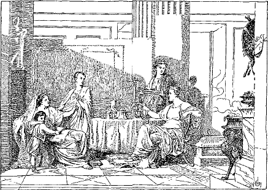
“PUERI MEI SUNT MEA ORNAMENTA”
151. PARADIGMS
| Conjugation III | Conjugation IV |
|---|---|
| SINGULAR | |
| 1. regē´bam, I was ruling | audiē´bam, I was hearing |
| 2. regē´bās, you were riding | audiē´bās, you were hearing |
| 3. regē´bat, he was ruling | audiē´bat, he was hearing |
| PLURAL | |
| 1. regēbā´mus, we were ruling | audiēbā´mus, we were hearing |
| 2. regēbā´tis, you were ruling | audiēbā´tis, you were hearing |
| 3. regē´bant, they were ruling | audiē´bant, they were hearing |
64 1. The tense sign is -bā-, as in the first two conjugations.
2. Observe that the final -ĕ- of the stem is lengthened before the tense sign -bā-. This makes the imperfect of the third conjugation just like the imperfect of the second (cf. monēbam and regēbam).
3. In the fourth conjugation -ē- is inserted between the stem and the tense sign -bā- (audi-ē-ba-m).
4. In a similar manner inflect the verbs given in § 148.
152. EXERCISES
I. 1. Agēbat, veniēbat, mittēbat, dūcēbant. 2. Agēbant, mittēbant, dūcēbas, mūniēbant. 3. Mittēbāmus, dūcēbātis, dīcēbant. 4. Mūniēbāmus, veniēbātis, dīcēbās. 5. Mittēbās, veniēbāmus, reperiēbat. 6. Reperiēbās, veniēbās, audiēbātis. 7. Agēbāmus, reperiēbātis, mūniēbat. 8. Agēbātis, dīcēbam, mūniēbam.
II. 1. They were leading, you were driving (sing. and plur.), he was fortifying. 2. They were sending, we were finding, I was coming. 3. You were sending, you were fortifying, (sing. and plur.), he was saying. 4. They were hearing, you were leading (sing. and plur.), I was driving. 5. We were saying, he was sending, I was fortifying. 6. They were coming, he was hearing, I was finding. 7. You were ruling (sing. and plur.), we were coming, they were ruling.
153. The Dative with Special Intransitive Verbs. We learned above (§ 20. a) that a verb which does not admit of a direct object is called an intransitive verb. Many such verbs, however, are of such meaning that they can govern an indirect object, which will, of course, be in the dative case (§ 45). Learn the following list of intransitive verbs with their meanings. In each case the dative indirect object is the person or thing to which a benefit, injury, or feeling is directed. (Cf. § 43.)
|
crēdō, crēdere, believe (give belief to) faveō, favēre, favor (show favor to) noceō, nocēre, injure (do harm to) pāreō, pārēre, obey (give obedience to) persuādeō, persuādēre, persuade (offer persuasion to) resistō, resistere, resist (offer resistance to) studeō, studēre, be eager for (give attention to) |
65 154. Rule. Dative with Intransitive Verbs. The dative of the indirect object is used with the intransitive verbs crēdō, faveō, noceō, pāreō, persuādeō, resistō, studeō, and others of like meaning.
155. EXERCISE
1. Crēdisne verbīs sociōrum? Multī verbīs eōrum nōn crēdunt. 2. Meī fīnitimī cōnsiliō tuō nōn favēbunt, quod bellō student. 3. Tiberius et Gāius disciplīnae dūrae nōn resistēbant et Cornēliae pārēbant. 4. Dea erat inimīca septem fīliābus rēgīnae. 5. Dūra poena et perpetua trīstitia rēgīnae nōn persuādēbunt. 6. Nūper ea resistēbat et nunc resistit potentiae Lātōnae. 7. Mox sagittae volābunt et līberīs miserīs nocēbunt.
156. In the future tense of the third and fourth conjugations we meet with a new tense sign. Instead of using -bi-, as in the first and second conjugations, we use -ā-1 in the first person singular and -ē- in the rest of the tense. In the third conjugation the final -ĕ- of the stem is dropped before this tense sign; in the fourth conjugation the final -ī- of the stem is retained.2
157. PARADIGMS
| Conjugation III | Conjugation IV |
|---|---|
| SINGULAR | |
| 1. re´gam, I shall rule | au´diam, I shall hear |
| 2. re´gēs, you will rule | au´diēs, you will hear |
| 3. re´get, he will rule | au´diet, he will hear |
| PLURAL | |
| 1. regē´mus, we shall rule | audiē´mus, we shall hear |
| 2. regē´tis, you will rule | audiē´tis, you will hear |
| 3. re´gent, they will rule | au´dient, they will hear |
1. Observe that the future of the third conjugation is like the present of the second, excepting in the first person singular.
2. In the same manner inflect the verbs given in § 148.
158. EXERCISES
I. 1. Dīcet, dūcētis, mūniēmus. 2. Dīcent, dīcētis, mittēmus. 3. Mūnient, venient, mittent, agent. 4. Dūcet, mittēs, veniet, aget. 5. Mūniet, reperiētis, agēmus. 6. Mittam, veniēmus, regent. 7. Audiētis, veniēs, reperiēs. 8. Reperiet, agam, dūcēmus, mittet. 9. Vidēbitis, sedēbō, vocābimus.
II. 1. I shall find, he will hear, they will come. 2. I shall fortify, he will send, we shall say. 3. I shall drive, you will lead, they will hear. 4. You will send, you will fortify, (sing. and plur.), he will say. 5. I shall come, we shall find, they will send.
6. Who3 will believe the story? I4 shall believe the story. 7. Whose friends do you favor? We favor our friends. 8. Who will resist our weapons? Sextus will resist your weapons. 9. Who will persuade him? They will persuade him. 10. Why were you injuring my horse? I was not injuring your horse. 11. Whom does a good slave obey? A good slave obeys his master. 12. Our men were eager for another battle.
159. There are a few common verbs ending in -iō which do not belong to the fourth conjugation, as you might infer, but to the third. The fact that they belong to the third conjugation is shown by the ending of the infinitive. (Cf. § 126.) Compare
|
audiō, audī´re (hear), fourth conjugation capiō, ca´pere (take), third conjugation |
67 160. The present, imperfect, and future active indicative of capiō are inflected as follows:
| capiō, capere, take | ||
| Pres. Stem cape- | ||
| Present | Imperfect | Future |
|---|---|---|
| SINGULAR | ||
| 1. ca´piō | capiē´bam | ca´piam |
| 2. ca´pis | capiē´bās | ca´piēs |
| 3. ca´pit | capiē´bat | ca´piet |
| PLURAL | ||
| 1. ca´pimus | capiēbā´mus | capiē´mus |
| 2. ca´pitis | capiēbā´tis | capiē´tis |
| 3. ca´piunt | capiē´bant | ca´pient |
1. Observe that capiō and the other -iō verbs follow the fourth conjugation wherever in the fourth conjugation two vowels occur in succession. (Cf. capiō, audiō; capiunt, audiunt; and all the imperfect and future.) All other forms are like the third conjugation. (Cf. capis, regis; capit, regit; etc.)
2. Like capiō, inflect
|
faciō, facere, make, do fugiō, fugere, flee iaciō, iacere, hurl rapiō, rapere, seize |
161. The Imperative Mood. The imperative mood expresses a command; as, come! send! The present tense of the imperative is used only in the second person, singular and plural. The singular in the active voice is regularly the same in form as the present stem. The plural is formed by adding -te to the singular.
| Conjugation | Singular | Plural | |
|---|---|---|---|
| I. | amā, love thou | amā´te, love ye | |
| II. | monē, advise thou | monē´te, advise ye | |
| III. | (a) | rege, rule thou | re´gite, rule ye |
| (b) | cape, take thou | ca´pite, take ye | |
| IV. | audī, hear thou | audī´te, hear ye | |
| sum (irregular) | es, be thou | este, be ye | |
1. In the third conjugation the final -ĕ- of the stem becomes -ĭ- in the plural.
68 2. The verbs dīcō, say; dūcō, lead; and faciō, make, have the irregular forms dīc, dūc, and fac in the singular.
3. Give the present active imperative, singular and plural, of veniō, dūcō, vocō, doceō, laudō, dīcō, sedeō, agō, faciō, mūniō, mittō, rapiō.
162. EXERCISES
I. 1. Fugient, faciunt, iaciēbat. 2. Dēlē, nūntiāte, fugiunt. 3. Venīte, dīc, faciētis. 4. Dūcite, iaciam, fugiēbant. 5. Fac, iaciēbāmus, fugimus, rapite. 6. Sedēte, reperī, docēte. 7. Fugiēmus, iacient, rapiēs. 8. Reperient, rapiēbātis, nocent. 9. Favēte, resistē, pārēbitis.
10. Volā ad multās terrās et dā auxilium. 11. Ego tēla mea capiam et multās ferās dēlēbō. 12. Quis fābulae tuae crēdet? 13. Este bonī, puerī, et audīte verba grāta magistrī.
II. 1. The goddess will seize her arms and will hurl her weapons. 2. With her weapons she will destroy many beasts. 3. She will give aid to the weak.1 4. She will fly to many lands and the beasts will flee. 5. Romans, tell2 the famous story to your children.
163. The Voices. Thus far the verb forms have been in the active voice; that is, they have represented the subject as performing an action; as,
The lion——> killed——> the hunter
A verb is said to be in the passive voice when it represents its subject as receiving an action; as,
The lion <—— was killed <—— by the hunter
Note the direction of the arrows.
69 164. Passive Personal Endings. In the passive voice we use a different set of personal endings. They are as follows:
| Sing. | 1. -r, I | Plur. | 1. -mur, we |
| 2. -ris, -re, you | 2. -minī, you | ||
| 3. -tur, he, she, it | 3. -ntur, they |
a. Observe that the letter -r appears somewhere in all but one of the endings. This is sometimes called the passive sign.
165. PARADIGMS
1. The tense sign and the personal endings are added as in the active.
2. In the future the tense sign -bi- appears as -bo- in the first person, -be- in the second, singular number, and as -bu- in the third person plural.
3. Inflect laudō, necō, portō, moveō, dēleō, iubeō, in the present, imperfect, and future indicative, active and passive.
166. Intransitive verbs, such as mātūrō, I hasten; habitō, I dwell, do not have a passive voice with a personal subject.
167. EXERCISES
I. 1. Laudāris or laudāre, laudās, datur, dat. 2. Dabitur, dabit, vidēminī, vidētis. 3. Vocābat, vocābātur, dēlēbitis, dēlēbiminī. 4. Parābātur, parābat, cūrās, cūrāris or cūrāre. 5. Portābantur, portābant, vidēbimur, vidēbimus. 6. Iubēris or iubēre, iubēs, laudābāris or laudābāre, laudābās. 7. Movēberis or movēbere, movēbis, dabantur, dabant. 8. Dēlentur, dēlent, parābāmur, parābāmus.
II. 1. We prepare, we are prepared, I shall be called, I shall call, you were carrying, you were being carried. 2. I see, I am seen, it was being announced, he was announcing, they will order, they will be ordered. 3. You will be killed, you will kill, you move, you are moved, we are praising, we are being praised. 4. I am called, I call, 71 you will have, you are cared for. 5. They are seen, they see, we were teaching, we were being taught, they will move, they will be moved.
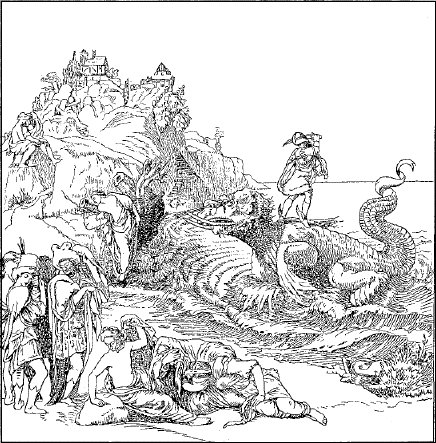
PERSEUS ANDROMEDAM SERVAT
168. Per´seus and Androm´eda
First learn the special vocabulary, p. 288.
Perseus fīlius erat Iovis,2 maximī3 deōrum. Dē eō multās fabulās nārrant poētae. Eī favent deī, eī magica arma et ālās dant. Eīs tēlīs armātus et ālīs frētus ad multās terrās volābat et mōnstra saeva dēlēbat et miserīs īnfīrmīsque auxilium dabat. 72 Aethiopia est terra Āfricae. Eam terram Cēpheus5 regēbat. Eī6 Neptūnus, maximus aquārum deus, erat īrātus et mittit7 mōnstrum saevum ad Aethiopiam. Ibi mōnstrum nōn sōlum lātīs pulchrīsque Aethiopiae agrīs nocēbat sed etiam domicilia agricolārum dēlēbat, et multōs virōs, fēminās, līberōsque necābat. Populus ex agrīs fugiēbat et oppida mūrīs validīs mūniēbat. Tum Cēpheus magnā trīstitiā commōtus ad Iovis ōrāculum properat et ita dīcit: “Amīcī meī necantur; agrī meī vāstantur. Audī verba mea, Iuppiter. Dā miserīs auxilium. Age mōnstrum saevum ex patriā.”
169. Review the present, imperfect, and future indicative active of regō and audiō, and learn the passive of the same tenses (§§ 490, 491).
a. Observe that the tense signs of the imperfect and future are the same as in the active voice, and that the passive personal endings (§ 164) are added instead of the active ones.
b. Note the slight irregularity in the second person singular present of the third conjugation. There the final -e- of the stem is not changed to -i-, as it is in the active. We therefore have re´geris or re´gere, not re´giris, re´gire.
c. Inflect agō, dīcō, dūcō, mūniō, reperiō, in the present, imperfect, and future indicative, active and passive.
170. EXERCISES
I. 1. Agēbat, agēbātur, mittēbat, mittēbātur, dūcēbat. 2. Agunt, aguntur, mittuntur, mittunt, mūniunt. 3. Mittor, mittar, mittam, dūcēre, dūcere. 4. Dīcēmur, dīcimus, dīcēmus, dīcimur, mūniēbaminī. 5. Dūcitur, dūciminī, reperīmur, reperiar, agitur. 6. Agēbāmus, agēbāmur, reperīris, reperiēminī. 7. Mūnīminī, veniēbam, dūcēbar, 73 dīcētur. 8. Mittiminī, mittitis, mittēris, mitteris, agēbāminī. 9. Dīcitur, dīcit, mūniuntur, reperient, audientur.
II. 1. I was being driven, I was driving, we were leading, we were being led, he says, it is said. 2. I shall send, I shall be sent, you will find, you will be found, they lead, they are led. 3. I am found, we are led, they are driven, you were being led (sing. and plur.). 4. We shall drive, we shall be driven, he leads, he is being led, they will come, they will be fortified. 5. They were ruling, they were being ruled, you will send, you will be sent, you are sent, (sing. and plur.). 6. He was being led, he will come, you are said (sing. and plur.).
171. Perseus and Andromeda (Continued)
First learn the special vocabulary, p. 288.
Tum ōrāculum ita respondet: “Mala est fortūna tua. Neptūnus, magnus aquārum deus, terrae Aethiopiae inimīcus, eās poenās mittit. Sed parā īrātō deō sacrum idōneum et mōnstrum saevum ex patriā tuā agētur. Andromeda fīlia tua est mōnstrō grāta. Dā eam mōnstrō. Servā cāram patriam et vītam populī tuī.” Andromeda autem erat puella pulchra. Eam amābat Cēpheus maximē.
172. Review the active voice of capiō, present, imperfect, and future, and learn the passive of the same tenses (§ 492).
a. The present forms capior and capiuntur are like audior, audiuntur, and the rest of the tense is like regor.
b. In like manner inflect the passive of iaciō and rapiō.
173. The Infinitive. The infinitive mood gives the general meaning of the verb without person or number; as, amāre, to love. Infinitive means unlimited. The forms of the other moods, being limited by person and number, are called the finite, or limited, verb forms.
74 174. The forms of the Present Infinitive, active and passive, are as follows:
| Conj. | Pres. Stem | Pres. Infinitive Active | Pres. Infinitive Passive |
|---|---|---|---|
| I. | amā- | amā´re, to love | amā´rī, to be loved |
| II. | monē- | monē´re, to advise | monē´rī, to be advised |
| III. | rege- | re´gere, to rule | re´gī, to be ruled |
| cape- | ca´pere, to take | ca´pī, to be taken | |
| IV. | audī- | audī´re, to hear | audīrī, to be heard |
1. Observe that to form the present active infinitive we add -re to the present stem.
a. The present infinitive of sum is esse. There is no passive.
2. Observe that the present passive infinitive is formed from the active by changing final -e to -ī, except in the third conjugation, which changes final -ere to -ī.
3. Give the active and passive present infinitives of doceō, sedeō, volō, cūrō, mittō, dūcō, mūniō, reperiō, iaciō, rapiō.
175. The forms of the Present Imperative, active and passive, are as follows:
| Active1 | Passive | |||
|---|---|---|---|---|
| CONJ. | SING. | PLUR. | SING. | PLUR. |
| I. | a´mā | amā´te | amā´re, be thou loved | amā´minī, be ye loved |
| II. | mo´nē | monē´te | monē´re, be thou advised | monē´minī, be ye advised |
| III. | re´ge | re´gite | re´gere, be thou ruled | regi´minī, be ye ruled |
| ca´pe | ca´pite | ca´pere, be thou taken | capi´minī, be ye taken | |
| IV. | au´dī | audī´te | audī´re, be thou heard | audī´minī, be ye heard |
1. Observe that the second person singular of the present passive imperative is like the present active infinitive, and that both singular and plural are like the second person singular2 and plural, respectively, of the present passive indicative.
2. Give the present imperative, both active and passive, of the verbs in § 174. 3.
75 176. EXERCISES
First learn the special vocabulary, p. 289.
I. 1. Tum Perseus ālīs ad terrās multās volabit. 2. Mōnstrum saevum per aquās properat et mox agrōs nostrōs vāstābit. 3. Sī autem Cēpheus ad ōrāculum properābit, ōrāculum ita respondēbit. 4. Quis tēlīs Perseī superābitur? Multa mōnstra tēlīs eius superābuntur. 5. Cum cūrīs magnīs et lacrimīs multīs agricolae ex domiciliīs cārīs aguntur. 6. Multa loca vāstābantur et multa oppida dēlēbantur. 7. Mōnstrum est validum, tamen superābitur. 8. Crēdēsne semper verbīs ōrāculī? Ego iīs non semper crēdam. 9. Pārēbitne Cēpheus ōrāculō? Verba ōrāculī eī persuādēbunt. 10. Si nōn fugiēmus, oppidum capiētur et oppidānī necābuntur. 11. Vocāte puerōs et nārrāte fābulam clāram dē mōnstrō saevō.
II. 1. Fly thou, to be cared for, be ye sent, lead thou. 2. To lead, to be led, be ye seized, fortify thou. 3. To be hurled, to fly, send thou, to be found. 4. To be sent, be ye led, to hurl, to be taken. 5. Find thou, hear ye, be ye ruled, to be fortified.
177. You should learn to give rapidly synopses of the verbs you have had, as follows:1
| Conjugation IV | ||
|---|---|---|
| Indicative | ||
| ACTIVE | PASSIVE | |
| Pres. | au´diō | au´dior |
| Imperf. | audiē´bam | audiē´bar |
| Fut. | au´diam | au´diar |
| Imperative | ||
| Pres. | au´dī | audī´re |
| Infinitive | ||
| Pres. | audī´re | audī´rī |
1. Give the synopsis of rapiō, mūniō, reperiō, doceō, videō, dīcō, agō, laudō, portō, and vary the person and number.
178. We learned in § 50 that one of the three relations covered by the ablative case is expressed in English by the preposition from. This is sometimes called the separative ablative, and it has a number of special uses. You have already grown familiar with the first mentioned below.
77 179. Rule. Ablative of the Place From. The place from which is expressed by the ablative with the prepositions ā or ab, dē, ē or ex.
Agricolae ex agrīs veniunt, the farmers come from the fields
a. ā or ab denotes from near a place; ē or ex, out from it; and dē, down from it. This may be represented graphically as follows:
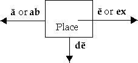
180. Rule. Ablative of Separation. Words expressing separation or deprivation require an ablative to complete their meaning.
a. If the separation is actual and literal of one material thing from another, the preposition ā or ab, ē or ex, or dē is generally used. If no actual motion takes place of one thing from another, no preposition is necessary.
| (a) | Perseus terram ā mōnstrīs līberat Perseus frees the land from monsters (literal separation— actual motion is expressed) |
| (b) | Perseus terram trīstitiā līberat Perseus frees the land from sorrow (figurative separation— no actual motion is expressed) |
181. Rule. Ablative of the Personal Agent. The word expressing the person from whom an action starts, when not the subject, is put in the ablative with the preposition ā or ab.
a. In this construction the English translation of ā, ab is by rather than from. This ablative is regularly used with passive verbs to indicate the person by whom the act was performed.
Mōnstrum ā Perseō necātur, the monster is being slain by (lit. from) Perseus
78 b. Note that the active form of the above sentence would be Perseus monstrum necat, Perseus is slaying the monster. In the passive the object of the active verb becomes the subject, and the subject of the active verb becomes the ablative of the personal agent, with ā or ab.
c. Distinguish carefully between the ablative of means and the ablative of the personal agent. Both are often translated into English by the preposition by. (Cf. § 100. b.) Means is a thing; the agent or actor is a person. The ablative of means has no preposition. The ablative of the personal agent has ā or ab. Compare
|
Fera sagittā necātur, the wild beast is killed by an arrow Fera ā Diānā necātur, the wild beast is killed by Diana |
Sagittā, in the first sentence, is the ablative of means; ā Diānā, in the second, is the ablative of the personal agent.
182. EXERCISES
First learn the special vocabulary, p. 289.
I. 1. Viri inopiā cibī dēfessī ab eō locō discēdent. 2. Gerinānī castrīs Rōmānīs adpropinquābant, tamen lēgātus cōpiās ā proeliō continēbat. 3. Multa Gallōrum oppida ab Rōmanīs capientur. 4. Tum Rōmānī tōtum populum eōrum oppidōrum gladiīs pīlīsque interficient. 5. Oppidānī Rōmānīs resistent, sed defessī longō proelīo fugient. 6. Multī ex Galliā fugiēbant et in Germānōrum vicīs habitābant. 7. Miserī nautae vulnerantur ab inimīcīs2 saevīs et cibō egent. 8. Discēdite et date virīs frūmentum et cōpiam vīnī. 9. Cōpiae nostrae ā proeliō continēbantur ab Sextō lēgatō. 10. Id oppidum ab prōvinciā Rōmānā longē aberat.
II. 1. The weary sailors were approaching a place dear to the goddess Diana. 2. They were without food and without wine. 3. Then Galba and seven other men are sent to the ancient island by Sextus. 4. Already they are not far away from the land, and they see armed men on a high place. 5. They are kept from the land by the men with spears and arrows. 6. The men kept hurling their weapons down from the high place with great eagerness.
183. Principal Parts. There are certain parts of the verb that are of so much consequence in tense formation that we call them the principal parts.
The principal parts of the Latin verb are the present, the past, and the past participle; as go, went, gone; see, saw, seen, etc.
The principal parts of the Latin verb are the first person singular of the present indicative, the present infinitive, the first person singular of the perfect indicative, and the perfect passive participle.
184. Conjugation Stems. From the principal parts we get three conjugation stems, from which are formed the entire conjugation. We have already learned about the present stem, which is found from the present infinitive (cf. § 126. a). The other two stems are the perfect stem and the participial stem.
185. The Perfect Stem. The perfect stem of the verb is formed in various ways, but may always be found by dropping -ī from the first person singular of the perfect, the third of the principal parts. From the perfect stem are formed the following tenses:
The Perfect Active Indicative
The Pluperfect Active Indicative (English Past Perfect)
The Future Perfect Active Indicative
All these tenses express completed action in present, past, or future time respectively.
186. The Endings of the Perfect. The perfect active indicative is inflected by adding the endings of the perfect to the perfect stem. These endings are different from those found in any other tense, and are as follows:
| Sing. | 1. -ī, I | Plur. | 1. -imus, we |
| 2. -istī, you | 2. -istis, you | ||
| 3. -it, he, she, it | 3. -ērunt or -ēre, they |
80 187. Inflection of sum in the perfect, pluperfect, and future perfect indicative:
| Pres. Indic. | Pres. Infin. | Perf. Indic. |
|---|---|---|
| Prin. Parts sum | esse | fuī |
| Perfect Stem fu- | |
| Perfect | |
|---|---|
| SINGULAR | PLURAL |
| fu´ī, I have been, I was | fu´imus, we have been, we were |
| fuis´tī, you have been, you were | fuis´tis, you have been, you were |
| fu´it, he has been, he was | fuē´runt or fuē´re, they have been, they were |
| Pluperfect (Tense Sign -erā-) | |
| fu´eram, I had been | fuerā´mus, we had been |
| fu´erās, you had been | fuerā´tis, you had been |
| fu´erat, he had been | fu´erant, they had been |
| Future Perfect (Tense Sign -erā-) | |
| fu´erō, I shall have been | fue´rimus, we shall have been |
| fu´eris, you will have been | fue´ritis, you will have been |
| fu´erit, he will have been | fu´erint, they will have been |
1. Note carefully the changing accent in the perfect.
2. Observe that the pluperfect may be formed by adding eram, the imperfect of sum, to the perfect stem. The tense sign is -erā-.
3. Observe that the future perfect may be formed by adding erō, the future of sum, to the perfect stem. But the third person plural ends in -erint, not in -erunt. The tense sign is -eri-.
4. All active perfects, pluperfects, and future perfects are formed on the perfect stem and inflected in the same way.
188. DIALOGUE
First learn the special vocabulary, p. 289.
M. Ubi fuistis, Tite et Quīnte?
T. Ego in meō lūdō fuī et Quīntus in suō lūdō fuit. Bonī puerī fuimus.
Fuitne Sextus in vīcō hodiē?
M. Fuit. Nūper per agrōs proximōs fluviō properābat. Ibi is et Cornēlius
habent nāvigium.
81
T. Nāvigium dīcis? Aliī1 nārrā eam
fābulam!
M. Vērō (Yes, truly), pulchrum et novum nāvigium!
Q. Cuius pecūniā2 Sextus et Cornēlius id
nāvigium parant? Quis iīs pecūniam dat?
M. Amīcī Cornēlī multum habent aurum et puer pecūniā nōn eget.
T. Quō puerī nāvigābunt? Nāvigābuntne longē ā terrā?
M. Dubia sunt cōnsilia eōrum. Sed hodiē, crēdō, sī ventus erit idōneus,
ad maximam īnsulam nāvigābunt. Iam anteā ibi fuērunt. Tum autem ventus
erat perfidus et puerī magnō in perīculō erant.
Q. Aqua ventō commōta est inimīca nautīs semper, et saepe perfidus
ventus nāvigia rapit, agit, dēletque. Iī puerī, sī nōn fuerint maximē
attentī, īrātā aquā et validō ventō superābuntur et ita interficientur.
189. EXERCISE
1. Where had the boys been before? They had been in school. 2. Where had Sextus been? He had been in a field next to the river. 3. Who has been with Sextus to-day? Cornelius has been with him. 4. Who says so? Marcus. 5. If the wind has been suitable, the boys have been in the boat. 6. Soon we shall sail with the boys. 7. There3 will be no danger, if we are (shall have been) careful.4
190. Meanings of the Perfect. The perfect tense has two distinct meanings. The first of these is equivalent to the English present perfect, or perfect with have, and denotes that the action of the verb is complete at the time of speaking; as, I have finished my work. As this denotes completed action at a definite time, it is called the perfect definite.
82 The perfect is also used to denote an action that happened sometime in the past; as, I finished my work. As no definite time is specified, this is called the perfect indefinite. It corresponds to the ordinary use of the English past tense.
a. Note carefully the difference between the following tenses:
| I | was finishing used to finish |
my work (imperfect, § 134) |
| I finished my work (perfect indefinite) | ||
| I have finished my work (perfect definite) | ||
When telling a story the Latin uses the perfect indefinite to mark the different forward steps of the narrative, and the imperfect to describe situations and circumstances that attend these steps. If the following sentences were Latin, what tenses would be used?
“Last week I went to Boston. I was trying to find an old friend of mine, but he was out of the city. Yesterday I returned home.”
191. Inflection of the Perfect. We learned in § 186 that any perfect is inflected by adding the endings of the perfect to the perfect stem. The inflection in the four regular conjugations is then as follows:
| Conj. I | Conj. II | Conj. III | Conj. IV | |
|---|---|---|---|---|
| amāvī | monuī | rēxī | cēpī | audīvī |
I have loved |
I have advised |
I have ruled |
I have taken |
I have heard |
| Perfect Stems | ||||
| amāv- | monu- | rēx- | cēp- | audīv- |
| Singular | ||||
| 1. amā´vī | mo´nuī | rē´xī | cē´pī | audī´vī |
| 2. amāvis´tī | monuis´tī | rēxis´tī | cēpis´tī | audīvis´tī |
| 3. amā´vit | mo´nuit | rē´xit | cē´pit | audī´vit |
| Plural | ||||
| 1. amā´vimus | monu´imus | rē´ximus | cē´pimus | audī´vimus |
| 2. amāvis´tis | monuis´tis | rēxis´tis | cēpis´tis | audīvis´tis |
3. amāvē´runt or amāvē´re |
monuē´runt or monuē´re |
rēxē´runt or rēxē´re |
cēpē´runt or cēpē´re |
audīvē´runt or audīvē´re |
83 1. The first person of the perfect is always given as the third of the principal parts. From this we get the perfect stem. This shows the absolute necessity of learning the principal parts thoroughly.
2. Nearly all perfects of the first conjugation are formed by adding -vī to the present stem. Like amāvī inflect parāvī, vocāvī, cūrāvī, laudāvī.
3. Note carefully the changing accent in the perfect. Drill on it.
192. Learn the principal parts and inflect the perfects:
| Pres. Indic. | Pres. Infin. | Perf. Indic. | |
|---|---|---|---|
| dō | dăre | dedī | give |
| dēleō | dēlēre | dēlēvī | destroy |
| habeō | habēre | habuī | have |
| moveō | movēre | mōvī | move |
| pāreō | pārēre | pāruī | obey |
| prohibeō | prohibēre | prohībuī | restrain, keep from |
| videō | vidēre | vīdī | see |
| dīcō | dīcere | dīxī | say |
| discēdō | discēdere | discessī | depart |
| dūcō | dūcere | dūxī | lead |
| faciō | facere | fēcī | make, do |
| mittō | mittere | mīsī | send |
| mūniō | mūnīre | mūnīvī | fortify |
| veniō | venīre | vēnī | come |
193. Perseus and Andromeda (Continued)
First learn the special vocabulary, p. 290.
Cēpheus, adversā fortūnā maximē commōtus, discessit et multīs cum lacrimīs populō Aethiopiae verba ōrāculī nārrāvit. Fāta Andromedae, puellae pulchrae, ā tōtō populō dēplōrābantur, tamen nūllum erat auxilium. Deinde Cēpheus cum plēnō trīstitiae animō cāram suam fīliam ex oppidī portā ad aquam dūxit et bracchia eius ad saxa dūra revīnxit. Tum amīcī puellae miserae longē discessērunt et diū mōnstrum saevum exspectāvērunt.
Tum forte Perseus, ālīs frētus, super Aethiopiam volābat. Vīdit populum, Andromedam, lacrimās, et, magnopere attonitus, ad terram dēscendit. Tum Cēpheus eī tōtās cūrās nārrāvit et ita dīxit: “Pārēbō verbīs ōrāculī, et prō patriā fīliam meam dabō; sed sī id mōnstrum interficiēs et Andromedam servābis, tibi (to you) eam dabō.”
84| Conj. I | Conj. II | Conj. III | Conj. IV | ||
|---|---|---|---|---|---|
| amō | moneō | regō | capiō | audiō | |
| Perfect Stems | amāv- | monu- | rēx- | cēp- | audīv- |
| Pluperfect Indicative Active | ||||
|---|---|---|---|---|
| Tense Sign -erā- | ||||
| SINGULAR | ||||
| I had loved | I had advised | I had ruled | I had taken | I had heard |
| 1. amā´veram | monu´eram | rē´xeram | cē´peram | audī´veram |
| 2. amā´verās | monu´erās | rē´xerās | cē´perās | audī´verās |
| 3. amā´verat | monu´erat | rē´xerat | cē´perat | audī´verat |
| PLURAL | ||||
| 1. amāverā´mus | monuerā´mus | rēxerā´mus | cēperā´mus | audīverā´mus |
| 2. amāverā´tis | monuerā´tis | rēxerā´tis | cēperā´tis | audīverā´tis |
| 3. ama´verant | monu´erant | rē´xerant | cē´perant | audī´verant |
| Future Perfect Indicative Active | ||||
| Tense Sign -eri- | ||||
| SINGULAR | ||||
I shall have loved |
I shall have advised |
I shall have ruled |
I shall have taken |
I shall have heard |
| 1. amā´verō | monu´erō | rē´xerō | cē´perō | audī´verō |
| 2. amā´veris | monu´eris | rē´xeris | cē´peris | audī´veris |
| 3. amā´verit | monu´erit | rē´xerit | cē´perit | audī´verit |
| PLURAL | ||||
| 1. amāve´rimus | monue´rimus | rēxe´rimus | cēpe´rimus | audīve´rimus |
| 2. amāve´ritis | monue´ritis | rēxe´ritis | cēpe´ritis | audīve´ritis |
| 3. amā´verint | monu´erint | rē´xerint | cē´perint | audī´verint |
1. Observe that these are all inflected alike and the rules for formation given in § 187. 2-4 hold good here.
2. In like manner inflect the pluperfect and future perfect indicative active of dō, portō, dēleō, moveō, habeō, dīcō, discēdō, faciō, veniō, mūniō.
85 195. The Perfect Active Infinitive. The perfect active infinitive is formed by adding -isse to the perfect stem.
| Conj. | Perfect Stem | Perfect Infinitive | |
|---|---|---|---|
| I. | amāv- | amāvis´se, to have loved | |
| II. | monu- | monuis´se, to have advised | |
| III. | (a) | rēx- | rēxis´se, to have ruled |
| (b) | cēp- | cēpis´se, to have taken | |
| IV. | audīv- | audīvis´se, to have heard | |
| sum | fu- | fuis´se, to have been | |
1. In like manner give the perfect infinitive active of dō, portō, dēleō, moveō, habeō, dīcō, discēdō, faciō, veniō, mūniō.
196. EXERCISES
I. 1. Habuistī, mōvērunt, miserant. 2. Vīdit, dīxeris, dūxisse. 3. Mīsistis, pāruērunt, discesserāmus. 4. Mūnīvit, dederam, mīserō. 5. Habuerimus, dēlēvī, pāruit, fuisse. 6. Dederās, mūnīveritis, vēnerātis, mīsisse. 7. Vēnerās, fēcisse, dederātis, portāveris.
8. Quem verba ōrāculī mōverant? Populum verba ōrāculī mōverant. 9. Cui Cēpheus verba ōrāculī nārrāverit? Perseō Cēpheus verba ōrāculī nārrāverit. 10. Amīcī ab Andromedā discesserint. 11. Mōnstrum saevum domicilia multa dēlēverat. 12. Ubi mōnstrum vīdistis? Id in aquā vīdimus. 13. Quid mōnstrum faciet? Mōnstrum Andromedam interficiet.
II. 1. They have obeyed, we have destroyed, I shall have had. 2. We shall have sent, I had come, they have fortified. 3. I had departed, he has obeyed, you have sent (sing. and plur.). 4. To have destroyed, to have seen, he will have given, they have carried. 5. He had destroyed, he has moved, you have had (sing. and plur.). 6. I have given, you had moved (sing. and plur.), we had said. 7. You will have made (sing. and plur.), they will have led, to have given.
8. Who had seen the monster? Andromeda had seen it. 9. Why had the men departed from1 the towns? They had departed because the monster had come. 10. Did Cepheus obey2 the oracle3? He did.
197. A review of the tenses of the indicative active shows the following formation:
| TENSES OF THE INDICATIVE | Present = First of the principal parts | |
| Imperfect = Present stem + -ba-m | ||
| Future = Present stem + |
-bō, Conj. I and II -a-m, Conj. III and IV |
|
| Perfect = Third of the principal parts | ||
| Pluperfect = Perfect stem + -era-m | ||
| Future Perfect = Perfect stem + -erō | ||
198. The synopsis of the active voice of amō, as far as we have learned the conjugation, is as follows:
Principal Parts amō, amāre, amāvī
| Pres. Stem amā- | Perf. Stem amāv- | ||
| Indic. | Pres. amō | Indic. | Perf. amāvī |
| Imperf. amābam | Pluperf. amāveram | ||
| Fut. amābō | Fut. perf. amāverō | ||
| Pres. Imv. amā | |||
| Pres. Infin. amāre | Perf. Infin. amāvisse | ||
1. Learn to write in the same form and to give rapidly the principal parts and synopsis of parō, dō, laudō, dēleō, habeō, moveō, pāreō, videō, dīcō, discēdō, dūcō, mittō, capiō, muniō, veniō.1
199. Learn the following principal parts:2
200. Perseus and Andromeda (Concluded)
First learn the special vocabulary, p. 290. Read the whole story.
Perseus semper proeliō studēbat3 et respondit,3 “Verba tua sunt maximē grāta,” et laetus arma sua magica parāvit.3 Subitō mōnstrum vidētur; celeriter per aquam properat et Andromedae adpropinquat. Eius amīcī longē absunt et misera puella est sōla. Perseus autem sine morā super aquam volāvit.3 Subitō dēscendit3 et dūrō gladiō saevum mōnstrum graviter vulnerāvit.3 Diū pugnātur,4 diū proelium est dubium. Dēnique autem Perseus mōnstrum interfēcit3 et victōriam reportāvit.3 Tum ad saxum vēnit3 et Andromedam līberāvit3 et eam ad Cēpheum dūxit.3 Is, nūper miser, nunc laetus, ita dīxit3: “Tuō auxiliō, mī amīce, cāra fīlia mea est lībera; tua est Andromeda.” Diū Perseus cum Andromedā ibi habitābat3 et magnopere ā tōtō populō amābātur.3
201. The fourth and last of the principal parts (§ 183) is the perfect passive participle. From it we get the participial stem on which are formed the future active infinitive and all the passive perfects.
1. Learn the following principal parts, which are for the first time given in full:
| Conj. | Pres. Indic. | Pres. Infin. | Perf. Indic. | Perf. Pass. Part |
|---|---|---|---|---|
| I. | amō | amā´-re | amā´v-ī | amā´t-us |
| This is the model for all regular verbs of the first conjugation. | ||||
| II. | mo´neō | monē´-re | mo´nu-ī | mo´nit-us |
| III. | regō | re´ge-re | rēx-ī | rēct-us |
| ca´piō | ca´pe-re | cēp-ī | capt-us | |
| IV. | au´diō | audī´-re | audī´v-ī | audī´t-us |
2. The base of the participial stem is found by dropping -us from the perfect passive participle.
202. In English the perfect, past perfect, and future perfect tenses of the indicative passive are made up of forms of the auxiliary verb to be and the past participle; as, I have been loved, I had been loved, I shall have been loved.
Very similarly, in Latin, the perfect, pluperfect, and future perfect passive tenses use respectively the present, imperfect, and future of sum as an auxiliary verb with the perfect passive participle, as
|
Perfect passive, amā´tus sum, I have been or was loved Pluperfect passive, amā´tus eram, I had been loved Future perfect passive, amā´tus erō, I shall have been loved |
1. In the same way give the synopsis of the corresponding tenses of moneō, regō, capiō, and audiō, and give the English meanings.
203. Nature of the Participle. A participle is partly verb and partly adjective. As a verb it possesses tense and voice. As an adjective it 89 is declined and agrees with the word it modifies in gender, number, and case.
204. The perfect passive participle is declined like bonus, bona, bonum, and in the compound tenses (§ 202) it agrees as a predicate adjective with the subject of the verb.
|
Examples in Singular |
Vir laudātus est, the man was praised, or has been praised Puella laudāta est, the girl was praised, or has been praised Cōnsilium laudātum est, the plan was praised, or has been praised |
|
Examples in Plural |
Virī laudātī sunt, the men were praised, or have been praised Puellae laudātae sunt, the girls were praised, or have been praised Cōnsilia laudāta sunt, the plans were praised, or have been praised |
1. Inflect the perfect, pluperfect, and future perfect indicative passive of amō, moneō, regō, capiō, and audiō (§§ 488-492).
205. The perfect passive infinitive is formed by adding esse, the present infinitive of sum, to the perfect passive participle; as, amā´t-us (-a, -um) esse, to have been loved; mo´nit-us (-a, -um) esse, to have been advised.
1. Form the perfect passive infinitive of regō, capiō, audiō, and give the English meanings.
206. The future active infinitive is formed by adding esse, the present infinitive of sum, to the future active participle. This participle is made by adding -ūrus, -a, -um to the base of the participial stem. Thus the future active infinitive of amō is amat-ū´rus (-a, -um) esse, to be about to love.
a. Note that in forming the three tenses of the active infinitive we use all three conjugation stems:
|
Present, amāre (present stem), to love Perfect, amāvisse (perfect stem), to have loved Future, amātūrus esse (participial stem), to be about to love |
1. Give the three tenses of the active infinitive of laudō, moneō, regō, capiō, audiō, with the English meanings.
90 207. EXERCISES
I. 1. Fābula Andromedae nārrāta est. 2. Multae fābulae ā magistrō nārrātae sunt. 3. Ager ab agricolā validō arātus erat. 4. Agrī ab agricolīs validīs arātī erant. 5. Aurum ā servō perfidō ad domicilium suum portātum erit. 6. Nostra arma ā lēgātō laudāta sunt. Quis vestra arma laudāvit? 7. Ab ancillā tuā ad cēnam vocātae sumus. 8. Andromeda mōnstrō nōn data est, quia mōnstrum ā Perseō necātum erat.
II. 1. The provinces were laid waste, the field had been laid waste, the towns will have been laid waste. 2. The oracles were heard, the oracle was heard, the oracles had been heard. 3. The oracle will have been heard, the province had been captured, the boats have been captured. 4. The fields were laid waste, the man was advised, the girls will have been advised. 5. The towns had been ruled, we shall have been captured, you will have been heard.
208. The following list shows the principal parts of all the verbs you have had excepting those used in the paradigms. The parts you have had before are given for review, and the perfect participle is the only new form for you to learn. Sometimes one or more of the principal parts are lacking, which means that the verb has no forms based on that stem. A few verbs lack the perfect passive participle but have the future active participle in -ūrus, which appears in the principal parts instead.
| Irregular Verbs | ||||
|---|---|---|---|---|
sum |
esse |
fuī |
futūrus |
be |
| Conjugation I | ||||
|---|---|---|---|---|
| portō | portāre | portāvī | portātus | carry |
| So for all verbs of this conjugation thus far used. | ||||
| Conjugation II | ||||
contineō |
continēre |
continuī |
contentus |
hold in, keep |
| Conjugation III | ||||
agō |
agere |
ēgī |
āctus |
drive |
| Conjugation IV | ||||
mūniō |
mūnīre |
mūnīvī |
mūnītus |
fortify |
92 209. Prepositions. 1. We learned in §§ 52, 53 that only the accusative and the ablative are used with prepositions, and that prepositions expressing ablative relations govern the ablative case. Those we have had are here summarized. The table following should be learned.
|
ā or ab, from, by cum, with dē, down from, concerning ē or ex, out from, out of prō, before, in front of; for, in behalf of sine, without |
2. Prepositions not expressing ablative relations must govern the accusative (§ 52). Of these we have had the following:
|
ad, to apud, among per, through |
There are many others which you will meet as we proceed.
3. The preposition in when meaning in or on governs the ablative; when meaning to, into, against (relations foreign to the ablative) in governs the accusative.
210. Yes-or-No Questions. Questions not introduced by some interrogative word like who, why, when, etc., but expecting the answer yes or no, may take one of three forms:
|
1. Is he coming? (Asking for information. Implying nothing as to the answer expected.) 2. Is he not coming? (Expecting the answer yes.) 3. He isn´t coming, is he? (Expecting the answer no.) |
These three forms are rendered in Latin as follows:
|
1. Venitne? is he coming? 2. Nōnne venit? is he not coming? 3. Num venit? he isn´t coming, is he? |
a. -ne, the question sign, is usually added to the verb, which then stands first.
b. We learned in § 56. b that yes-or-no questions are usually answered by repeating the verb, with or without a negative. Instead of this, ita, vērō, certē, etc. (so, truly, certainly, etc.) may be used for yes, and nōn, minimē, etc. for no if the denial is emphatic, as, by no means, not at all.
93 211. EXERCISES
First learn the special vocabulary, p. 290.
I. 1. Nōnne habēbat Cornēlia ōrnāmenta aurī? Habēbat. 2. Num Sextus lēgātus scūtum in dextrō bracchiō gerēbat? Nōn in dextrō, sed sinistrō in bracchiō Sextus scūtum gerēbat. 3. Frūstrā bella multa ab Gallīs gesta erant. 4. Ubi oppidum ā perfidō Sextō occupātum est, oppidānī miserī gladiō interfectī sunt. 5. Id oppidum erat plēnum frūmentī. 6. Nōnne Sextus ab oppidānīs frūmentum postulāvit? Vērō, sed iī recūsāvērunt frūmentum dare. 7. Cūr oppidum ab Sextō dēlētum est? Quia frūmentum recūsātum est. 8. Ea victōria nōn dubia erat. 9. Oppidānī erant dēfessī et armīs egēbant. 10. Num fugam temptāvērunt? Minimē.
II. 1. Where was Julia standing? She was standing where you had ordered. 2. Was Julia wearing any ornaments? She had many ornaments of gold. 3. Did she not attempt flight when she saw the danger? She did. 4. Who captured her? Galba captured her without delay and held her by the left arm. 5. She didn´t have the lady’s gold, did she? No, the gold had been taken by a faithless maid and has been brought back.
212. Learn the principal parts of possum, I am able, I can, and its inflection in the indicative and infinitive. (Cf. § 495.)
a. Possum, I can, is a compound of potis, able, and sum, I am.
213. The Infinitive with Subject Accusative. The infinitive (cf. § 173) is a verbal noun. Used as a noun, it has the constructions of a noun. As a verb it can govern a case and be modified by an adverb. The uses of the infinitive are much the same in Latin as in English.
94 1. In English certain verbs of wishing, commanding, forbidding, and the like are used with an object clause consisting of a substantive in the objective case and an infinitive, as, he commanded the men to flee. Such object clauses are called infinitive clauses, and the substantive is said to be the subject of the infinitive.
Similarly in Latin, some verbs of wishing, commanding, forbidding, and the like are used with an object clause consisting of an infinitive with a subject in the accusative case, as, Is virōs fugere iussit, he commanded the men to flee.
214. Rule. Subject of the Infinitive. The subject of the infinitive is in the accusative.
215. The Complementary Infinitive. In English a verb is often followed by an infinitive to complete its meaning, as, the Romans are able to conquer the Gauls. This is called the complementary infinitive, as the predicate is not complete without the added infinitive.
Similarly in Latin, verbs of incomplete predication are completed by the infinitive. Among such verbs are possum, I am able, I can; properō, mātūrō, I hasten; temptō, I attempt; as
|
Rōmānī Gallōs superāre possunt, the Romans are able to (or can) conquer the Gauls Bellum gerere mātūrant, they hasten to wage war |
a. A predicate adjective completing a complementary infinitive agrees in gender, number, and case with the subject of the main verb.
Malī puerī esse bonī nōn possunt, bad boys are not able to (or cannot) be good.
Observe that bonī agrees with puerī.
216. The Infinitive used as a Noun. In English the infinitive is often used as a pure noun, as the subject of a sentence, or as a predicate nominative. For example, To conquer (= conquering) is pleasing; To see (= seeing) is to believe (= believing). The same use of the infinitive is found in Latin, especially with est, as
|
Superāre est grātum, to conquer is pleasing Vidēre est crēdere, to see is to believe |
95 a. In the construction above, the infinitive often has a subject, which must then be in the accusative case, as
Galbam superāre inimīcōs est grātum multīs,
for Galba to conquer his enemies is pleasing to many
b. An infinitive used as a noun is neuter singular. Thus, in the sentence superāre est grātum, the predicate adjective grātum is in the neuter nominative singular to agree with superāre the subject.
217. EXERCISES
First learn the special vocabulary, p. 291.
I. 1. Magister lūdī līberōs cum dīligentiā labōrāre iussit. 2. Egēre cibō et vinō est virīs molestum. 3. Virī armātī vetuērunt Gallōs castra ibi pōnere. 4. Estne lēgātus in castellō an in mūrō? Is est prō portā. 5. Ubi nostrī1 fugere incēpērunt, lēgātus ab vestrīs1 captus est. 6. Gallī castellum ibi oppugnāverant ubi praesidium erat īnfīrmum. 7. Aliī pugnāre temptābant, aliī portās petēbant. 8. Fēminae prō domiciliīs sedēbant neque resistere validīs Gallīs poterant. 9. Bellum est saevum, nec īnfīrmīs nec miserīs favet. 10. Sed virī arma postulābant et studēbant Gallōs dē mūrīs agere. 11. Id castellum ab Gallīs occupārī Rōmānīs nōn grātum erit. 12. Gallī ubi ā Rōmānīs victī sunt, esse līberī2 cessāvērunt. 13. Diū sine aquā vīvere nōn potestis.
II. 1. The girl began daily to carry water from the river to the gates. 2. The Gauls had pitched their camp in a place suitable for a battle. 3. For a long time they tried in vain to seize the redoubt. 4. Neither did they cease to hurl weapons against3 the walls. 5. But they were not able to (could not) take the town.
218. The Faithless Tarpe´ia
Sabīnī ōlim cum Rōmānīs bellum gerēbant et multās victōriās reportāverant. Iam agrōs proximōs mūrīs vāstābant, iam oppidō adpropinquābant. Rōmānī autem in Capitōlium fūgerant et longē perīculō 96 aberant. Mūrīs validīs et saxīs altīs crēdēbant. Frūstrā Sabīnī tēla iaciēbant, frūstrā portās dūrās petēbant; castellum occupāre nōn poterant. Deinde novum cōnsilium cēpērunt.4
Tarpēia erat puella Rōmāna pulchra et superba. Cotīdiē aquam cōpiīs Rōmānīs in Capitōlium portābat. Eī5 nōn nocēbant Sabīnī, quod ea sine armīs erat neque Sabīnī bellum cum fēminīs līberīsque gerēbant. Tarpēia autem maximē amābat ōrnāmenta aurī. Cotīdiē Sabīnōrum ōrnāmenta vidēbat et mox ea dēsīderāre incipiēbat. Eī ūnus ex6 Sabīnīs dīxit, “Dūc cōpiās Sabīnās intrā portās, Tarpēia, et maxima erunt praemia tua.”
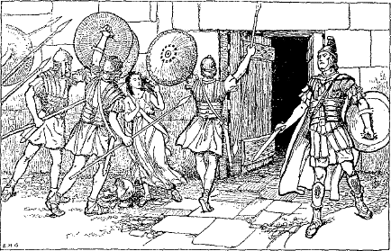
TARPEIA PUELLA PERFIDA
219. Sentences are simple, compound, or complex.
a. A simple sentence is a sentence containing but one statement, that is, one subject and one predicate: The Romans approached the town.
b. A compound sentence is a sentence containing two or more independent statements: The Romans approached the town | and | the enemy fled.
Note. An independent statement is one that can stand alone; it does not depend upon another statement.
c. A complex sentence is a sentence containing one independent statement and one or more dependent statements: When the Romans approached the town | the enemy fled.
Note. A dependent or subordinate statement is one that depends on or qualifies another statement; thus the enemy fled is independent, and when the Romans approached the town is dependent or subordinate.
d. The separate statements in a compound or complex sentence are called clauses. In a complex sentence the independent statement is called the main clause and the dependent statement the subordinate clause.
220. Examine the complex sentence
The Romans killed the men who were taken
Here are two clauses:
a. The main clause, The Romans killed the men
b. The subordinate clause, who were taken
The word who is a pronoun, for it takes the place of the noun men. It also connects the subordinate clause who were taken with the noun men. Hence the clause is an adjective clause. A pronoun that connects an adjective clause with a substantive is called a relative pronoun, and the substantive for which the relative pronoun stands is called its antecedent. The relative pronouns in English are who, whose, whom, which, what, that.
98 221. The relative pronoun in Latin is quī, quae, quod, and it is declined as follows:
| Singular | Plural | |||||
|---|---|---|---|---|---|---|
| MASC. | FEM. | NEUT. | MASC. | FEM. | NEUT. | |
| Nom. | quī | quae | quod | quī | quae | quae |
| Gen. | cuius | cuius | cuius | quōrum | quārum | quōrum |
| Dat. | cui | cui | cui | quibus | quibus | quibus |
| Acc. | quem | quam | quod | quōs | quās | quae |
| Abl. | quō | quā | quō | quibus | quibus | quibus |
1. Review the declension of is, § 114, and note the similarity in the endings. The forms quī, quae, and quibus are the only forms showing new endings.
Note. The genitive cuius and the dative cui are pronounced co͝oi´yo͝os (two syllables) and co͝oi (one syllable).
222. The Relative Pronoun is translated as follows:1
| Masc. and Fem. | Neut. | |
|---|---|---|
| Nom. | who, that | which, what, that |
| Gen. | of whom, whose | of which, of what, whose |
| Dat. | to or for whom | to or for which, to or for what |
| Acc. | whom, that | which, what, that |
| Abl. | from, etc., whom | from, etc., which or what |
a. We see from the table above that quī, when it refers to a person, is translated by some form of who or by that; and that when it refers to anything else it is translated by which, what, or that.
223. Note the following sentences:
|
The Romans killed the men who were taken The Romans killed the woman who was taken Rōmānī interfēcērunt virōs quī captī sunt Rōmānī interfēcērunt fēminam quae capta est |
In the first sentence who (quī) refers to the antecedent men (virōs), and is masculine plural. In the second, who (quae) refers to woman (fēminam), and feminine singular. From this we learn that the relative must agree 99 with its antecedent in gender and number. In neither of the sentences are the antecedents and relatives in the same case. Virōs and fēminam are accusatives, and quī and quae are nominatives, being the subjects of the subordinate clauses. Hence
224. Rule. Agreement of the Relative. A relative pronoun must agree with its antecedent in gender and number; but its case is determined by the way it is used in its own clause.
225. Interrogative Pronouns. An interrogative pronoun is a pronoun that asks a question. In English the interrogatives are who? which? what? In Latin they are quis? quid? (pronoun) and quī? quae? quod? (adjective).
226. Examine the sentences
|
a. Who is the man? Quis est vir? b. What man is leading them? Quī vir eōs dūcit? |
In a, who is an interrogative pronoun. In b, what is an interrogative adjective. Observe that in Latin quis, quid is the pronoun and quī, quae, quod is the adjective.
227. 1. The interrogative adjective quī, quae, quod is declined just like the relative pronoun. (See § 221.)
2. The interrogative pronoun quis, quid is declined like quī, quae, quod in the plural. In the singular it is declined as follows:
| Masc. and Fem. | Neut. | |
|---|---|---|
| Nom. | quis, who? | quid, what? which? |
| Gen. | cuius, whose? | cuius, whose? |
| Dat. | cui, to or for whom? | cui, to or for what or which? |
| Acc. | quem, whom? | quid, what? which? |
| Abl. | quō, from, etc., whom? | quō, from, etc., which or what? |
Note. Observe that the masculine and feminine are alike and that all the forms are like the corresponding forms of the relative, excepting quis and quid.
228. EXERCISES
I. 1. Quis est aeger? Servus quem amō est aeger. 2. Cuius scūtum habēs? Scūtum habeō quod lēgātus ad castellum mīsit. 3. Cui lēgātus suum scūtum dabit? Fīliō meō scūtum dabit. 4. Ubi Germānī 100 antīquī vīvēbant? In terrā quae est proxima Rhēnō Germānī vīvēbant. 5. Quibuscum2 Germānī bellum gerēbant? Cum Rōmānīs, qui eōs superāre studēbant, Germānī bellum gerēbant. 6. Quī virī castra pōnunt? Iī sunt virī quōrum armīs Germānī victī sunt. 7. Quibus tēlīs cōpiae nostrae eguērunt? Gladiīs et telīs nostrae cōpiae eguērunt. 8. Ā quibus porta sinistra tenēbātur? Ā sociīs porta sinistra tenēbātur. 9. Quae prōvinciae ā Rōmānīs occupātae sunt? Multae prōvinciae ā Rōmānīs occupātae sunt. 10. Quibus virīs deī favēbunt? Bonīs virīs deī favēbunt.
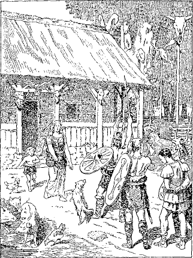
GERMANI ANTIQUI
II. 1. What victory will you announce? 2. I will announce to the people the victory which the sailors have won. 3. The men who were pitching camp were eager for battle. 4. Nevertheless they were soon conquered by the troops which Sextus had sent. 5. They could not resist our forces, but fled from that place without delay.
229. The Faithless Tarpeia (Concluded)3
Tarpēia, commōta ōrnamentīs Sabīnōrum pulchrīs, diū resistere nōn potuit et respondit: “Date mihi4 ōrnāmenta quae in sinistrīs bracchīs geritis, et celeriter cōpiās vestrās in Capitōlium dūcam.” Nec 101 Sabīnī recūsāvērunt, sed per dūrās magnāsque castellī portās properāvērunt quō5 Tarpēia dūxit et mox intrā validōs et altōs mūrōs stābant. Tum sine morā in6 Tarpēiam scūta graviter iēcērunt; nam scūta quoque in sinistrīs bracchiīs gerēbant. Ita perfida puella Tarpēia interfecta est; ita Sabīnī Capitōlium occupāvērunt.
230. Bases and Stems. In learning the first and second declensions we saw that the different cases were formed by adding the case terminations to the part of the word that did not change, which we called the base. If to the base we add -ā in the first declension, and -o in the second, we get what is called the stem. Thus porta has the base port- and the stem portā-; servus has the base serv- and the stem servo-.
These stem vowels, -ā- and -o-, play so important a part in the formation of the case terminations that these declensions are named from them respectively the Ā- and O-Declensions.
231. Nouns of the Third Declension. The third declension is called the Consonant or I-Declension, and its nouns are classified according to the way the stem ends. If the last letter of the stem is a consonant, the word is said to have a consonant stem; if the stem ends in -i-, the word is said to have an i-stem. In consonant stems the stem is the same as the base. In i-stems the stem is formed by adding -i- to the base. The presence of the i makes a difference in certain of the cases, so the distinction is a very important one.
232. Consonant stems are divided into two classes:
I. Stems that add -s to the base to form the nominative singular.
II. Stems that add no termination in the nominative singular.
102233. Stems that add -s to the base in the nominative singular are either masculine or feminine and are declined as follows:
| prīnceps, m., chief | mīles, m., soldier | lapis, m., stone | ||
| Bases or Stems |
prīncip- | mīlit- | lapid- | |
| Singular | TERMINATIONS M. AND F. |
|||
|---|---|---|---|---|
| Nom. | prīnceps | mīles | lapis | -s |
| Gen. | prīn´cipis | mīlitis | lapidis | -is |
| Dat. | prīn´cipī | mīlitī | lapidī | -ī |
| Acc. | prīn´cipem | mīlitem | lapidem | -em |
| Abl. | prīn´cipe | mīlite | lapide | -e |
| Plural | ||||
| Nom. | prīn´cipēs | mīlitēs | lapidēs | -ēs |
| Gen. | prīn´cipum | mīlitum | lapidum | -um |
| Dat. | prīnci´pibus | mīlitibus | lapidibus | -ibus |
| Acc. | prīn´cipēs | mīlitēs | lapidēs | -ēs |
| Abl. | prīnci´pibus | mīlitibus | lapidibus | -ibus |
| |
||||
| rēx, m., king | iūdex, m., judge | virtūs, f., manliness | ||
| Bases or Stems |
rēg- | iūdic- | virtūt- | |
| Nom. | rēx | iūdex | virtūs | -s |
| Gen. | rēgis | iūdicis | virtū´tis | -is |
| Dat. | rēgī | iūdicī | virtū´tī | -ī |
| Acc. | rēgem | iūdicem | virtū´tem | -em |
| Abl. | rēge | iūdice | virtū´te | -e |
| Plural | ||||
| Nom. | rēgēs | iūdicēs | virtū´tēs | -ēs |
| Gen. | rēgum | iūdicum | virtū´tum | -um |
| Dat. | rēgibus | iūdicibus | virtū´tibus | -ibus |
| Acc. | rēgēs | iūdicēs | virtū´tēs | -ēs |
| Abl. | rēgibus | iūdicibus | virtū´tibus | -ibus |
1. The base or stem is found by dropping -is in the genitive singular.
2. Most nouns of two syllables, like prīnceps (prīncip-), mīles (mīlit-), iūdex (iūdic-), have i in the base, but e in the nominative.
103a. lapis is an exception to this rule.
3. Observe the consonant changes of the base or stem in the nominative:
a. A final -t or -d is dropped before -s; thus mīles for mīlets, lapis for lapids, virtūs for virtūts.
b. A final -c or -g unites with -s and forms -x; thus iūdec + s = iūdex, rēg + s = rēx.
4. Review § 74 and apply the rules to this declension.
In like manner decline dux, ducis, m., leader; eques, equitis, m., horseman; pedes, peditis, m., foot soldier; pēs, pedis, m.,foot.
234. EXERCISES
First learn the special vocabulary, p. 291.
I. 1. Neque peditēs neque equitēs occupāre castellum Rōmānum poterant. 2. Summā virtūte mūrōs altōs cotīdiē oppugnābant. 3. Pedes mīlitum lapidibus quī dē mūrō iaciēbantur saepe vulnerābantur. 4. Quod novum cōnsilium dux cēpit? 5. Is perfidam puellam pulchrīs ōrnāmentīs temptāvit. 6. Quid puella fēcit? 7. Puella commōta aurō mīlitēs per portās dūxit. 8. Tamen praemia quae summō studiō petīverat nōn reportāvit. 9. Apud Rōmānōs antīquōs Tarpēia nōn est laudāta.
II. 1. What ship is that which I see? That (illud) ship is the Victory. It is sailing now with a favorable wind and will soon approach Italy. 2. The judges commanded the savages to be seized and to be killed. 3. The chiefs of the savages suddenly began to flee, but were quickly captured by the horsemen. 4. The king led the foot soldiers to the wall from which the townsmen were hurling stones with the greatest zeal.
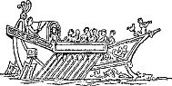
NAVIGIUM
235. Consonant stems that add no termination in the nominative are declined in the other cases exactly like those that add -s. They may be masculine, feminine, or neuter.
236. PARADIGMS
| Masculines and Feminines | |||||
|---|---|---|---|---|---|
| cōnsul, m., consul | legiō, f., legion | ōrdō, m., row | pater, m., father | ||
| Bases or Stems |
cōnsul- | legiōn- | ōrdin- | patr- | |
| Singular | TERMINATIONS M. AND F. |
||||
| Nom. | cōnsul | legiō | ōrdō | pater | — |
| Gen. | cōnsulis | legiōnis | ōrdinis | patris | -is |
| Dat. | cōnsulī | legiōnī | ōrdinī | patrī | -ī |
| Acc. | cōnsulem | legiōnem | ōrdinem | patrem | -em |
| Abl. | cōnsule | legiōne | ōrdine | patre | -e |
| Plural | |||||
| Nom. | cōnsulēs | legiōnēs | ōrdinēs | patrēs | -ēs |
| Gen. | cōnsulum | legiōnum | ōrdinum | patrum | -um |
| Dat. | cōnsulibus | legiōnibus | ōrdinibus | patribus | -ibus |
| Acc. | cōnsulēs | legiōnēs | ōrdinēs | patrēs | -ēs |
| Abl. | cōnsulibus | legiōnibus | ōrdinibus | patribus | -ibus |
1. With the exception of the nominative, the terminations are exactly the same as in Class I, and the base or stem is found in the same way.
2. Masculines and feminines with bases or stems in -in- and -ōn- drop -n- and end in -ō in the nominative, as legiō (base or stem legiōn-), ōrdō (base or stem ōrdin-).
3. Bases or stems in -tr- have -ter in the nominative, as pater (base or stem patr-).
4. Note how the genitive singular gives the clue to the whole declension. Always learn this with the nominative.
105 237. EXERCISES
First learn the special vocabulary, p. 291.
I. 1. Audīsne tubās, Mārce? Nōn sōlum tubās audiō sed etiam ōrdinēs militum et carrōs impedīmentōrum plēnōs vidēre possum. 2. Quās legiōnēs vidēmus? Eae legiōnēs nūper ex Galliā vēnērunt. 3. Quid ibi fēcērunt? Studēbantne pugnāre an sine virtūte erant? 4. Multa proelia fēcērunt1 et magnās victōriās et multōs captīvōs reportāvērunt. 5. Quis est imperātor eārum legiōnum? Caesar, summus Rōmānōrum imperātor. 6. Quis est eques quī pulchram corōnam gerit? Is eques est frāter meus. Eī corōna ā cōnsule data est quia summā virtūte pugnāverat et ā barbarīs patriam servāverat.
II. 1. Who has seen my father to-day? 2. I saw him just now (nūper). He was hastening to your dwelling with your mother and sister. 3. When men are far from the fatherland and lack food, they cannot be restrained2 from wrong3. 4. The safety of the soldiers is dear to Cæsar, the general. 5. The chiefs were eager to storm a town full of grain which was held by the consul. 6. The king forbade the baggage of the captives to be destroyed.
238. Neuter consonant stems add no termination in the nominative and are declined as follows:
1. Review § 74 and apply the rules to this declension.
2. Bases or stems in -in- have -e- instead of -i- in the nominative, as flūmen, base or stem flūmin-.
3. Most bases or stems in -er- and -or- have -us in the nominative, as opus, base or stem oper-; tempus, base or stem tempor-.
239. EXERCISES
First learn the special vocabulary, p. 292.
I. 1. Barbarī ubi Rōmam cēpērunt, maxima rēgum opera dēlēvērunt. 2. Rōmānī multās calamitātēs ā barbarīs accēpērunt. 3. Ubi erat summus terror apud oppidānōs, animī dubiī eōrum ab ōrātōre clarō cōnfīrmāti sunt. 4. Rōma est in rīpīs fiūminis magnī. 5. Ubi Caesar imperātor mīlitēs suōs arma capere iussit, iī ā proeliō continērī nōn potuērunt. 6. Ubi proelium factum est, imperātor reperīrī nōn potuit. 7. Imperātor sagittā in capite vulnerātus erat et stāre nōn poterat. 8. Eum magnō labōre pedes ex proeliō portāvit. 9. Is bracchiīs suīs imperātōrem tenuit et eum ex perīculīs summīs servāvit. 10. Virtūte suā bonus mīles ab imperātōre corōnam accēpit.
II. 1. The consul placed a crown on the head of the victor. 2. Before the gates he was received by the townsmen. 3. A famous orator praised him and said, “By your labors you have saved the fatherland from disaster.” 4. The words of the orator were pleasing to the victor. 5. To save the fatherland was a great task.
CORONA
240. Review the paradigms in §§ 233, 236, 238; and decline all nouns of the third declension in this selection.
Ōlim Cimbrī et Teutonēs, populī Germāniae, cum fēminīs līberīsque Italiae adpropinquāverant et cōpiās Rōmānās maximō proeliō vīcerant. Ubi fuga legiōnum nūntiāta est, summus erat terror tōtīus Rōmae, et Rōmānī, graviter commōtī, sacra crēbra deīs faciēbant et salūtem petēbant.
Tum Mānlius ōrātor animōs populī ita cōnfīrmāvit:—“Magnam calamitātem accēpimus. Oppida nostra ā Cimbrīs Teutonibusque capiuntur, agricolae interficiuntur, agrī vāstantur, cōpiae barbarōrum Rōmae adpropinquant. Itaque, nisi novīs animīs proelium novum faciēmus et Germānōs ex patriā nostrā sine morā agēmus, erit nūlla salūs fēminīs nostrīs līberīsque. Servāte līberōs! Servāte patriam! Anteā superātī sumus quia imperātōrēs nostrī fuērunt īnfīrmī. Nunc Marius, clārus imperātor, quī iam multās aliās victōriās reportāvit, legiōnēs dūcet et animōs nostrōs terrōre Cimbricō līberāre mātūrābit.”
Marius tum in Āfricā bellum gerēbat. Sine morā ex Āfricā in Italiam vocātus est. Cōpiās novās nōn sōlum tōtī Italiae sed etiam prōvinciīs sociōrum imperāvit.2 Disciplīnā autem dūrā labōribusque perpetuīs mīlitēs exercuit. Tum cum peditibus equitibusque, quī iam proeliō studēbant, ad Germānōrum castra celeriter properāvit. Diū et ācriter pugnātum est.3 Dēnique barbarī fūgērunt et multī in fugā ab equitibus sunt interfectī. Marius pater patriae vocātus est.
241. To decline a noun of the third declension correctly we must know whether or not it is an i-stem. Nouns with i-stems are
1. Masculines and feminines:
a. Nouns in -ēs and -īs with the same number of syllables in the genitive as in the nominative. Thus caedēs, caedis, is an i-stem, but mīles, mīlitis, is a consonant stem.
b. Nouns in -ns and -rs.
c. Nouns of one syllable in -s or -x preceded by a consonant.
2. Neuters in -e, -al, and -ar.
242. The declension of i-stems is nearly the same as that of consonant stems. Note the following differences:
a. Masculines and feminities have -ium in the genitive plural and -īs or -ēs in the accusative plural.
b. Neuters have -ī in the ablative singular, and an -i- in every form of the plural.
243. Masculine and Feminine I-Stems. Masculine and feminine i-stems are declined as follows:
1. avis, cīvis, fīnis, ignis, nāvis have the ablative singular in -ī or -e.
2. turris has accusative turrim and ablative turrī or turre.
244. Neuter I-Stems. Neuter i-stems are declined as follows:
| īnsigne, n., decoration | animal, n., animal | calcar, n., spur | ||
| Stems | īnsigni- | animāli- | calcāri- | |
|---|---|---|---|---|
| Bases | īnsign- | animāl- | calcār- | |
| Singular | TERMINATIONS | |||
| Nom. | īnsigne | animal | calcar | -e or— |
| Gen. | īnsignis | animālis | calcāris | -is |
| Dat. | īnsignī | animālī | calcārī | -ī |
| Acc. | īnsigne | animal | calcar | -e or— |
| Abl. | īnsignī | animālī | calcārī | -ī |
| Plural | ||||
| Nom. | īnsignia | animālia | calcāria | -ia |
| Gen. | īnsignium | animālium | calcārium | -ium |
| Dat. | īnsignibus | animālibus | calcāribus | -ibus |
| Acc. | īnsignia | animālia | calcāria | -ia |
| Abl. | īnsignibus | animālibus | calcāribus | -ibus |
1. Review § 74 and see how it applies to this declension.
2. The final -i- of the stem is usually dropped in the nominative. If not dropped, it is changed to -e.
3. A long vowel is shortened before final -l or -r. (Cf. § 12. 2.)
245. EXERCISES
First learn the special vocabulary, p. 292.
I. 1. Quam urbem vidēmus? Urbs quam vidētis est Rōma. 2. Cīvēs Rōmānī urbem suam turribus altīs et mūrīs longīs mūnīverant. 3. Ventī nāvīs longās prohibēbant fīnibus hostium adpropinquāre. 4. Imperātor a clientibus suīs calcāria aurī et alia īnsignia accēpit. 5. Mīlitēs Rōmānī cum hostibus bella saeva gessērunt et eōs caede 110 magnā superāvērunt. 6. Alia animālia terram, alia mare amant. 7. Nāvēs longae quae auxilium ad imperātōrem portābant ignī ab hostibus dēlētae sunt. 8. In eō marī avis multās vīdimus quae longē ā terrā volāverant. 9. Nōnne vīdistis nāvīs longās hostium et ignīs quibus urbs nostra vāstābātur? Certē, sed nec caedem cīvium nec fugam clientium vīdimus. 10. Avēs et alia animālia, ubi ignem vīdērunt, salūtem fugā petere celeriter incēpērunt. 11. Num. iūdex in peditum ōrdinibus stābat? Minimē, iūdex erat apud equitēs et equus eius īnsigne pulchrum gerēbat.
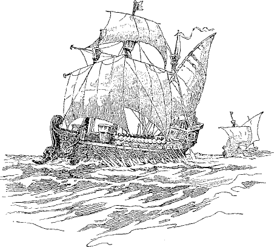
NAVES LONGAE
II. 1. Because of the lack of grain the animals of the village were not able to live. 2. When the general2 heard the rumor, he quickly sent a horseman to the village. 3. The horseman had a beautiful horse and wore spurs of gold. 4. He said to the citizens, “Send your retainers with horses and wagons to our camp, and you will receive an abundance of grain.” 5. With happy hearts they hastened to obey his words.3
246. PARADIGMS
| vīs, f., force | iter, n., march | |
| Stems | vī- and vīri- | iter- and itiner- |
|---|---|---|
| Bases | v- and vīr- | iter- and itiner- |
| Singular | ||
| Nom. | vīs | iter |
| Gen. | vīs (rare) | itineris |
| Dat. | vī (rare) | itinerī |
| Acc. | vim | iter |
| Abl. | vī | itinere |
| Plural | ||
| Nom. | vīrēs | itinera |
| Gen. | vīrium | itinerum |
| Dat. | vīribus | itineribus |
| Acc. | vīrīs, or -ēs | itinera |
| Abl. | vīribus | itineribus |
247. There are no rules for gender in the third declension that do not present numerous exceptions.1 The following rules, however, are of great service, and should be thoroughly mastered:
1. Masculine are nouns in -or, -ōs, -er, -ĕs (gen. -itis).
a. arbor, tree, is feminine; and iter, march, is neuter.
2. Feminine are nouns in -ō, -is, -x, and in -s preceded by a consonant or by any long vowel but ō.
a. Masculine are collis (hill), lapis, mēnsis (month), ōrdō, pēs, and nouns in -nis and -guis—as ignis, sanguis (blood)—and the four monosyllables
|
dēns, a tooth |
3. Neuters are nouns in -e, -al, -ar, -n, -ur, -ŭs, and caput.
112 248. Give the gender of the following nouns and the rule by which it is determined:
| animal | calamitās | flūmen | lapis | nāvis |
| avis | caput | ignis | legiō | opus |
| caedēs | eques | īnsigne | mare | salūs |
| calcar | fīnis | labor | mīles | urbs |
249. EXERCISES
First learn the special vocabulary, p. 292.
I. The First Bridge over the Rhine. Salūs sociōrum erat semper cāra Rōmānīs. Ōlim Gallī, amīcī Rōmānōrum, multās iniūriās ab Germānīs quī trāns flūmen Rhēnum vivēbant accēperant. Ubi lēgātī ab iīs ad Caesarem imperātōrem Rōmānum vēnērunt et auxilium postulāvērunt, Rōmānī magnīs itineribus ad hostium fīnīs properāvērunt. Mox ad rīpās magnī flūminis vēnērunt. Imperātor studēbat cōpiās suās trāns fluvium dūcere, sed nūllā viā2 poterat. Nūllās nāvīs habēbat. Alta erat aqua. Imperātor autem, vir clārus, numquam adversā fortūnā commōtus, novum cōnsilium cēpit. Iussit suōs3 in4 lātō flūmine facere pontem. Numquam anteā pōns in Rhēnō vīsus erat. Hostēs ubi pontem quem Rōmānī fēcerant vīdērunt, summō terrōre commōtī, sine morā fugam parāre incēpērunt.
II. 1. The enemy had taken (possession of) the top of the mountain. 2. There were many trees on the opposite hills. 3. We pitched our camp near (ad) a beautiful spring. 4. A march through the enemies’ country is never without danger. 5. The time of the month was suitable for the march. 6. The teeth of the monster were long. 7. When the foot soldiers4 saw the blood of the captives, they began to assail the fortifications with the greatest violence.5
250. Adjectives are either of the first and second declensions (like bonus, aeger, or līber), or they are of the third declension.
251. Nearly all adjectives of the third declension have i-stems, and they are declined almost like nouns with i-stems.
252. Adjectives learned thus far have had a different form in the nominative for each gender, as, bonus, m.; bona, f.; bonum, n. Such an adjective is called an adjective of three endings. Adjectives of the third declension are of the following classes:
| I. |
Adjectives of three endings— |
| II. |
Adjectives of two endings— |
| III. |
Adjectives of one ending— |
253. Adjectives of the third declension in -er have three endings; those in -is have two endings; the others have one ending.
254. Adjectives of Three Endings are declined as follows:
| ācer, ācris, ācre, keen, eager | ||||||
| Stem ācri- | Base ācr- | |||||
| Singular | Plural | |||||
|---|---|---|---|---|---|---|
| MASC. | FEM. | NEUT. | MASC. | FEM. | NEUT. | |
| Nom. | ācer | ācris | ācre | ācrēs | ācrēs | ācria |
| Gen. | ācris | ācris | ācris | ācrium | ācrium | ācrium |
| Dat. | ācrī | ācrī | ācrī | ācribus | ācribus | ācribus |
| Acc. | ācrem | ācrem | ācre | ācrīs, -ēs | ācrīs, -ēs | ācria |
| Abl. | ācrī | ācrī | ācrī | ācribus | ācribus | ācribus |
255. Adjectives of Two Endings are declined as follows:
| omnis, omne, every, all1 | ||||
| Stem omni- | Base omn- | |||
| Singular | Plural | |||
|---|---|---|---|---|
| MASC. AND FEM. | NEUT. | MASC. AND FEM. | NEUT. | |
| Nom. | omnis | omne | omnēs | omnia |
| Gen. | omnis | omnis | omnium | omnium |
| Dat. | omnī | omnī | omnibus | omnibus |
| Acc. | omnem | omne | omnīs, ēs | omnia |
| Abl. | omnī | omnī | omnibus | omnibus |
256. Adjectives of One Ending are declined as follows:
| pār, equal | ||||
| Stem pari- | Base par- | |||
| Singular | Plural | |||
|---|---|---|---|---|
| MASC. AND FEM. | NEUT. | MASC. AND FEM. | NEUT. | |
| Nom. | pār | pār | parēs | paria |
| Gen. | paris | paris | parium | parium |
| Dat. | parī | parī | paribus | paribus |
| Acc. | parem | pār | parīs, ēs | paria |
| Abl. | parī | parī | paribus | paribus |
1. All i-stem adjectives have -ī in the ablative singular.
2. Observe that the several cases of adjectives of one ending have the same form for all genders excepting in the accusative singular and in the nominative and accusative plural.
3. Decline vir ācer, legiō ācris, animal ācre, ager omnis, scūtum omne, proelium pār.
257. There are a few adjectives of one ending that have consonant stems. They are declined exactly like nouns with consonant stems.
115 258. EXERCISES
First learn the special vocabulary, p. 293.
I. The Romans invade the Enemy’s Country. Ōlim peditēs Rōmānī cum equitibus vēlōcibus in hostium urbem iter faciēbant. Ubi nōn longē āfuērunt, rapuērunt agricolam, quī eīs viam brevem et facilem dēmōnstrāvit. Iam Rōmānī moenia alta, turrīs validās aliaque opera urbis vidēre poterant. In moenibus stābant multī prīncipēs. Prīncipēs ubi vīdērunt Rōmānōs, iussērunt cīvīs lapidēs aliaque tēla dē mūrīs iacere. Tum mīlitēs fortēs continērī ā proeliō nōn poterant et ācer imperātor signum tubā darī iussit. Summā vī omnēs mātūrāvērunt. Imperātor Sextō lēgātō impedīmenta omnia mandāvit. Sextus impedīmenta in summō colle conlocāvit. Grave et ācre erat proelium, sed hostēs nōn parēs Rōmānīs erant. Aliī interfectī, aliī captī sunt. Apud captīvōs erant māter sororque rēgis. Paucī Rōmānōrum ab hostibus vulnerātī sunt. Secundum proelium Rōmānīs erat grātum. Fortūna fortibus semper favet.
II. 1. Some months are short, others are long. 2. To seize the top of the mountain was difficult. 3. Among the hills of Italy are many beautiful springs. 4. The soldiers were sitting where the baggage had been placed because their feet were weary. 5. The city which the soldiers were eager to storm had been fortified by strong walls and high towers. 6. Did not the king intrust a heavy crown of gold and all his money to a faithless slave? Yes, but the slave had never before been faithless.
AQUILA LEGIONIS
259. Nouns of the fourth declension are either masculine or neuter.
260. Masculine nouns end in -us, neuters in -ū. The genitive ends in -ūs.
a. Feminine by exception are domus, house; manus, hand; and a few others.
| adventus, m., arrival | cornū, n., horn | |||
| Stems | adventu- | cornu- | ||
| Bases | advent- | corn- | ||
| Singular | TERMINATIONS | |||
|---|---|---|---|---|
| MASC. | NEUT. | |||
| Nom. | adventus | cornū | -us | -ū |
| Gen. | adventūs | cornūs | -ūs | -ūs |
| Dat. | adventuī (ū) | cornū | -uī (ū) | -ū |
| Acc. | adventum | cornū | -um | -ū |
| Abl. | adventū | cornū | -ū | -ū |
| Plural | ||||
| Nom. | adventūs | cornua | -ūs | -ua |
| Gen. | adventuum | cornuum | -uum | -uum |
| Dat. | adventibus | cornibus | -ibus | -ibus |
| Acc. | adventūs | cornua | -ūs | -ua |
| Abl. | adventibus | cornibus | -ibus | -ibus |
1. Observe that the base is found, as in other declensions, by dropping the ending of the genitive singular.
2. lacus, lake, has the ending -ubus in the dative and ablative plural; portus, harbor, has either -ubus or -ibus.
3. cornū is the only neuter that is in common use.
261. EXERCISES
First learn the special vocabulary, p. 293.
I. 1. Ante adventum Caesaris vēlōcēs hostium equitēs ācrem impetum in castra fēcērunt. 2. Continēre exercitum ā proeliō nōn facile erat. 3. Post adventum suum Caesar iussit legiōnēs ex castrīs 117 dūcī. 4. Prō castrīs cum hostium equitātū pugnātum est. 5. Post tempus breve equitātus trāns flūmen fūgit ubi castra hostium posita erant. 6. Tum victor imperātor agrōs vāstāvit et vīcōs hostium cremāvit. 7. Castra autem nōn oppugnāvit quia mīlitēs erant dēfessī et locus difficilis. 8. Hostēs nōn cessāvērunt iacere tēla, quae paucīs nocuērunt. 9. Post adversum proelium principēs Gallōrum lēgātōs ad Caesarem mittere studēbant, sed populō persuādēre nōn poterant.
II. 1. Did you see the man-of-war on the lake? 2. I did not see it (fem.) on the lake, but I saw it in the harbor. 3. Because of the strong wind the sailor forbade his brother to sail. 4. Cæsar didn´t make an attack on the cavalry on the right wing, did he? 5. No, he made an attack on the left wing. 6. Who taught your swift horse to obey? 7. I trained my horse with my (own) hands, nor was the task difficult. 8. He is a beautiful animal and has great strength.
262. We have become thoroughly familiar with expressions like the following:
|
Galba ad (or in) oppidum properat Galba ab (dē or ex) oppidō properat Galba in oppidō habitat |
From these expressions we may deduce the following rules:
263. Rule. Accusative of the Place to. The place to which is expressed by ad or in with the accusative. This answers the question Whither?
264. Rule. Ablative of the Place from. The place from which is expressed by ā or ab, dē, ē or ex, with the separative ablative. This answers the question Whence? (Cf. Rule, § 179.)
265. Rule. Ablative of the Place at or in. The place at or in which is expressed by the ablative with in. This answers the question Where?
118 a. The ablative denoting the place where is called the locative ablative (cf. locus, place).
266. Exceptions. Names of towns, small islands,1 domus, home, rūs, country, and a few other words in common use omit the prepositions in expressions of place, as,
|
Galba Athēnās properat, Galba hastens to Athens Galba Athēnīs properat, Galba hastens from Athens Galba Athēnīs habitat, Galba lives at (or in) Athens Galba domum properat, Galba hastens home Galba rūs properat, Galba hastens to the country Galba domō properat, Galba hastens from home Galba rūre properat, Galba hastens from the country Galba rūrī (less commonly rūre) habitat, Galba lives in the country |
a. Names of countries, like Germānia, Italia, etc., do not come under these exceptions. With them prepositions must not be omitted.
267. The Locative Case. We saw above that the place-relation expressed by at or in is regularly covered by the locative ablative. However, Latin originally expressed this relation by a separate form known as the locative case. This case has been everywhere merged in the ablative excepting in the singular number of the first and second declensions. The form of the locative in these declensions is like the genitive singular, and its use is limited to names of towns and small islands, domī, at home, and a few other words.
268. Rule. Locative and Locative Ablative. To express the place in which with names of towns and small islands, if they are singular and of the first or second declension, use the locative; otherwise use the locative ablative without a preposition; as,
|
Galba Rōmae habitat, Galba lives at Rome Galba Corinthī habitat, Galba lives at Corinth Galba domī habitat, Galba lives at home |
119 Here Rōmae, Corinthī, and domī are locatives, being singular and of the first and second declensions respectively. But in
|
Galba Athēnīs habitat, Galba lives at Athens, Galba Pompēiīs habitat, Galba lives at Pompeii |
Athēnīs and Pompēiīs are locative ablatives. These words can have no locative case, as the nominatives Athēnae and Pompēiī areplural and there is no plural locative case form.
269. The word domus, home, house, has forms of both the second and the fourth declension. Learn its declension (§ 468).
270. EXERCISES
First learn the special vocabulary, p. 293.
I. 1. Corinthī omnia īnsignia aurī ā ducibus victōribus rapta erant. 2. Caesar Genāvam exercitum magnīs itineribus dūxit. 3. Quem pontem hostēs cremāverant? Pontem in Rhēnō hostēs cremāverant. 4. Pompēiīs multās Rōmānōrum domōs vidēre poteritis. 5. Rōmā cōnsul equō vēlōcī rūs properāvit. 6. Domī cōnsulis hominēs multī sedēbant. 7. Imperātor iusserat lēgātum Athēnās cum multīs nāvibus longīs nāvigāre. 8. Ante moenia urbis sunt ōrdinēs arborum altārum. 9. Propter arborēs altās nec lacum nec portum reperīre potuimus. 10. Proeliīs crēbrīs Caesar legiōnēs suās quae erant in Galliā exercēbat. 11. Cotīdiē in locō idoneō castra pōnēbat et mūniēbat.
II. 1. Cæsar, the famous general, when he had departed from Rome, hastened to the Roman province on a swift horse.2 2. He had heard a rumor concerning the allies at Geneva. 3. After his arrival Cæsar called the soldiers together and commanded them to join battle. 4. The enemy hastened to retreat, some because3 they were afraid, others because3 of wounds. 5. Recently I was at Athens and saw the place where the judges used to sit.4 6. Marcus and Sextus are my brothers; the one lives at Rome, the other in the country.
271. Daed´alus and Ic´arus
Crēta est īnsula antīqua quae aquā altā magnī maris pulsātur. Ibi ōlim Mīnōs erat rēx. Ad eum vēnit Daedalus quī ex Graeciā patriā fugiēbat. Eum Mīnōs rēx benignīs verbīs accēpit et eī domicilium in Crētā dedit. 5Quō in locō Daedalus sine cūrā vīvebat et rēgī multa et clāra opera faciēbat. Post tempus longum autem Daedalus patriam cāram dēsīderāre incēpit. Domum properāre studēbat, sed rēgī persuādēre nōn potuit et mare saevum fugam vetābat.
272. Gender. Nouns of the fifth declension are feminine except diēs, day, and merīdiēs, midday, which are usually masculine.
273. PARADIGMS
| diēs, m., day | rēs, f. thing | ||
| Stems | diē- | rē- | |
|---|---|---|---|
| Bases | di- | r- | |
| Singular | TERMINATIONS | ||
| Nom. | diēs | rēs | -ēs |
| Gen. | diēī | reī | -ē̆ī |
| Dat. | diēī | reī | -ē̆ī |
| Acc. | diem | rem | -em |
| Abl. | diē | rē | -ē |
| Plural | |||
| Nom. | diēs | rēs | -ēs |
| Gen. | diērum | rērum | -ērum |
| Dat. | diēbus | rēbus | -ēbus |
| Acc. | diēs | rēs | -ēs |
| Abl. | diēbus | rēbus | -ēbus |
122 1. The vowel e which appears in every form is regularly long. It is shortened in the ending -eī after a consonant, as in r-ĕī; and before -m in the accusative singular, as in di-em. (Cf. § 12. 2.)
2. Only diēs and rēs are complete in the plural. Most other nouns of this declension lack the plural. Aciēs, line of battle, and spēs, hope, have the nominative and accusative plural.
274. The ablative relation (§ 50) which is expressed by the prepositions at, in, or on may refer not only to place, but also to time, as at noon, in summer, on the first day. The ablative which is used to express this relation is called the ablative of time.
275. Rule. The Ablative of Time. The time when or within which anything happens is expressed by the ablative without a preposition.
a. Occasionally the preposition in is found. Compare the English Next day we started and On the next day we started.
276. EXERCISES
First learn the special vocabulary, p. 294.
I. Galba the Farmer. Galba agricola rūrī vīvit. Cotīdiē prīmā lūce labōrāre incipit, nec ante noctem in studiō suō cessat. Merīdiē Iūlia fīlia eum ad cēnam vocat. Nocte pedēs dēfessōs domum vertit. Aestāte fīliī agricolae auxilium patrī dant. Hieme agricola eōs in lūdum mittit. Ibi magister pueris multās fābulās dē rēbus gestīs Caesaris nārrat. Aestāte fīliī agricolae perpetuīs labōribus exercentur nec grave agrī opus est iīs molestum. Galba sine ūllā cūrā vivit nec rēs adversās timet.
II. 1. In that month there were many battles in Gaul. 2. The cavalry of the enemy made an attack upon Cæsar’s line of battle. 3. In the first hour of the night the ship was overcome by the billows. 4. On the second day the savages were eager to come under Cæsar’s protection. 5. The king had joined battle, moved by the hope of victory. 6. That year a fire destroyed many birds and other animals. 7. We saw blood on the wild beast’s teeth.
123277. Daed´alus and Ic´arus (Continued)
Tum Daedalus gravibus cūrīs commōtus fīliō suō Īcarō ita dixit: “Animus meus, Īcare, est plēnus trīstitiae nec oculī lacrimīs egent. Discēdere ex Crētā, Athēnās properāre, maximē studeō; sed rēx recūsat audīre verba mea et omnem reditūs spem ēripit. Sed numquam rēbus adversīs vincar. Terra et mare sunt inimīca, sed aliam fugae viam reperiam.” Tum in artīs ignōtās animum dīmittit et mīrum capit cōnsilium. Nam pennās in ōrdine pōnit et vērās ālās facit.
278. We have the same kinds of pronouns in Latin as in English. They are divided into the following eight classes:
1. Personal pronouns, which show the person speaking, spoken to, or spoken of; as, ego, I; tū, you; is, he. (Cf. § 279. etc.)
2. Possessive pronouns, which denote possession; as, meus, tuus, suus, etc. (Cf. § 98.)
3. Reflexive pronouns, used in the predicate to refer back to the subject; as, he saw himself. (Cf. § 281.)
4. Intensive pronouns, used to emphasize a noun or pronoun; as, I myself saw it. (Cf. § 285.)
5. Demonstrative pronouns, which point out persons or things; as, is, this, that. (Cf. § 112.)
6. Relative pronouns, which connect a subordinate adjective clause with an antecedent; as, quī, who. (Cf. § 220.)
7. Interrogative pronouns, which ask a question; as, quis, who? (Cf. § 225.)
8. Indefinite pronouns, which point out indefinitely; as, some one, any one, some, certain ones, etc. (Cf. § 296.)
279. The demonstrative pronoun is, ea, id, as we learned in § 115, is regularly used as the personal pronoun of the third person (he, she, it, they, etc.).
124 280. The personal pronouns of the first person are ego, I; nōs, we; of the second person, tū, thou or you; vōs, ye or you. They are declined as follows:
| Singular | ||
|---|---|---|
| FIRST PERSON | SECOND PERSON | |
| Nom. | ego, I | tū, you |
| Gen. | meī, of me | tuī, of you |
| Dat. | mihi, to or for me | tibi, to or for you |
| Acc. | mē, me | tē, you |
| Abl. | mē, with, from, etc., me | tē, with, from, etc., you |
| Plural | ||
| Nom. | nōs, we | vōs, you |
| Gen. | nostrum or nostrī, of us | vestrum or vestrī, of you |
| Dat. | nōbīs, to or for us | vōbīs, to or for you |
| Acc. | nōs, us | vōs, you |
| Abl. | nōbīs, with, from, etc., us | vōbīs, with, from, etc., you |
1. The personal pronouns are not used in the nominative excepting for emphasis or contrast.
281. The Reflexive Pronouns. 1. The personal pronouns ego and tū may be used in the predicate as reflexives; as,
| videō mē, I see myself | vidēmus nōs, we see ourselves |
| vidēs tē, you see yourself | vidētis vōs, you see yourselves |
2. The reflexive pronoun of the third person (himself, herself, itself, themselves) has a special form, used only in these senses, and declined alike in the singular and plural.
| Singular and Plural | |||
|---|---|---|---|
| Gen. | suī | Acc. | sē |
| Dat. | sibi | Abl. | sē |
| Examples |
Puer sē videt, the boy sees himself Puella sē videt, the girl sees herself Animal sē videt, the animal sees itself Iī sē vident, they see themselves |
a. The form sē is sometimes doubled, sēsē, for emphasis.
| I teach myself | We teach ourselves |
| You teach yourself | You teach yourselves |
| He teaches himself | They teach themselves |
282. The preposition cum, when used with the ablative of ego, tū, or suī, is appended to the form, as, mēcum, with me; tēcum, with you; nōbīscum, with us; etc.
283. EXERCISES
First learn the special vocabulary, p. 294.
I. 1. Mea māter est cāra mihi et tua māter est cāra tibi. 2. Vestrae litterae erant grātae nōbis et nostrae litterae erant grātae vōbīs. 3. Nūntius rēgis quī nōbīscum est nihil respondēbit. 4. Nūntiī pācem amīcitiamque sibi et suīs sociīs postulāvērunt. 5. Sī tū arma sūmēs, ego rēgnum occupābō. 6. Uter vestrum est cīvis Rōmānus? Neuter nostrum. 7. Eō tempore multī supplicium dedērunt quia rēgnum petierant. 8. Sūme supplicium, Caesar, dē hostibus patriae ācribus. 9. Prīmā lūce aliī metū commōtī sēsē fugae mandāvērunt; aliī autem magnā virtūte impetum exercitūs nostrī sustinuērunt. 10. Soror rēgis, ubi dē adversō proeliō audīvit, sēsē Pompēiīs interfēcit.
II. 1. Whom do you teach? I teach myself. 2. The soldier wounded himself with his sword. 3. The master praises us, but you he does not praise. 4. Therefore he will inflict punishment on you, but we shall not suffer punishment. 5. Who will march (i.e. make a march) with me to Rome? 6. I will march with you to the gates of the city. 7. Who will show us1 the way? The gods will show you1 the way.
284. Puer Īcarus ūnā2 stābat et mīrum patris opus vidēbat. Postquam manus ultima3 ālīs imposita est, Daedalus eās temptāvit et similis avī in aurās volāvit. Tum ālās umerīs fīlī adligāvit et docuit eum volāre et dīxit, “Tē vetō, mī fīlī, adpropinquāre aut sōlī aut marī. Sī fluctibus adpropinquāveris,4 aqua ālīs tuīs nocēbit, et sī sōlī adpropinquāveris,4 126 ignis eās cremābit.” Tum pater et filius iter difficile incipiunt. Ālās movent et aurae sēsē committunt. Sed stultus puer verbīs patris nōn pāret. Sōlī adpropinquat. Ālae cremantur et Īcarus in mare dēcidit et vitam āmittit. Daedalus autem sine ūllō perīculō trāns fluctūs ad īnsulam Siciliam volāvit.
285. Ipse means -self (him-self, her-self, etc.) or is translated by even or very. It is used to emphasize a noun or pronoun, expressed or understood, with which it agrees like an adjective.
a. Ipse must be carefully distinguished from the reflexive suī. The latter is always used as a pronoun, while ipse is regularly adjective. Compare
|
Homō sē videt, the man sees himself (reflexive) Homō ipse perīculum videt, the man himself (intensive) sees the danger Homō ipsum perīculum videt, the man sees the danger itself (intensive) |
286. Except for the one form ipse, the intensive pronoun is declined exactly like the nine irregular adjectives (cf. §§ 108, 109). Learn the declension (§ 481).
287. The demonstrative īdem, meaning the same, is a compound of is. It is declined as follows:
| Singular | Plural | |||||
|---|---|---|---|---|---|---|
| MASC. | FEM. | NEUT. | MASC. | FEM. | NEUT. | |
| Nom. | īdem | e´adem | idem | iī´dem eī´dem |
eae´dem | e´adem |
| Gen. | eius´dem | eius´dem | eius´dem | eōrun´dem | eārun´dem | eōrun´dem |
| Dat. | eī´dem | eī´dem | eī´dem | iīs´dem eīs´dem |
iīs´dem eīs´dem |
iīs´dem eīs´dem |
| Acc. | eun´dem | ean´dem | idem | eōs´dem | eās´dem | e´adem |
| Dat. | eī´dem | eī´dem | eī´dem | iīs´dem eīs´dem |
iīs´dem eīs´dem |
iīs´dem eīs´dem |
a. From forms like eundem (eum + -dem), eōrundem (eōrum + -dem), we learn the rule that m before d is changed to n.
b. The forms iīdem, iīsdem are often spelled and pronounced with one ī.
127 288. EXERCISES
First learn the special vocabulary, p. 295.
I. 1. Ego et tū1 in eādem urbe vīvimus. 2. Iter ipsum nōn timēmus sed ferās saevās quae in silvā dēnsā esse dīcuntur. 3. Ōlim nōs ipsī idem iter fēcimus. 4. Eō tempore multās ferās vīdimus. 5. Sed nōbīs nōn nocuērunt. 6. Caesar ipse scūtum dē manibus mīlitis ēripuit et in ipsam aciem properāvit. 7. Itaque mīlitēs summā virtūte tēla in hostium corpora iēcērunt. 8. Rōmānī quoque gravia vulnera accēpērunt. 9. Dēnique hostēs terga vertērunt et ommīs in partīs2 fūgērunt. 10. Eādem hōrā litterae Rōmam ab imperātōre ipsō missae sunt. 11. Eōdem mēnse captīvī quoque in Italiam missī sunt. 12. Sed multī propter vulnera iter difficile trāns montīs facere recūsābant et Genāvae esse dīcēbantur.
II. 1. At Pompeii there is a wonderful mountain. 2. When I was in that place, I myself saw that mountain. 3. On the same day many cities were destroyed by fire and stones from that very mountain. 4. You have not heard the true story of that calamity, have you?3 5. On that day the very sun could not give light to men. 6. You yourself ought to tell (to) us that story.
289. How Horatius held the Bridge4
Tarquinius Superbus, septimus et ultimus rēx Rōmānōrum, ubi in exsilium ab īrātīs Rōmānīs ēiectus est, ā Porsenā, rēge Etrūscōrum, auxilium petiit. Mox Porsena magnīs cum cōpiīs Rōmam vēnit, et ipsa urbs summō in perīculō erat. Omnibus in partibus exercitus Rōmānus victus erat. Iam rēx montem Iāniculum5 occupāverat. Numquam anteā Rōmānī tantō metū tenēbantur. Ex agrīs in urbem properabānt et summō studiō urbem ipsam mūniēbant.
290. We have already learned the declension of the demonstrative pronoun is and its use. (Cf. Lesson XVII.) That pronoun refers to persons or things either far or near, and makes no definite reference to place or time. If we wish to point out an object definitely in place or time, we must use hic, iste, or ille. These demonstratives, like is, are used both as pronouns and as adjectives, and their relation to the speaker may be represented graphically thus:
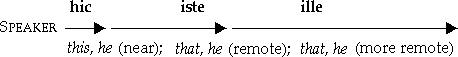
a. In dialogue hic refers to a person or thing near the speaker; iste, to a person or thing near the person addressed; ille, to a person or thing remote from both. These distinctions are illustrated in the model sentences, § 293, which should be carefully studied and imitated.
291. Hic is declined as follows:
| Singular | Plural | |||||
|---|---|---|---|---|---|---|
| MASC. | FEM. | NEUT. | MASC. | FEM. | NEUT. | |
| Nom. | hic | haec | hoc | hī | hae | haec |
| Gen. | huius | huius | huius | hōrum | hārum | hōrum |
| Dat. | huic | huic | huic | hīs | hīs | hīs |
| Acc. | hunc | hanc | hoc | hōs | hās | haec |
| Abl. | hōc | hāc | hōc | hīs | hīs | hīs |
a. Huius is pronounced ho͝o´yo͝os, and huic is pronounced ho͝oic (one syllable).
292. The demonstrative pronouns iste, ista, istud, and ille, illa, illud, except for the nominative and accusative singular neuter forms istud and illud, are declined exactly like ipse, ipsa, ipsum. (See § 481.)
129 293. MODEL SENTENCES
Is this horse (of mine) strong? |
Estne hic equus valīdus? |
That horse (of yours) is strong, but that one (yonder) is weak |
Iste equus est validus, sed ille est īnfīrmus |
Are these (men by me) your friends? |
Suntne hī amīcī tuī? |
Those (men by you) are my friends, but those (men yonder) are enemies |
Istī sunt amīcī meī, sed illī sunt inimīcī |
294. EXERCISES
First learn the special vocabulary, p. 295.
I. A German Chieftain addresses his Followers. Ille fortis Germānōrum dux suōs convocāvit et hōc modō animōs eōrum cōnfirmāvit. “Vōs, quī in hīs fīnibus vīvitis, in hunc locum convocāvī1 quia mēcum dēbētis istōs agrōs et istās domōs ab iniūriīs Rōmānōrum liberāre. Hoc nōbīs nōn difficile erit, quod illī hostēs hās silvās dēnsās, ferās saevās quārum vestīgia vident, montēs altōs timent. Sī fortēs erimus, deī ipsī nōbīs viam salūtis dēmonstrābunt. Ille sōl, istī oculī calamītātēs nostrās vīdērunt.1 Itaque nōmen illīus reī pūblicae Rōmānae nōn sōlum nōbis, sed etiam omnibus hominibus quī lībertātem amant, est invīsum. Ad arma vōs vocō. Exercēte istam prīstinam virtūtem et vincētis.”
II. 1. Does that bird (of yours)2 sing? 2. This bird (of mine)2 sings both3 in summer and in winter and has a beautiful voice. 3. Those birds (yonder)2 in the country don´t sing in winter. 4. Snatch a spear from the hands of that soldier (near you)2 and come home with me. 5. With those very eyes (of yours)2 you will see the tracks of the hateful enemy who burned my dwelling and made an attack on my brother. 6. For (propter) these deeds (rēs) we ought to inflict punishment on him without delay. 7. The enemies of the republic do not always suffer punishment.
130
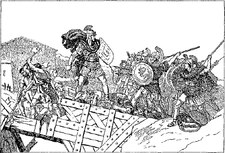
HORATIUS PONTEM DEFENDIT
295. How Horatius held the Bridge (Continued)
Altera urbis pars mūrīs, altera flūmine satis mūnīrī vidēbātur. Sed erat pōns in flūmine quī hostibus iter paene dedit. Tum Horātius Cocles, fortis vir, magnā vōce dīxit, “Rescindite pontem, Rōmānī! Brevī tempore Porsena in urbem cōpiās suās trādūcet.” Iam hostēs in ponte erant, sed Horātius cum duōbus (cf. § 479) comitibus ad extrēmam pontis partem properāvit, et hi sōli aciem hostium sustinuērunt. Tum vērō cīvēs Rōmānī pontem ā tergō rescindere incipiunt, et hostēs frūstrā Horātium superāre temptant.
296. The indefinite pronouns are used to refer to some person or some thing, without indicating which particular one is meant. The pronouns quis and quī, which we have learned in their interrogative and relative uses, may also be indefinite; and nearly all the other indefinite pronouns are compounds of quis or quī and declined almost like them. Review the declension of these words, §§ 221, 227.
131 297. Learn the declension and meaning of the following indefinites:
| Masc. | Fem. | Neut. |
|---|---|---|
| quis | quid, some one, any one (substantive) |
|
| quī | qua or quae | quod, some, any (adjective), § 483 |
| aliquis | aliquid, some one, any one (substantive), § 487 |
|
| aliquī | aliqua | aliquod, some, any (adjective), § 487 |
| quīdam | quaedam | quoddam, quiddam, a certain, a certain one, § 485 |
| quisquam | quicquam or quidquam (no plural), any one (at all) (substantive), § 486 |
|
| quisque | quidque, each one, every one (substantive), § 484 |
|
| quisque | quaeque | quodque, each, every (adjective), § 484 |
Note. The meanings of the neuters, something, etc., are easily inferred from the masculine and feminine.
a. In the masculine and neuter singular of the indefinites, quis-forms and quid-forms are mostly used as substantives, quī-forms and quod-forms as adjectives.
b. The indefinites quis and quī never stand first in a clause, and are rare excepting after sī, nisi, nē, num (as, sī quis, if any one; sī quid, if anything; nisi quis, unless some one). Generally aliquis and aliquī are used instead.
c. The forms qua and aliqua are both feminine nominative singular and neuter nominative plural of the indefinite adjectives quī and aliquī respectively. How do these differ from the corresponding forms of the relative quī?
d. Observe that quīdam (quī + -dam) is declined like quī, except that in the accusative singular and genitive plural m of quī becomes n (cf. § 287. a): quendam, quandam, quōrundam, quārundam; also that the neuter has quiddam (substantive) and quoddam (adjective) in the nominative and accusative singular. Quīdam is the least indefinite of the indefinite pronouns, and implies that you could name the person or thing referred to if you cared to do so.
e. Quisquam and quisque (substantive) are declined like quis.
f. Quisquam, any one (quicquam or quidquam, anything), is always used substantively and chiefly in negative sentences. The corresponding adjective any is ūllus, -a, -um (§ 108).
132 298. EXERCISES
First learn the special vocabulary, p. 295.
I. 1. Aliquis dē ponte in flūmen dēcidit sed sine ūllō perīculō servātus est. 2. Est vērō in vītā cuiusque hominis aliqua bona fortūna. 3. Nē mīlitum quidem1 quisquam in castrīs mānsit. 4. Sī quem meae domī vidēs, iubē eum discēdere. 5. Sī quis pontem tenet, nē tantus quidem exercitus capere urbem potest. 6. Urbs nōn satis mūnīta erat et merīdiē rēx quīdam paene cōpiās suās trāns pontem trādūxerat. 7. Dēnique mīles quīdam armātus in fluctūs dēsiluit et incolumis ad alteram rīpam oculōs vertit. 8. Quisque illī fortī mīlitī aliquid dare dēbet. 9. Tanta vērō virtūs Rōmānus semper placuit. 10. Ōlim Corinthus erat urbs satis magna et paene par Rōmae ipsī; nunc vērō moenia dēcidērunt et pauca vestīgia urbis illīus reperīrī possunt. 11. Quisque lībertātem amat, et aliquibus vērō nōmen rēgis est invīsum.
II. 1. If you see a certain Cornelius at Corinth, send him to me. 2. Almost all the soldiers who fell down into the waves were unharmed. 3. Not even at Pompeii did I see so great a fire. 4. I myself was eager to tell something to some one. 5. Each one was praising his own work. 6. Did you see some one in the country? I did not see any one. 7. Unless some one will remain on the bridge with Horatius, the commonwealth will be in the greatest danger.
299. How Horatius held the Bridge (Concluded)
Mox, ubi parva pars pontis mānsit, Horātius iussit comitēs discēdere et sōlus mīrā cōnstantiā impetum illius tōtius exercitūs sustinēbat. Dēnique magnō fragōre pōns in flūmen dēcīdit. Tum vērō Horātius tergum vertit et armātus in aquās dēsiluit. In eum hostēs multa tēla iēcērunt; incolumis autem per fiuctūs ad alteram rīpam trānāvit. Eī propter tantās rēs gestās populus Rōmānus nōn sōlum alia magna praemia dedit sed etiam statuam Horāti in locō pūblicō posuit.
300. The quality denoted by an adjective may exist in either a higher or a lower degree, and this is expressed by a form of inflection called comparison. The mere presence of the quality is expressed by the positive degree, its presence in a higher or lower degree by the comparative, and in the highest or lowest of all by the superlative. In English the usual way of comparing an adjective is by using the suffix -er for the comparative and -est for the superlative; as, positive high, comparative higher, superlative highest. Less frequently we use the adverbs more and most; as, positive beautiful, comparative more beautiful, superlative most beautiful.
In Latin, as in English, adjectives are compared by adding suffixes or by using adverbs.
301. Adjectives are compared by using suffixes as follows:
| Positive | Comparative | Superlative |
|---|---|---|
clārus, -a, -um (bright) |
clārior, clārīus (brighter) |
clārissimus, -a, -um (brightest) |
brevis, breve (short) |
brevior, brevius (shorter) |
brevissimus, -a, -um (shortest) |
vēlōx (swift) |
vēlōcior, vēlōcius (swifter) |
vēlōcissimus, -a, -um (swiftest) |
a. The comparative is formed from the base of the positive by adding -ior masc. and fem., and -ius neut.; the superlative by adding -issimus, -issima, -issimum.
302. Less frequently adjectives are compared by using the adverbs magis, more; maximē, most; as, idōneus, suitable; magis idōneus, more suitable; maximē idōneus, most suitable.
303. Declension of the Comparative. Adjectives of the comparative degree are declined as follows:
| Singular | Plural | |||
|---|---|---|---|---|
| MASC. AND FEM. | NEUT. | MASC. AND FEM. | NEUT. | |
| Nom.. | clārior | clārīus | clārīōrēs | clāriōra |
| Gen. | clāriōris | clāriōris | clāriōrum | clāriōrum |
| Dat. | clāriōrī | clāriōrī | clāriōribus | clāriōribus |
| Acc. | clāriōrem | clārius | clāriōrēs | clāriōra |
| Abl. | clāriōre | clāriōre | clāriōribus | clāriōribus |
134 a. Observe that the endings are those of the consonant stems of the third declension.
b. Compare longus, long; fortis, brave; recēns (base, recent-), recent; and decline the comparative of each.
304. Adjectives in -er form the comparative regularly, but the superlative is formed by adding -rimus, -a, -um to the nominative masculine of the positive; as,
| Positive | Comparative | Superlative |
|---|---|---|
ācer, ācris, ācre |
ācrior, ācrius | ācerrimus, -a, -um |
pulcher, pulchra, pulchrum |
pulchrior, pulchrius | pulcherrimus, -a, -um |
līber, lībera, līberum |
līberior, līberius | līberrimus, -a, -um |
a. In a similar manner compare miser, aeger, crēber.
305. The comparative is often translated by quite, too, or somewhat, and the superlative by very; as, altior, quite (too, somewhat) high; altissimus, very high.
306. EXERCISES
First learn the special vocabulary, p. 296.
I. 1. Quid explōrātōrēs quaerēbant? Explōrātōrēs tempus opportfūissimum itinerī quaerēbant. 2. Mediā in silvā ignīs quam crēberrimōs fēcimus, quod ferās tam audācis numquam anteā vīderāmus. 3. Antīquīs temporibus Germānī erant fortiōrēs quam Gallī. 4. Caesar erat clārior quam inimīcī1 quī eum necāvērunt. 5. Quisque scūtum ingēns et pīlum longius gerēbat. 6. Apud barbarōs Germānī erant audācissimī et fortissimī. 7. Mēns hominum est celerior quam corpus. 8. Virī aliquārum terrārum sunt miserrimī. 9. Corpora Germānōrum erant ingentiōra quam Rōmānōrum. 10. Ācerrimī Gallōrum prīncipēs sine ūllā morā trāns flūmen quoddam equōs vēlōcissimōs trādūxērunt. 11. Aestāte diēs sunt longiōrēs quam hieme. 12. Imperātor quīdam ab explōrātōribus dē recentī adventū nāvium longārum quaesīvit.
II. 1. Of all birds the eagle is the swiftest. 2. Certain animals are swifter than the swiftest horse. 3. The Roman name was most 135 hateful to the enemies of the commonwealth. 4. The Romans always inflicted the severest2 punishment on faithless allies. 5. I was quite ill, and so I hastened from the city to the country. 6. Marcus had some friends dearer than Cæsar.3 7. Did you not seek a more recent report concerning the battle? 8. Not even after a victory so opportune did he seek the general’s friendship.
N.B. Beginning at this point, the selections for reading will be found near the end of the volume. (See p. 197.)
307. The following six adjectives in -lis form the comparative regularly; but the superlative is formed by adding -limus to the base of the positive. Learn the meanings and comparison.
| Positive | Comparative | Superlative |
|---|---|---|
| facilis, -e, easy | facilior, -ius | facillimus, -a, -um |
| difficilis, -e, hard | difficilior, -ius | difficillimus, -a, -um |
| similis, -e, like | similior, -ius | simillimus, -a, -um |
| dissimilis, -e, unlike | dissimilior, -ius | dissimillimus, -a, -um |
| gracilis, -e, slender | gracilior, -ius | gracillimus, -a, -um |
| humilis, -e, low | humilior, -ius | humillimus, -a, -um |
308. From the knowledge gained in the preceding lesson we should translate the sentence Nothing is brighter than the sun
Nihil est clārius quam sōl
But the Romans, especially in negative sentences, often expressed the comparison in this way,
Nihil est clārius sōle
which, literally translated, is Nothing is brighter away from the sun; that is, starting from the sun as a standard, nothing is brighter. This relation is expressed by the separative ablative sōle. Hence the rule
136 309. Rule. Ablative with Comparatives. The comparative degree, if quam is omitted, is followed by the separative ablative.
310. EXERCISES
First learn the special vocabulary, p. 296.
I. 1. Nēmō mīlitēs alacriōrēs Rōmānīs vīdit. 2. Statim imperātor iussit nūntiōs quam celerrimōs litterās Rōmam portāre. 3. Multa flūmina sunt lēniōra Rhēnō. 4. Apud Rōmanōs quis erat clārior Caesare? 5. Nihil pulchrius urbe Rōmā vīdī. 6. Subitō multitūdo audacissima magnō clamōre proelium ācrius commīsit. 7. Num est equus tuus tardus? Nōn vērō tardus, sed celerior aquilā. 8. Ubi Romae fuī, nēmō erat mihi amicior Sextō. 9. Quaedam mulierēs cibum mīlitibus dare cupīvērunt. 10. Rēx vetuit cīvis ex urbe noctū discēdere. 11. Ille puer est gracilior hāc muliere. 12. Explōrātor duās (two) viās, alteram facilem, alteram difficiliōrem, dēmōnstrāvit.
II. 1. What city have you seen more beautiful than Rome? 2. The Gauls were not more eager than the Germans. 3. The eagle is not slower than the horse. 4. The spirited woman did not fear to make the journey by night. 5. The mind of the multitude was quite gentle and friendly. 6. But the king’s mind was very different. 7. The king was not like (similar to) his noble father. 8. These hills are lower than the huge mountains of our territory.
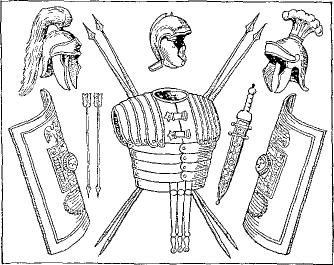
ARMA ROMANA
311. Some adjectives in English have irregular comparison, as good, better, best; many, more, most. So Latin comparison presents some irregularities. Among the adjectives that are compared irregularly are
| Positive | Comparative | Superlative |
|---|---|---|
| bonus, -a, -um, good | melior, melius | optimus, -a, -um |
| magnus, -a, -um, great | maior, maius | maximus, -a, -um |
| malus, -a, -um, bad | peior, peius | pessimus, -a, -um |
| multus, -a, -um, much | ——, plūs | plūrimus, -a, -um |
| multī, -ae, -a, many | plūrēs, plūra | plūrimī, -ae, -a |
| parvus, -a, -um, small | minor, minus | minimus, -a, -um |
312. The following four adjectives have two superlatives. Unusual forms are placed in parentheses.
exterus, -a, -um, outward |
(exterior, -ius, outer) |
extrēmus, -a, -um (extimus, -a, -um) |
outermost, last |
īnferus, -a, -um, low |
īnferior, -ius, lower |
īnfimus, -a, -um īmus, -a, -um |
lowest |
posterus, -a, -um, next |
(posterior, -ius, later) |
postrēmus, -a, -um (postumus, -a, -um) |
last |
superus, -a, -um, above |
superior, -ius, higher |
suprēmus, -a, -um summus, -a, -um |
highest |
313. Plūs, more (plural more, many, several), is declined as follows:
| Singular | Plural | |||
|---|---|---|---|---|
| MASC. AND FEM. | NEUT. | MASC. AND FEM. | NEUT. | |
| Nom. | —— | plūs | plūrēs | plūra |
| Gen. | —— | plūris | plūrium | plūrium |
| Dat. | —— | —— | plūribus | plūribus |
| Acc. | —— | plūs | plūrīs, -ēs | plūra |
| Abl. | —— | plūre | plūribus | plūribus |
a. In the singular plūs is used only as a neuter substantive.
138 314. EXERCISES
First learn the special vocabulary, p. 296.
I. 1. Reliquī hostēs, quī ā dextrō cornū proelium commīserant, dē superiōre locō fūgērunt et sēsē in silvam maximam recēpērunt. 2. In extrēmā parte silvae castra hostium posita erant. 3. Plūrimī captīvī ab equitibus ad Caesarem ductī sunt. 4. Caesar vērō iussit eōs in servitūtem trādī. 5. Posterō diē magna multitūdō mulierum ab Rōmānīs in valle īmā reperta est. 6. Hae mulierēs maximē perterritae adventū Caesaris sēsē occīdere studēbant. 7. Eae quoque plūrīs fābulās dē exercitūs Rōmānī sceleribus audīverant. 8. Fāma illōrum mīlitum optima nōn erat. 9. In barbarōrum aedificiīs maior cōpia frūmentī reperta est. 10. Nēmō crēbrīs proeliīs contendere sine aliquō perīculō potest.
II. 1. The remaining women fled from their dwellings and hid themselves. 2. They were terrified and did not wish to be captured and given over into slavery. 3. Nothing can be worse than slavery. 4. Slavery is worse than death. 5. In the Roman empire a great many were killed because they refused to be slaves. 6. To surrender the fatherland is the worst crime.
315. The following adjectives are irregular in the formation of the superlative and have no positive. Forms rarely used are in parentheses.
| Comparative | Superlative |
|---|---|
| citerior, hither | (citimus, hithermost) |
| interior, inner | (intimus, inmost) |
| prior, former | prīmus, first |
| propior, nearer | proximus, next, nearest |
| ulterior, further | ultimus, furthest |
316. In the sentence Galba is a head taller than Sextus, the phrase a head taller expresses the measure of difference in height between 139 Galba and Sextus. The Latin form of expression would be Galba is taller than Sextus by a head. This is clearly an ablative relation, and the construction is called the ablative of the measure of difference.
| Examples |
Galba est altior capite quam Sextus Galba is a head taller (taller by a head) than Sextus. Illud iter ad Italiam est multō brevius That route to Italy is much shorter (shorter by much) |
317. Rule. Ablative of the Measure of Difference. With comparatives and words implying comparison the ablative is used to denote the measure of difference.
a. Especially common in this construction are the neuter ablatives
|
eō, by this, by that hōc, by this multō, by much nihilō,1 by nothing paulō, by a little |
318. EXERCISES
First learn the special vocabulary, p. 297.
I. 1. Barbarī proelium committere statuērunt eō magis quod Rōmānī īnfīrmī esse vidēbantur. 2. Meum cōnsilium est multō melius quam tuum quia multō facilius est. 3. Haec via est multō lātior quam illa. 4. Barbarī erant nihilō tardiōrēs quam Rōmānī. 5. Tuus equus est paulō celerior quam meus. 6. Iī quī paulō fortiōrēs erant prohibuērunt reliquōs aditum relinquere. 7. Inter illās cīvitātēs Germānia mīlitēs habet optimōs. 8. Propior via quae per hanc vallem dūcit est inter portum et lacum. 9. Servī, quī agrōs citeriōrēs incolēbant, priōrēs dominōs relinquere nōn cupīvērunt, quod eōs amābant. 10. Ultimae Germāniae partēs numquam in fidem Rōmānōrum vēnērunt. 11. Nam trāns Rhēnum aditus erat multō difficilior exercituī Rōmānō.
II. 1. Another way much more difficult (more difficult by much) was left through hither Gaul. 2. In ancient times no state was stronger than the Roman empire. 3. The states of further Gaul did not wish to give hostages to Cæsar. 4. Slavery is no better (better by nothing) than death. 5. The best citizens are not loved by the worst. 6. The active enemy immediately withdrew into the nearest forest, for they were terrified by Cæsar’s recent victories.
140319. Adverbs are generally derived from adjectives, as in English (e.g. adj. sweet, adv. sweetly). Like adjectives, they can be compared; but they have no declension.
320. Adverbs derived from adjectives of the first and second declensions are formed and compared as follows:
| Positive | Comparative | Superlative | |
|---|---|---|---|
| Adj. Adv. |
cārus, dear cārē, dearly |
cārior cārius |
cārissimus cārissimē |
| Adj. Adv. |
pulcher, beautiful pulchrē, beautifully |
pulchrior pulchrius |
pulcherrimus pulcherrimē |
| Adj. Adv. |
līber, free līberē, freely |
līberior līberius |
līberrimus līberrimē |
a. The positive of the adverb is formed by adding -ē to the base of the positive of the adjective. The superlative of the adverb is formed from the superlative of the adjective in the same way.
b. The comparative of any adverb is the neuter accusative singular of the comparative of the adjective.
321. Adverbs derived from adjectives of the third declension are formed like those described above in the comparative and superlative. The positive is usually formed by adding -iter to the base of adjectives of three endings or of two endings, and -ter to the base of those of one ending;1 as,
| Positive | Comparative | Superlative | |
|---|---|---|---|
| Adj. Adv. |
fortis, brave fortiter, bravely |
fortior fortius |
fortissimus fortissimē |
| Adj. Adv. |
audāx, bold audācter, boldly |
audācior audācius |
audācissimus audācissimē |
141 322. Case Forms as Adverbs. As we learned above, the neuter accusative of comparatives is used adverbially. So in the positive or superlative some adjectives, instead of following the usual formation, use the accusative or the ablative singular neuter adverbially; as,
|
Adj. Adv. |
facilis, easy facile (acc.), easily |
prīmus, first prīmum (acc.), first prīmō (abl.), at first |
|
Adj. Adv. |
multus, many multum (acc.), much multō (abl.), by much |
plūrimus, most plūrimum (acc.), most |
323. Learn the following irregular comparisons:
| bene, well | melius, better | optimē, best |
| diū, long (time) | diūtius, longer | diūtissimē, longest |
| magnopere, greatly | magis, more | maximē, most |
| parum, little | minus, less | minimē, least |
| prope, nearly, near | propius, nearer | proximē, nearest |
| saepe, often | saepius, oftener | saepissimē, oftenest |
324. Form adverbs from the following adjectives, using the regular rules, and compare them: laetus, superbus, molestus, amīcus, ācer, brevis, gravis, recēns.
325. Rule. Adverbs. Adverbs modify verbs, adjectives, and other adverbs.
326. EXERCISES
First learn the special vocabulary, p. 297.
I. 1. Nūlla rēs melius gesta est quam proelium illud2 ubi Marius multō minōre exercitū multō maiōrēs cōpiās Germānōrum in fugam dedit. 2. Audācter in Rōmānōrum cohortīs hostēs impetūs fēcērunt 3. Marius autem omnēs hōs fortissimē sustinuit. 4. Barbarī nihilō fortiōrēs erant quam Rōmānī. 5. Prīmō barbarī esse superiōrēs vidēbantur, tum Rōmānī ācrius contendērunt. 6. Dēnique, ubi iam diūtissimē paene aequō proeliō pugnātum est, barbarī fugam petiērunt. 7. Quaedam Germānōrum gentēs, simul atque rūmōrem illīus calamitātis audīvērunt, sēsē in ultimīs regiōnibus fīnium suōrum abdidērunt. 142 8. Rōmānī saepius quam hostēs vīcērunt, quod meliōra arma habēbant. 9. Inter omnīs gentīs Rōmānī plūrimum valēbant. 10. Hae cohortēs simul atque in aequiōrem regiōnem sē recēpērunt, castra sine ūllā difficultāte posuērunt.
II. 1. Some nations are easily overcome by their enemies. 2. Germany is much larger than Gaul. 3. Were not the Romans the most powerful among the tribes of Italy? 4. On account of (his) wounds the soldier dragged his body from the ditch with the greatest difficulty. 5. He was able neither to run nor to fight. 6. Who saved him? A certain horseman boldly undertook the matter. 7. The rumors concerning the soldier’s death were not true.
327. The Latin numeral adjectives may be classified as follows:
1. Cardinal Numerals, answering the question how many? as, ūnus, one; duo, two; etc.
2. Ordinal Numerals, derived in most cases from the cardinals and answering the question in what order? as, prīmus, first; secundus, second; etc.
3. Distributive Numerals, answering the question how many at a time? as, singulī, one at a time.
328. The Cardinal Numerals. The first twenty of the cardinals are as follows:
| 1, ūnus | 6, | sex | 11, ūndecim | 16, sēdecim |
| 2, duo | 7, | septem | 12, duodecim | 17, septendecim |
| 3, trēs | 8, | octō | 13, tredecim | 18, duodēvīgintī |
| 4, quattuor | 9, | novem | 14, quattuordecim | 19, ūndēvīgintī |
| 5, quīnque | 10, | decem | 15, quīndecim | 20, vīgintī |
a. Learn also centum = 100, ducentī = 200, mīlle = 1000.
329. Declension of the Cardinals. Of the cardinals only ūnus, duo, trēs, the hundreds above one hundred, and mīlle used as a noun, are declinable.
143a. ūnus is one of the nine irregular adjectives, and is declined like nūllus (cf. §§ 109, 470). The plural of ūnus is used to agree with a plural noun of a singular meaning, as, ūna castra, one camp; and with other nouns in the sense of only, as, Gallī ūnī, only the Gauls.
b. Learn the declension of duo, two; trēs, three; and mīlle, a thousand. (§ 479.)
c. The hundreds above one hundred are declined like the plural of bonus; as,
|
ducentī, -ae, -a ducentōrum, -ārum, -ōrum etc. etc. etc. |
330. We have already become familiar with sentences like the following:
|
Omnium avium aquila est vēlōcissima Of all birds the eagle is the swiftest Hoc ōrāculum erat omnium clārissimum This oracle was the most famous of all |
In such sentences the genitive denotes the whole, and the word it modifies denotes a part of that whole. Such a genitive, denoting the whole of which a part is taken, is called a partitive genitive.
331. Rule. Partitive Genitive. Words denoting a part are often used with the genitive of the whole, known as the partitive genitive.
a. Words denoting a part are especially pronouns, numerals, and other adjectives. But cardinal numbers excepting mīlle regularly take the ablative with ex or dē instead of the partitive genitive.
b. Mīlle, a thousand, in the singular is usually an indeclinable adjective (as, mīlle mīlitēs, a thousand soldiers), but in the plural it is a declinable noun and takes the partitive genitive (as, decem mīlia mīlitum, ten thousand soldiers).
Examples:
|
Fortissimī hōrum sunt Germānī The bravest of these are the Germans Decem mīlia hostium interfecta sunt Ten thousand (lit. thousands) of the enemy were slain Ūna ex captīvīs erat soror rēgis One of the captives was the king’s sister |
144 332. EXERCISES
First learn the special vocabulary, p. 297.
I. 1. Caesar maximam partem aedificiōrum incendit. 2. Magna pars mūnītiōnis aquā flūminis dēlēta est. 3. Gallī huius regiōnis quīnque mīlia hominum coēgerant. 4. Duo ex meīs frātribus eundem rūmōrem audīvērunt. 5. Quis Rōmānōrum erat clarior Caesare? 6. Quīnque cohortēs ex illā legiōne castra quam fortissimē dēfendēbant. 7. Hic locus aberat aequō spatiō1 ab castrīs Caesaris et castrīs Germānōrum. 8. Caesar simul atque pervēnit, plūs commeātūs ab sociīs postulāvit. 9. Nōnne mercātōrēs magnitūdinem īnsulae cognōverant? Longitūdinem sed nōn lātitūdinem cognōverant. 10. Paucī hostium obtinēbant collem quem explōrātōrēs nostrī vīdērunt.
II. 1. I have two brothers, and one of them lives at Rome. 2. Cæsar stormed that very town with three legions. 3. In one hour he destroyed a great part of the fortification. 4. When the enemy could no longer2 defend the gates, they retreated to a hill which was not far distant.3 5. There three thousand of them bravely resisted the Romans.4
333. Learn the first twenty of the ordinal numerals (§ 478). The ordinals are all declined like bonus.
334. The distributive numerals are declined like the plural of bonus. The first three are
|
singulī, -ae, -a, one each, one by one bīnī, -ae, -a, two each, two by two ternī, -ae, -a, three each, three by three |
335. We have learned that, besides its use as object, the accusative is used to express space relations not covered by the ablative. We have had such expressions as per plūrimōs annōs, for a great many 145 years; per tōtum diem, for a whole day. Here the space relation is one of extent of time. We could also say per decem pedēs, for ten feet, where the space relation is one of extent of space. While this is correct Latin, the usual form is to use the accusative with no preposition, as,
|
Vir tōtum diem cucurrit, the man ran for a whole day Caesar mūrum decem pedēs mōvit, Cæsar moved the wall ten feet |
336. Rule. Accusative of Extent. Duration of time and extent of space are expressed by the accusative.
a. This accusative answers the questions how long? how far?
b. Distinguish carefully between the accusative of time how long and the ablative of time when, or within which.
Select the accusatives of time and space and the ablatives of time in the following:
When did the general arrive? He arrived at two o’clock. How long had he been marching? For four days. How far did he march? He marched sixty-five miles. Where has he pitched his camp? Three miles from the river, and he will remain there several days. The wall around the camp is ten feet high. When did the war begin? In the first year after the king’s death.
337. EXERCISES
First learn the special vocabulary, p. 298.
I. Cæsar in Gaul. Caesar bellum in Gallia septem annōs gessit. Prīmō annō Helvētiōs vīcit, et eōdem annō multae Germanōrum gentēs eī sēsē dēdidērunt. Multōs iam annōs Germānī Gallōs vexabant1 et ducēs Germānī cōpiās suās trāns Rhēnum saepe trādūcēbant.1 Nōn singulī veniēbant, sed multa milia hominum in Galliam contendēbant. Quā dē causā prīncipēs Galliae concilium convocāvērunt atque statuērunt legates ad Caesarem mittere. Caesar, simul atque hunc rūmōrem audīvit, cōpiās suās sine morā coēgit. Primā lūce fortiter cum Germanīs proelium commīsit. Tōtum diem ācriter pugnātum est. Caesar ipse ā dextrō cornū acicm dūxit. Magna pars exercitūs Germānī cecidit. Post magnam caedem paucī multa milia passuum ad flūmen fūgērunt.
146 II. 1. Cæsar pitched camp two miles from the river. 2. He fortified the camp with a ditch fifteen feet wide and a rampart nine feet high. 3. The camp of the enemy was a great way off (was distant by a great space). 4. On the next day he hastened ten miles in three hours. 5. Suddenly the enemy with all their forces made an attack upon (in with acc.) the rear. 6. For two hours the Romans were hard pressed by the barbarians. 7. In three hours the barbarians were fleeing.
338. A number of verbs are passive in form but active in meaning; as, hortor, I encourage; vereor, I fear. Such verbs are called deponent because they have laid aside (dē-pōnere, to lay aside) the active forms.
a. Besides having all the forms of the passive, deponent verbs have also the future active infinitive and a few other active forms which will be noted later. (Sec§§ 375, 403.b.)
339. The principal parts of deponents are of course passive in form, as,
| Conj. I | hortor, hortārī, hortātus sum, encourage | |
| Conj. II | vereor, verērī, veritus sum, fear | |
| Conj. III | (a) | sequor, sequī, secūtus sum, follow |
| (b) | patior, patī, passus sum, suffer, allow | |
| Conj. IV | partior, partīrī, partītus sum, share, divide |
Learn the synopses of these verbs. (See § 493.) Patior is conjugated like the passive of capiō (§ 492).
340. PREPOSITIONS WITH THE ACCUSATIVE
The prepositions with the accusative that occur most frequently are
|
ante, before apud, among circum, around contrā, against, contrary to extrā, outside of in, into, in, against, upon inter, between, among |
intrā, within ob, on account of (quam ob rem, wherefore, therefore) per, through, by means of post, after, behind propter, on account of, because of trāns, across, over |
a. Most of these you have had before. Review the old ones and learn the new ones. Review the list of prepositions governing the ablative, § 209.
147 341. EXERCISES
First learn the special vocabulary, p. 298.
I. 1. Trēs ex lēgātīs, contrā Caesaris opīniōnem, iter facere per hostium fīnīs verēbantur. 2. Quis eōs hortātus est? Imperātor eōs hortātus est et iīs persuādēre cōnātus est, sed nōn potuit. 3. Quid lēgātōs perterruit? Aut timor hostium, quī undique premēbant, aut longitūdō viae eōs perterruit. 4. Tamen omnēs ferē Caesarem multō magis quam hostīs veritī sunt. 5. Fortissimae gentēs Galliae ex Germānīs oriēbantur. 6. Quam ob rem tam fortēs erant? Quia nec vīnum nec alia quae virtūtem dēlent ad sē portārī patiēbantur. 7. Caesar ex mercātōribus dē īnsulā Britanniā quaesīvit, sed nihil cognōscere potuit. 8. Itaque ipse statuit hanc terram petere, et mediā ferē aestāte cum multīs nāvibus longīs profectus est. 9. Magnā celeritāte iter confēcit et in opportūnissimō locō ēgressus est. 10. Barbarī summīs vīribus eum ab īnsulā prohibēre cōnātī sunt. 11. Ille autem barbarōs multa mīlia passuum īnsecūtus est; tamen sine equitātū eōs cōnsequī nōn potuit.
II. 1. Contrary to our expectation, the enemy fled and the cavalry followed close after them. 2. From all parts of the multitude the shouts arose of those who were being wounded. 3. Cæsar did not allow the cavalry to pursue too far.1 4. The cavalry set out at the first hour and was returning2 to camp at the fourth hour. 5. Around the Roman camp was a rampart twelve feet high. 6. Cæsar will delay three days because of the grain supply. 7. Nearly all the lieutenants feared the enemy and attempted to delay the march.
The preceding part of this book has been concerned chiefly with forms and vocabulary. There remain still to be learned the forms of the Subjunctive Mood, the Participles, and the Gerund of the regular verb, and the conjugation of the commoner irregular verbs. These will be taken up in connection with the study of constructions, which will be the chief subject of our future work. The special vocabularies of the preceding lessons contain, exclusive of proper names, about six hundred words. As these are among the commonest words in the language, they must be mastered. They properly form the basis of the study of words, and will be reviewed and used with but few additions in the remaining lessons.
For practice in reading and to illustrate the constructions presented, a continued story has been prepared and may be begun at this point (see p. 204). It has been divided into chapters of convenient length to accompany progress through the lessons, but may be read with equal profit after the lessons are finished. The story gives an account of the life and adventures of Publius Cornelius Lentulus, a Roman boy, who fought in Cæsar’s campaigns and shared in his triumph. The colored plates illustrating the story are faithful representations of ancient life and are deserving of careful study.
149342. In addition to the indicative, imperative, and infinitive moods, which you have learned, Latin has a fourth mood called the subjunctive. The tenses of the subjunctive are
|
Present Imperfect Perfect Pluperfect |
Active and Passive |
343. The tenses of the subjunctive have the same time values as the corresponding tenses of the indicative, and, in addition, each of them may refer to future time. No meanings of the tenses will be given in the paradigms, as the translation varies with the construction used.
344. The present subjunctive is inflected as follows:
a. The present subjunctive is formed from the present stem.
b. The mood sign of the present subjunctive is -ē- in the first conjugation and -ā- in the others. It is shortened in the usual places (cf. § 12), and takes the place of the final vowel of the stem in the first and third conjugations, but not in the second and fourth.
c. The personal endings are the same as in the indicative.
d. In a similar way inflect the present subjunctive of cūrō, iubeō, sūmō, iaciō, mūniō.
345. The present subjunctive of the irregular verb sum is inflected as follows:
| Sing. |
1. sim 2. sīs 3. sit |
Plur. |
1. sīmus 2. sītis 3. sint |
346. The Indicative and Subjunctive Compared. 1. The two most important of the finite moods are the indicative and the subjunctive. The indicative deals with facts either real or assumed. If, then, we wish to assert something as a fact or to inquire after a fact, we use the indicative.
2. On the other hand, if we wish to express a desire or wish, a purpose, a possibility, an expectation, or some such notion, we must use the subjunctive. The following sentences illustrate the difference between the indicative and the subjunctive ideas.
Note. From the sentences above we observe that the subjunctive may be used in either independent or dependent clauses; but it is far more common in the latter than in the former.
347. EXERCISE
Which verbs in the following paragraph would be in the indicative and which in the subjunctive in a Latin translation?
There have been times in the history of our country when you might be proud of being an American citizen. Do you remember the day when Dewey sailed into Manila Bay to capture or destroy the enemy’s fleet? You might have seen the admiral standing on the bridge calmly giving his orders. He did not even wait until the mines should be removed from the harbor’s mouth, but sailed in at once. Let us not despair of our country while such valor exists, and may the future add new glories to the past.
348. Observe the sentence
Caesar hominēs mittit quī pontem reperiant,
Cæsar sends men to find the bridge
The verb reperiant in the dependent clause is in the subjunctive because it tells us what Cæsar wants the men to do; in other words, it expresses his will and the purpose in his mind. Such a use of the subjunctive is called the subjunctive of purpose.
152 349. Rule. Subjunctive of Purpose. The subjunctive is used in a dependent clause to express the purpose of the action in the principal clause.
350. A clause of purpose is introduced as follows:
I. If something is wanted, by
|
quī, the relative pronoun (as above) ut, conj., in order that, that quō (abl. of quī, by which), in order that, that, used when the purpose clause contains a comparative. The ablative quō expresses the measure of difference. (Cf. § 317.) |
II. If something is not wanted, by
| nē, conj., in order that not, that not, lest |
351. EXAMPLES
| 1. |
Caesar cōpiās cōgit quibus hostīs īnsequātur Cæsar collects troops with which to pursue the foe |
| 2. |
Pācem petunt ut domum revertantur They ask for peace in order that they may return home |
| 3. |
Pontem faciunt quō facilius oppidum capiant They build a bridge that they may take the town more easily (lit. by which the more easily) |
| 4. |
Fugiunt nē vulnerentur They flee that they may not (or lest they) be wounded |
352. Expression of Purpose in English. In English, purpose clauses are sometimes introduced by that or in order that, but much more frequently purpose is expressed in English by the infinitive, as We eat to live, She stoops to conquer. In Latin prose, on the other hand, purpose is never expressed by the infinitive. Be on your guard and do not let the English idiom betray you into this error.
353. EXERCISES
I.
1. Veniunt ut |
dūcant, mittant, videant, audiant, dūcantur, mittantur, videantur, audiantur. |
2. Fugimus nē |
capiāmur, trādāmur, videāmus, necēmur, rapiāmur, resistāmus. |
dicant, audiant, veniant, nārrent, audiantur, in conciliō sedeant. |
|
4. Castra mūniunt quō facilius |
sēsē dēfendant, impetum sustineant, hostīs vincant, salūtem petant. |
II. 1. The Helvetii send ambassadors to seek1 peace. 2. They are setting out at daybreak in order that they may make a longer march before night. 3. They will hide the women in the forest (acc. with in) that they may not be captured. 4. The Gauls wage many wars to free1 their fatherland from slavery. 5. They will resist the Romans2 bravely lest they be destroyed.
354. The imperfect subjunctive may be formed by adding the personal endings to the present active infinitive.
| Conj. I | Conj. II | Conj. III | Conj. IV | |
|---|---|---|---|---|
| ACTIVE | ||||
| 1. amā´rem | monē´rem | re´gerem | ca´perem | audī´rem |
| 2. amā´rēs | monē´rēs | re´gerēs | ca´perēs | audī´rēs |
| 3. amā´ret | monē´ret | re´geret | ca´peret | audī´ret |
| 1. amārē´mus | monērē´mus | regerē´mus | caperē´mus | audīrē´mus |
| 2. amārē´tis | monērē´tis | regerē´tis | caperē´tis | audīrē´tis |
| 3. amā´rent | monē´rent | re´gerent | ca´perent | audī´rent |
| PASSIVE | ||||
| 1. amā´rer | monē´rer | re´gerer | ca´perer | audī´rer |
| 2. amārē´ris(-re) | monērē´ris(-re) | regerē´ris(-re) | caperē´ris(-re) | audīrē´ris(-re) |
| 3. amārē´tur | monērē´tur | regerē´tur | caperē´tur | audīrē´tur |
| 1. amārē´mur | monērē´mur | regerē´mur | caperē´mur | audīrē´mur |
| 2. amārē´minī | monērē´minī | regerē´minī | caperē´minī | audīre´minī |
| 3. amāren´tur | monēren´tur | regeren´tur | caperen´tur | audīren´tur |
a. In a similar way inflect the imperfect subjunctive, active and passive, of cūrō, iubeō, sūmō, iaciō, mūniō.
154 355. The imperfect subjunctive of the irregular verb sum is inflected as follows:
| Sing. | 1. es´sem | Plur. | 1. essē´mus |
| 2. es´sēs | 2. essē´tis | ||
| 3. es´set | 3. es´sent |
356. The three great distinctions of time are present, past, and future. All tenses referring to present or future time are called primary tenses, and those referring to past time are called secondary tenses. Now it is a very common law of language that in a complex sentence the tense in the dependent clause should be of the same kind as the tense in the principal clause. In the sentence He says that he is coming, the principal verb, says, is present, that is, is in a primary tense; and is coming, in the dependent clause, is naturally also primary. If I change he says to he said,—in other words, if I make the principal verb secondary in character,—I feel it natural to change the verb in the dependent clause also, and I say, He said that he was coming. This following of a tense by another of the same kind is called tense sequence, from sequī, “to follow.”
In Latin the law of tense sequence is obeyed with considerable regularity, especially when an indicative in the principal clause is followed by a subjunctive in the dependent clause. Then a primary tense of the indicative is followed by a primary tense of the subjunctive, and a secondary tense of the indicative is followed by a secondary tense of the subjunctive. Learn the following table:
357. Table for Sequence of Tenses
|
Principal Verb in the Indicative |
Dependent Verbs in the Subjunctive | ||
| Incomplete or Continuing Action |
Completed Action | ||
|
P r i m a r y |
Present Future Future perfect |
Present | Perfect |
|
S e c o n d a r y |
Imperfect Perfect Pluperfect |
Imperfect | Pluperfect |
155 358. Rule. Sequence of Tenses. Primary tenses are followed by primary tenses and secondary by secondary.
359. EXAMPLES
I. Primary tenses in principal and dependent clauses:
|
Mittit Mittet Mīserit |
hominēs ut agrōs vāstent | ||||
| He |
sends will send will have sent |
men |
that they may in order to to |
lay waste the fields | |
II. Secondary tenses in principal and dependent clauses:
|
Mittēbat Mīsit Mīserat |
hominēs ut agrōs vāstārent | ||||
| He |
was sending sent or has sent had sent |
men |
that they might in order to to |
lay waste the fields | |
360. EXERCISES
I.
|
1. Vēnerant ut |
dūcerent, mitterent, vidērent, audīrent, dūcerentur, mitterentur, vidērentur, audirentur |
|
2. Fugiēbat nē |
caperētur, trāderētur, vidērētur, necārētur, raperētur, resiteret. |
|
3. Misit nūntiōs quī |
dīcerent, audīrent, venīrent, nārrārent, audīrentur, in conciliō sedērent. |
|
4. Castra mūnīvērunt quō facilius |
sēsē dēfenderent, impetum sustinērent, hostīs vincerent, salūtem peterent. |
II. 1. Cæsar encouraged the soldiers in order that they might fight more bravely. 2. The Helvetii left their homes to wage war. 3. The scouts set out at once lest they should be captured by the Germans. 4. Cæsar inflicted punishment on them in order that the others might be more terrified. 5. He sent messengers to Rome to announce the victory.
156361. The perfect and the pluperfect subjunctive active are inflected as follows:
| Conj. I | Conj. II | Conj. III | Conj. IV | |
|---|---|---|---|---|
| Perfect Subjunctive Active | ||||
| SINGULAR | ||||
| 1. amā´verim | monu´erim | rē´xerim | cē´perim | audī´verim |
| 2. amā´veris | monu´eris | rē´xeris | cē´peris | audī´veris |
| 3. amā´verit | monu´erit | rē´xerit | cē´perit | audī´verit |
| PLURAL | ||||
| 1. amāve´rimus | monue´rimus | rēxe´rimus | cēpe´rimus | audīve´rimus |
| 2. amāve´ritis | monue´ritis | rēxe´ritis | cēpe´ritis | audīve´ritis |
| 3. amā´verint | monu´erint | rē´xerint | cē´perint | audī´verint |
| Pluperfect Subjunctive Active | ||||
| SINGULAR | ||||
| 1. amāvis´sem | monuis´sem | rēxis´sem | cēpis´sem | audīvis´sem |
| 2. amāvis´sēs | monuis´sēs | rēxis´sēs | cēpis´sēs | audīvis´sēm |
| 3. amāvis´set | monuis´set | rēxis´set | cēpis´set | audīvis´set |
| PLURAL | ||||
| 1. amāvissē´mus | monuissē´mus | rēxissē´mus | cēpissē´mus | audīvissē´mus |
| 2. amāvissē´tis | monuissē´tis | rēxissē´tis | cēpissē´tis | audīvissē´tis |
| 3. amāvis´sent | monuis´sent | rēxis´sent | cēpis´sent | audīvis´sent |
a. Observe that these two tenses, like the corresponding ones in the indicative, are formed from the perfect stem.
b. Observe that the perfect subjunctive active is like the future perfect indicative active, excepting that the first person singular ends in -m and not in -ō.
c. Observe that the pluperfect subjunctive active may be formed by adding -issem, -issēs, etc. to the perfect stem.
d. In a similar way inflect the perfect and pluperfect subjunctive active of cūrō, iubeō, sūmō, iaciō, mūniō.
157362. The passive of the perfect subjunctive is formed by combining the perfect passive participle with sim, the present subjunctive of sum.
| Conj. I | Conj. II | Conj. III | Conj. IV | |
|---|---|---|---|---|
| Perfect Subjunctive Passive | ||||
| SINGULAR | ||||
| 1. amā´tus sim | mo´nitus sim | rēc´tus sim | cap´tus sim | audī´tus sim |
| 2. amā´tus sīs | mo´nitus sīs | rēc´tus sīs | cap´tus sīs | audī´tus sīs |
| 3. amā´tus sit | mo´nitus sit | rēc´tus sit | cap´tus sit | audī´tus sit |
| PLURAL | ||||
| 1. amā´tī sīmus | mo´nitī sīmus | rēc´tī sīmus | cap´tī sīmus | audī´tī sīmus |
| 2. amā´tī sītis | mo´nitī sītis | rēc´tī sītis | cap´tī sītis | audī´tī sītis |
| 3. amā´tī sint | mo´nitī sint | rēc´tī sint | cap´tī sint | audī´tī sint |
363. The passive of the pluperfect subjunctive is formed by combining the perfect passive participle with essem, the imperfect subjunctive of sum.
| Conj. I | Conj. II | Conj. III | Conj. IV | |
|---|---|---|---|---|
| Pluperfect Subjunctive Passive | ||||
| SINGULAR | ||||
| 1. amātus essem | monitus essem | rēctus essem | captus essem | audītus essem |
| 2. amātus essēs | monitus essēs | rēctus essēs | captus essēs | audītus essēs |
| 3. amātus esset | monitus esset | rēctus esset | captus esset | audītus esset |
| PLURAL | ||||
| 1. amātī essēmus | monitī essēmus | rēctī essēmus | captī essēmus | audītī essēmus |
| 2. amātī essētis | monitī essētis | rēctī essētis | captī essētis | audītī essētis |
| 3. amātī essent | monitī essent | rēctī essent | captī essent | audītī essent |
a. In a similar way inflect the perfect and pluperfect subjunctive passive of cūrō, iubeō, sūmō, iaciō, mūniō.
364. The perfect and pluperfect subjunctive of the irregular verb sum are inflected as follows:
| Perfect | Pluperfect | ||
|---|---|---|---|
| fu´erim | fue´rimus | fuis´sem | fuissē´mus |
| fu´eris | fue´ritis | fuis´sēs | fuissē´tis |
| fu´erit | fu´erint | fuis´set | fuis´sent |
365. A substantive clause is a clause used like a noun, as,
|
That the men are afraid is clear enough (clause as subject) He ordered them to call on him (clause as object) |
We have already had many instances of infinitive clauses used in this way (cf. § 213), and have noted the similarity between Latin and English usage in this respect. But the Latin often uses the subjunctive in substantive clauses, and this marks an important difference between the two languages.
366. Rule. Substantive Clauses of Purpose. A substantive clause of purpose with the subjunctive is used as the object of verbs of commanding, urging, asking, persuading, or advising, where in English we should usually have the infinitive.
| 1. | The general ordered the soldiers to run |
Imperātor mīlitibus imperāvit ut currerent |
| 2. | He urged them to resist bravely |
Hortātus est ut fortiter resisterent |
| 3. | He asked them to give the children food |
Petīvit ut līberīs cibum darent |
| 4. | He will persuade us not to set out |
Nōbīs persuādēbit nē proficīscāmur |
| 5. | He advises us to remain at home |
Monet ut domī maneāmus |
a. The object clauses following these verbs all express the purpose or will of the principal subject that something be done or not done. (Cf. § 348.)
367. The following verbs are used with object clauses of purpose. Learn the list and the principal parts of the new ones.
|
hortor, urge imperō, order (with the dative of the person ordered and a subjunctive clause of the thing ordered done) moneō, advise |
petō, quaerō, rogō, ask, seek persuādeō, persuade (with the same construction as imperō) postulō, demand, require suādeō, advise (cf. persuādeō) |
N.B. Remember that iubeō, order, takes the infinitive as in English. (Cf. § 213. 1.) Compare the sentences
|
Iubeō eum venīre, I order him to come Imperō eī ut veniat, I give orders to him that he is to come |
159 We ordinarily translate both of these sentences like the first, but the difference in meaning between iubeō and imperō in the Latin requires the infinitive in the one case and the subjunctive in the other.
368. EXERCISES
I. 1. Petit atque hortātur ut ipse dīcat. 2. Caesar Helvētiīs imperrāvit nē per prōvinciam iter facerent. 3. Caesar nōn iussit Helvētiōs per prōvinciam iter facere. 4. Ille cīvibus persuāsit ut dē fīnibus suīs discēderent. 5. Caesar prīncipēs monēbit nē proelium committant. 6. Postulāvit nē cum Helvētiīs aut cum eōrum sociīs bellum gererent. 7. Ab iīs quaesīvī nē proficīscerentur. 8. Iīs persuādēre nōn potuī ut domī manērent.
II. 1. Who ordered Cæsar to make the march? (Write this sentence both with imperō and with iubeō.) 2. The faithless scouts persuaded him to set out at daybreak. 3. They will ask him not to inflict punishment. 4. He demanded that they come to the camp. 5. He advised them to tell everything (omnia).
Note. Do not forget that the English infinitive expressing purpose must be rendered by a Latin subjunctive. Review § 352.
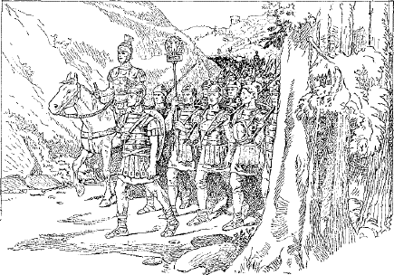
LEGIO ITER FACIT
369. Learn the subjunctive of possum (§ 495), and note especially the position of the accent.
370. Subjunctive after Verbs of Fearing. We have learned that what we want done or not done is expressed in Latin by a subjunctive clause of purpose. In this class belong also clauses after verbs of fearing, for we fear either that something will happen or that it will not, and we either want it to happen or we do not. If we want a thing to happen and fear that it will not, the purpose clause is introduced by ut. If we do not want it to happen and fear that it will, nē is used. Owing to a difference between the English and Latin idiom we translate ut after a verb of fearing by that not, and nē by that or lest.
371. EXAMPLES
|
timeō timēbō timuerō |
ut |
veniat vēnerit |
I fear, shall fear, shall have feared, that he will not come, has not come
|
timēbam timuī timueram |
ut |
venīret vēnisset |
I was fearing, feared, had feared, that he would not come, had not come
The same examples with nē instead of ut would be translated I fear that or lest he will come, has come, etc.
372. Rule. Subjunctive after Verbs of Fearing. Verbs of fearing are followed by a substantive clause of purpose introduced by ut (that not) or nē (that or lest).
161 373. EXERCISES
I. 1. Caesar verēbātur ut supplicium captīvōrum Gallīs placēret. 2. Rōmānī ipsī magnopere verēbantur nē Helvētiī iter per prōvinciam facerent. 3. Timēbant ut satis reī frūmentāriae mittī posset. 4. Vereor ut hostium impetum sustinēre possim. 5. Timuit nē impedīmenta ab hostibus capta essent. 6. Caesar numquam timuit nē legiōnēs vincerentur. 7. Legiōnēs pugnāre nōn timuērunt.1
II. 1. We fear that they are not coming. 2. We fear lest they are coming. 3. We feared that they had come. 4. We feared that they had not come. 5. They feared greatly that the camp could not be defended. 6. Almost all feared1 to leave the camp.
374. The Latin verb has the following Participles:1
| Conj. I | Conj. II | Conj. III | Conj. IV | ||
|---|---|---|---|---|---|
| ACTIVE | |||||
| Present | amāns loving |
monēns advising |
regēns ruling |
capiēns taking |
audiēns hearing |
| Future | amātūrus about to love |
monitūrus about to advise |
rēctūrus about to rule |
captūrus about to take |
audītūrus about to hear |
| PASSIVE | |||||
| Perfect | amātus loved, having been loved |
monitus advised, having been advised |
rēctus ruled, having been ruled |
captus taken, having been taken |
audītus heard, having been heard |
| Future2 | amandus to be loved |
monendus to be advised |
regendus to be ruled |
capiendus to be taken |
audiendus to be heard |
162 a. The present active and future passive participles are formed from the present stem, and the future active and perfect passive participles are formed from the participial stem.
b. The present active participle is formed by adding -ns to the present stem. In -iō verbs of the third conjugation, and in the fourth conjugation, the stem is modified by the addition of -ē-, as capi-ē-ns, audi-ē-ns. It is declined like an adjective of one ending of the third declension. (Cf. § 256.)
| amāns, loving | ||||
| Base amant- | Stem amanti- | |||
| Singular | Plural | |||
|---|---|---|---|---|
| MASC. AND FEM. | NEUT. | MASC. AND FEM. | NEUT. | |
| Nom. | amāns | amāns | amantēs | amantia |
| Gen. | amantis | amantis | amantium | amantium |
| Dat. | amantī | amantī | amantibus | amantibus |
| Acc. | amantem | amāns | amantīs or -ēs | amantia |
| Abl. | amantī or -e | amantī or -e | amantibus | amantibus |
(1) When used as an adjective the ablative singular ends in -ī; when used as a participle or as a substantive, in -e.
(2) In a similar way decline monēns, regēns, capiēns, audiēns.
c. The future active participle is formed by adding -ūrus to the base of the participial stem. We have already met this form combined with esse to produce the future active infinitive. (Cf. § 206.)
d. For the perfect passive participle see § 201. The future passive participle or gerundive is formed by adding -ndus to the present stem.
e. All participles in -us are declined like bonus.
f. Participles agree with nouns or pronouns like adjectives.
g. Give all the participles of the following verbs: cūrō, iubeō, sūmō, iaciō, mūniō.
375. Participles of Deponent Verbs. Deponent verbs have the participles of the active voice as well as of the passive; consequently every deponent verb has four participles, as,
| Pres. Act. | hortāns, urging |
| Fut. Act. | hortātūrus, about to urge |
| Perf. Pass. (in form) | hortātus, having urged |
| Fut. Pass. (Gerundive) | hortandus, to be urged |
a. Observe that the perfect participle of deponent verbs is passive in form but active in meaning. No other verbs have a perfect active participle. On the other hand, the future passive participle of deponent verbs is passive in meaning as in other verbs.
b. Give the participles of cōnor, vereor, sequor, patior, partior.
376. Tenses of the Participle. The tenses express time as follows:
1. The present active participle corresponds to the English present active participle in -ing, but can be used only of an action occurring at the same time as the action of the main verb; as, mīlitēs īnsequentēs cēpērunt multōs, the soldiers, while pursuing, captured many. Here the pursuing and the capturing are going on together.
2. The perfect participle (excepting of deponents) is regularly passive and corresponds to the English past participle with or without the auxiliary having been; as, audītus, heard or having been heard.
3. The future active participle, translated about to, etc., denotes time after the action of the main verb.
377. Review §§ 203, 204, and, note the following model sentences:
1. Mīlitēs currentēs erant dēfessī, the soldiers who were running (lit. running) were weary.
2. Caesar profectūrus Rōmam nōn exspectāvit, Cæsar, when about to set out (lit. about to set out) for Rome, did not wait.
3. Oppidum captum vīdimus, we saw the town which had been captured (lit. captured town).
4. Imperātor trīduum morātus profectus est, the general, since (when, or after) he had delayed (lit. the general, having delayed) three days, set out.
5. Mīlitēs vīctī terga nōn vertērunt, the soldiers, though they were conquered (lit. the soldiers conquered), did not retreat.
In each of these sentences the literal translation of the participle is given in parentheses. We note, however, that its proper translation usually requires a clause beginning with some conjunction (when, since, after, though, etc.), or a relative clause. Consider, in each case, what translation will best bring out the thought, and do not, as a rule, translate the participle literally.
164 378. EXERCISES
I. 1. Puer timēns nē capiātur fugit. 2. Aquila īrā commōta avīs reliquās interficere cōnāta erat. 3. Mīlitēs ab hostibus pressī tēla iacere nōn potuērunt. 4. Caesar decimam legiōnem laudātūrus ad prīmum agmen prōgressus est. 5. Imperātor hortātus equitēs ut fortiter pugnārent signum proeliō dedit. 6. Mīlitēs hostīs octō milia passuum īnsecūtī multīs cum captīvīs ad castra revertērunt. 7. Sōl oriēns multōs interfectōs vīdit. 8. Rōmānī cōnsilium audāx suspicātī barbaris sēsē nōn commīsērunt. 9. Nāvis ē portū ēgressa nūllō in perīculō erat.
II.3 1. The army was in very great danger while marching through the enemy’s country. 2. Frightened by the length of the way, they longed for home. 3. When the scouts were about to set out, they heard the shouts of victory. 4. When we had delayed many days, we set fire to the buildings and departed. 5. While living at Rome I heard orators much better than these. 6. The soldiers who are fighting across the river are no braver than we.
379. Learn the principal parts and conjugation of volō, wish; nōlō (ne + volō), be unwilling; mālō (magis + volō), be more willing, prefer (§ 497). Note the irregularities in the present indicative, subjunctive, and infinitive, and in the imperfect subjunctive. (Cf. § 354.)
a. These verbs are usually followed by the infinitive with or without a subject accusative; as, volunt venīre, they wish to come; volunt amīcōs venīre, they wish their friends to come. The English usage is the same.1
380. Observe the following sentences:
1. Magistrō laudante omnēs puerī dīligenter labōrant, with the teacher praising, or since the teacher praises, or the teacher praising, all the boys labor diligently.
165 2. Caesare dūcente nēmō prōgredī timet, with Cæsar leading, or when Cæsar leads, or if Cæsar leads, or Cæsar leading, no one fears to advance.
3. His rēbus cognitīs mīlitēs fūgērunt, when this was known, or since this was known, or these things having been learned, the soldiers fled.
4. Proeliō commissō multī vulnerātī sunt, after the battle had begun, or when the battle had begun, or the battle having been joined, many were wounded.
a. One of the fundamental ablative relations is expressed in English by the preposition with (cf. § 50). In each of the sentences above we have a noun and a participle in agreement in the ablative, and the translation shows that in each instance the ablative expresses attendant circumstance. For example, in the first sentence the circumstance attending or accompanying the diligent labor of the boys is the praise of the teacher. This is clearly a with relation, and the ablative is the case to use.
b. We observe, further, that the ablative and its participle are absolutely independent grammatically of the rest of the sentence. If we were to express the thought in English in a similar way, we should use the nominative independent or absolute. In Latin the construction is called the Ablative Absolute, or the Ablative with a Participle. This form of expression is exceedingly common in Latin, but rather rare in English, so we must not, as a rule, employ the English absolute construction to translate the ablative abolute. The attendant circumstance may be one of time (when or after), or one of cause (since), or one of concession (though), or one of condition (if). In each case try to discover the precise relation, and tranlate the ablative and its participle by a clause which will best express the thought.
381. Rule. Ablative Absolute. The ablative of a noun or pronoun with a present or perfect participle in agreement is used to express attendant circumstance.
Note 1. The verb sum has no present participle. In consequence we often find two nouns or a noun and an adjective in the ablative absolute with no participle expressed; as, tē duce, you (being) leader, with you as leader; patre īnfirmō, my father (being) weak.
Note 2. Be very careful not to put in the ablative absolute a noun and participle that form the subject or object of a sentence. Compare
|
a. The Gauls, having been conquered by Cæsar, returned home b. The Gauls having been conquered by Cæsar, the army returned home |
In a the subject is The Gauls having been conquered by Cæsar, and we translate,
Gallī ā Caesare victi domum revertērunt
166 In b the subject is the army. The Gauls having been conquered by Cæsar is nominative absolute in English, which requires the ablative absolute in Latin, and we translate,
Gallīs ā Caesare victīs exercitus domum revertit
Note 3. The fact that only deponent verbs have a perfect active participle (cf. § 375. a) often compels a change of voice when translating from one language to the other. For example, we can translate Cæsar having encouraged the legions just as it stands, because hortor is a deponent verb. But if we wish to say Cæsar having conquered the Gauls, we have to change the voice of the participle to the passive because vincō is not deponent, and say, the Gauls having been conquered by Cæsar (see translation above).
382. EXERCISES
I. 1. Māvīs, nōn vīs, vultis, nōlumus. 2. Ut nōlit, ut vellēmus, ut mālit. 3. Nōlī, velle, nōluisse, mālle. 4. Vult, māvultis, ut nōllet, nōlīte. 5. Sōle oriente, avēs cantāre incēpērunt. 6. Clāmōribus audītīs, barbarī prōgredī recūsābant. 7. Caesare legiōnēs hortātō, mīlitēs paulō fortius pugnāvērunt. 8. Hīs rēbus cognitīs, Helvētiī fīnitimīs persuāsērunt ut sēcum iter facerent. 9. Labōribus cōnfectīs, mīlitēs ā Caesare quaerēbant ut sibi praemia daret. 10. Conciliō convocātō, prīncipēs ita respondērunt. 11. Dux plūrīs diēs in Helvētiōrum fīnibus morāns multōs vīcōs incendit. 12. Magnitūdine Germānōrum cognitā, quīdam ex Rōmānis timēbant. 13. Mercātōribus rogātīs, Caesar nihilō plūs reperīre potuit.
II. 1. He was unwilling, lest they prefer, they have wished. 2. You prefer, that they might be unwilling, they wish. 3. We wish, they had preferred, that he may prefer. 4. Cæsar, when he heard the rumor (the rumor having been heard), commanded (imperāre) the legions to advance more quickly. 5. Since Cæsar was leader, the men were willing to make the journey. 6. A few, terrified2 by the reports which they had heard, preferred to remain at home. 7. After these had been left behind, the rest hastened as quickly as possible. 8. After Cæsar had undertaken the business (Cæsar, the business having been undertaken), he was unwilling to delay longer.3
383. The verb fīō, be made, happen, serves as the passive of faciō, make, in the present system. The rest of the verb is formed regularly from faciō. Learn the principal parts and conjugation (§ 500). Observe that the i is long except before -er and in fit.
a. The compounds of facio with prepositions usually form the passive regularly, as,
| Active | cōnficiō, cōnficere, cōnfēcī, cōnfectus |
| Passive | cōnficior, cōnficī, cōnfectus sum |
384. Observe the following sentences:
1. Terror erat tantus ut omnēs fugerent, the terror was so great that all fled.
2. Terror erat tantus ut nōn facile mīlitēs sēsē reciperent, the terror was so great that the soldiers did not easily recover themselves.
3. Terror fēcit ut omnēs fugerent, terror caused all to flee (lit. made that all fled).
a. Each of these sentences is complex, containing a principal clause and a subordinate clause.
b. The principal clause names a cause and the subordinate clause states the consequence or result of this cause.
c. The subordinate clause has its verb in the subjunctive, though it is translated like an indicative. The construction is called the subjunctive of consequence or result, and the clause is called a consecutive or result clause.
d. In the last example the clause of result is the object of the verb fēcit.
e. The conjunction introducing the consecutive or result clause is ut = so that; negative, ut nōn = so that not.
385. Rule. Subjunctive of Result. Consecutive clauses of result are introduced by ut or ut nōn and have the verb in the subjunctive.
386. Rule. Object clauses of result with ut or ut nōn are found after verbs of effecting or bringing about.
387. Purpose and Result Clauses Compared. There is great similarity in the expression of purpose and of result in Latin. If 168 the sentence is affirmative, both purpose and result clauses may be introduced by ut; but if the sentence is negative, the purpose clause has nē and the result clause ut nōn. Result clauses are often preceded in the main clause by such words as tam, ita, sic (so), and these serve to point them out. Compare
| a. | Tam graviter vulnerātus est ut caperētur |
He was so severely wounded that he was captured |
| b. | Graviter vulnerātus est ut caperētur |
He was severely wounded in order that he might be captured |
Which sentence contains a result clause, and how is it pointed out?
388. EXERCISES
I. 1. Fit, fīet, ut fīat, fīēbāmus. 2. Fīō, fīēs, ut fierent, fierī, fīunt. 3. Fīētis, ut fīāmus, fīs, fīemus. 4. Mīlitēs erant tam tardī ut ante noctem in castra nōn pervenīrent. 5. Sōl facit ut omnia sint pulchra. 6. Eius modī perīcula erant ut nēmō proficīscī vellet. 7. Equitēs hostium cum equitātū nostrō in itinere contendērunt, ita tamen1 ut nostrī omnibus in partibus superiōrēs essent. 8. Virtūs mīlitum nostrōrum fēcit ut hostēs nē ūnum quidem2 impetum sustinērent. 9. Hominēs erant tam audācēs ut nūllō modō continērī possent. 10. Spatium erat tam parvum ut mīlitēs tēla iacere nōn facile possent. 11. Hōc proeliō factō barbarī ita perterritī sunt ut ab ultimīs gentibus lēgātī ad Caesarem mitterentur. 12. Hoc proelium factum est nē lēgātī ad Caesarem mitterentur.
II. 1. It will happen, they were being made, that it may happen. 2. It happens, he will be made, to happen. 3. They are made, we were being made, lest it happen. 4. The soldiers are so brave that they conquer. 5. The soldiers are brave in order that they may conquer. 6. The fortification was made so strong that it could not be taken. 7. The fortification was made strong in order that it might not be taken. 8. After the town was taken,3 the townsmen feared that they would be made slaves. 9. What state is so weak that it is unwilling to defend itself?
389. Akin to the subjunctive of consequence or result is the use of the subjunctive in clauses of characteristic or description.
This construction is illustrated in the following sentences:
1. Quis est quī suam domum nōn amet? who is there who does not love his own home?
2. Erant quī hoc facere nōllent, there were (some) who were unwilling to do this.
3. Tū nōn is es quī amīcōs trādās, you are not such a one as to, or you are not the man to, betray your friends.
4. Nihil videō quod timeam, I see nothing to fear (nothing of such as character as to fear it).
a. Each of these examples contains a descriptive relative clause which tells what kind of a person or thing the antecedent is. To express this thought the subjunctive is used. A relative clause that merely states a fact and does not describe the antecedent uses the indicative. Compare the sentences
|
Cæsar is the man who is leading us, Caesar est is quī nōs
dūcit
Cæsar is the man to lead us, Caesar est is quī nōs
dūcat |
b. Observe that in this construction a demonstrative pronoun and a relative, as is quī, are translated such a one as to, the man to.
c. In which of the following sentences would you use the indicative and in which the subjunctive?
|
These are not the men who did this These are not the men to do this |
390. Rule. Subjunctive of Characteristic. A relative clause with the subjunctive is often used to describe an antecedent. This is called the subjunctive of characteristic or description.
170 391. Observe the sentences
|
1. Rōmānī Caesarem cōnsulem fēcērunt, the Romans made Cæsar consul. 2. Caesar cōnsul ā Rōmānīs factus est, Cæsar was made consul by the Romans. |
a. Observe in 1 that the transitive verb fēcērunt, made, has two objects: (1) the direct object, Caesarem; (2) a second object, cōnsulem, referring to the same person as the direct object and completing the predicate. The second accusative is called a Predicate Accusative.
b. Observe in 2 that when the verb is changed to the passive both of the accusatives become nominatives, the direct object becoming the subject and the predicate accusative the predicate nominative.
392. Rule. Two Accusatives. Verbs of making, choosing, calling, showing, and the like, may take a predicate accusative along with the direct object. With the passive voice the two accusatives become nominatives.
393. The verbs commonly found with two accusatives are
|
creo, creāre, creāvī, creātus, choose |
|
|
appellō, appellāre, appellāvī, appellātus nōminō, nōmināre, nōmināvī, nōminātus vocō, vocāre, vocāvī, vocātus |
call |
|
faciō, facere, fēcī, factus, make |
394. EXERCISES
I. 1. In Germāniae silvis sunt1 multa genera ferārum quae reliquīs in locīs nōn vīsa sint. 2. Erant1 itinera duo quibus Helvētiī domō discēdere possent. 3. Erat1 manus nūlla, nūllum oppidum, nūllum praesidium quod sē armīs dēfenderet. 4. Tōtō frūmentō raptō, domī nihil erat quō mortem prohibēre possent. 5. Rōmānī Galbam ducem creāvērunt et summā celeritāte profectī sunt. 6. Neque erat1 tantae multitūdinis quisquam quī morārī vellet. 7. Germānī nōn iī sunt quī adventum Caesaris vereantur. 8. Cōnsulibus occīsīs erant quī2 vellent 171 cum rēgem creāre. 9. Pāce factā erat nēmō quī arma trādere nōllet. 10. Inter Helvētiōs quis erat quī nōbilior illō esset?
II. 1. The Romans called the city Rome. 2. The city was called Rome by the Romans. 3. The better citizens wished to choose him king. 4. The brave soldier was not the man to run. 5. There was no one 3to call me friend. 6. These are not the men to4 betray their friends. 7. There were (some) who called him the bravest of all.
395. The conjunction cum has the following meanings and constructions:
|
cum temporal = when, followed by the indicative or the subjunctive cum causal = since, followed by the subjunctive cum concessive = although, followed by the subjunctive |
As you observe, the mood after cum is sometimes indicative and sometimes subjunctive. The reason for this will be made clear by a study of the following sentences:
1. Caesarem vīdī tum cum in Galliā eram, I saw Cæsar at the time when I was in Gaul.
2. Caesar in eōs impetum fēcit cum pācem peterent, Cæsar made an attack upon them when they were seeking peace.
3. Hoc erat difficile cum paucī sine vulneribus essent, this was difficult, since only a few were without wounds.
4. Cum prīmī ōrdinēs fūgissent, tamen reliquī fortiter cōnsistēbant, though the front ranks had fled, yet the rest bravely stood their ground.
a. The underlying principle is one already familiar to you (cf. § 389.a). When the cum clause states a fact and simply fixes the time at which the main action took place, the indicative mood is used. So, in the first example, cum in Galliā eram fixes the time when I saw Cæsar.
172 b. On the other hand, when the cum clause describes the circumstances under which the main act took place, the subjunctive mood is used. So, in the second example, the principal clause states that Cæsar made an attack, and the cum clause describes the circumstances under which this act occurred. The idea of time is also present, but it is subordinate to the idea of description. Sometimes the descriptive clause is one of cause and we translate cum by since; sometimes it denotes concession and cum is translated although.
396. Rule. Constructions with Cum. The conjunction cum means when, since, or although. It is followed by the subjunctive unless it means when and its clause fixes the time at which the main action took place.
Note. Cum in clauses of description with the subjunctive is much more common than its use with the indicative.
397. Note the following sentences:
1. Oppidum erat parvum magnitūdine sed magnum multitūdine hominum, the town was small in size but great in population.
2. Homō erat corpore īnfīrmus sed validus animō, the man was weak in body but strong in courage.
a. Observe that magnitūdine, multitūdine, corpore, and animō tell in what respect something is true. The relation is one covered by the ablative case, and the construction is called the ablative of specification.
398. Rule. Ablative of Specification. The ablative is used to denote in what respect something is true.
399. IDIOMS
|
aliquem certiōrem facere, to inform some one (lit. to make some one more certain) certior fierī, to be informed (lit. to be made more certain) iter dare, to give a right of way, allow to pass obsidēs inter sē dare, to give hostages to each other |
400. EXERCISES
I. 1. Helvētiī cum patrum nostrōrum tempore domō prefectī essent, cōnsulis exercitum in fugam dederant. 2. Cum Caesar in Galliam vēnit, Helvētiī aliōs agrōs petēbant. 3. Caesar cum in citeriōre Gallia esset, tamen dē Helvētiōrum cōnsiliīs certior fīēbat. 173 4. Cum Helvētiī bellō clārissimī essent, Caesar iter per prōvinciam dare recūsāvit. 5. Lēgātus cum haec audīvisset, Caesarem certiōrem fecit. 6. Cum principēs inter sē obsidēs darent, Rōmānī bellum parāvērunt. 7. Caesar, cum id nūntiātum esset, mātūrat ab urbe proficīscī. 8. Nē virtūte quidem Gallī erant parēs Germānis. 9. Caesar neque corpore neque animō īnfīrmus erat. 10. Illud bellum tum incēpit cum Caesar fuit cōnsul.
Observe in each case what mood follows cum, and try to give the reasons for its use. In the third sentence the cum clause is concessive, in the fourth and sixth causal.
II. 1. That battle was fought at the time when (tum cum) I was at Rome. 2. Though the horsemen were few in number, nevertheless they did not retreat. 3. When the camp had been sufficiently fortified, the enemy returned home. 4. Since the tribes are giving hostages to each other, we shall inform Cæsar. 5. The Gauls and the Germans are very unlike in language and laws.
401. Review the word lists in §§ 510, 511.
402. The Gerund. Suppose we had to translate the sentence
By overcoming the Gauls Cæsar won great glory
We can see that overcoming here is a verbal noun corresponding to the English infinitive in -ing, and that the thought calls for the ablative of means. To translate this by the Latin infinitive would be impossible, because the infinitive is indeclinable and therefore has no ablative case form. Latin, however, has another verbal noun of corresponding meaning, called the gerund, declined as a neuter of the second declension in the genitive, dative, accusative, and ablative singular, and thus supplying the cases that the infinitive lacks.1 Hence, to 174 decline in Latin the verbal noun overcoming, we should use the infinitive for the nominative and the gerund for the other cases, as follows:
| Nom. | superāre | overcoming to overcome |
Infinitive |
Gen. Dat. Acc. Abl. |
superandī, of overcoming superandō, for overcoming superandum, overcoming superandō, by overcoming |
Gerund | |
Like the infinitive, the gerund governs the same case as the verb from which it is derived. So the sentence given above becomes in Latin
Superandō Gallōs Caesar magnam glōriam reportāvit
403. The gerund2 is formed by adding -ndī, -ndō, -ndum, -ndō, to the present stem, which is shortened or otherwise changed, as shown below:
| Paradigm of the Gerund | |||||
|---|---|---|---|---|---|
| CONJ. I | CONJ. II | CONJ. III | CONJ. IV | ||
| Gen. | amandī | monendī | regendī | capiendī | audiendī |
| Dat. | amandō | monendō | regendō | capiendō | audiendō |
| Acc. | amandum | monendum | regendum | capiendum | audiendum |
| Abl. | amandō | monendō | regendō | capiendō | audiendō |
a. Give the gerund of cūrō, dēleō, sūmō, iaciō, veniō.
b. Deponent verbs have the gerund of the active voice (see § 493). Give the gerund of cōnor, vereor, sequor, patior, partior.
404. The Gerundive. The gerundive is the name given to the future passive participle (§ 374. d) when the participle approaches the meaning of a verbal noun and is translated like a gerund. It is the adjective corresponding to the gerund. For example, to translate the plan of waging war, we may use the gerund with its direct object and say cōnsilium gerendī bellum; or we may use the gerundive and say cōnsilium bellī gerendī, which means, literally, the plan of the war to be waged, but which came to have the same force as the gerund with its object, and was even preferred to it.
175 405. Compare the following parallel uses of the gerund and gerundive:
| Gerund | Gerundive | |
|---|---|---|
| Gen. | Spēs faciendī pācem The hope of making peace |
Spēs faciendae pācis The hope of making peace |
| Dat. | Locus idōneus pugnandō A place suitable for fighting |
Locus idōneus castrīs pōnendīs A place suitable for pitching camp |
| Acc. | Mīsit equitēs ad īnsequendum He sent horsemen to pursue |
Mīsit equitēs ad īnsequendōs hostīs He sent horsemen to pursue the enemy |
| Abl. | Nārrandō fābulās magister puerīs placuit The teacher pleased the boys by telling stories |
Nārrandīs fābulīs magister puerīs placuit The teacher pleased the boys by telling stories |
a. We observe
(1) That the gerund is a noun and the gerundive an adjective.
(2) That the gerund, being a noun, may stand alone or with an object.
(3) That the gerundive, being an adjective, is used only in agreement with a noun.
406. Rule. Gerund and Gerundive. 1. The Gerund is a verbal noun and is used only in the genitive, dative, accusative, and ablative singular. The constructions of these cases are in general the same as those of other nouns.
2. The Gerundive is a verbal adjective and must be used instead of gerund + object excepting in the genitive and in the ablative without a preposition. Even in these instances the gerundive construction is more usual.
407. Rule. Gerund or Gerundive of Purpose. The accusative of the gerund or gerundive with ad, or the genitive with causā3 (= for the sake of), is used to express purpose.
| Gerund | Gerundive |
|---|---|
|
Ad audiendum vēnērunt or Audiendī causā vēnērunt They came to hear |
Ad urbem videndam vēnērunt or Urbis videndae causā vēnērunt They came to see the city |
176 Note. These sentences might, of course, be written with the subjunctive of purpose,—vēnērunt ut audīrent; vēnērunt ut urbem vidērent. In short expressions, however, the gerund and gerundive of purpose are rather more common.
408. We have learned that the word denoting the owner or possessor of something is in the genitive, as, equus Galbae, Galba’s horse. If, now, we wish to express the idea the horse is Galba’s, Galba remains the possessor, and hence in the genitive as before, but now stands in the predicate, as, equus est Galbae. Hence this is called the predicate genitive.
409. Rule. Predicate Genitive. The possessive genitive often stands in the predicate, especially after the forms of sum, and is then called the predicate genitive.
410. IDIOMS
|
alīcui negōtium dare, to employ someone (lit. to give business to some one) novīs rēbus studēre, to be eager for a revolution (lit. to be eager for new things) reī mīlitāris perītissimus, very skillful in the art of war sē suaque omnia, themselves and all their possessions |
411. EXERCISES
I. 1. Caesar cum in Galliā bellum gereret, militibus decimae legiōnis maximē fāvit quia reī mīlitāris perītissimī erant. 2. Sociīs negōtium dedit reī frumentāriae cūrandae. 3. Lēgāti nōn sōlum audiendī causā sed etiam dicendī causā vēnērunt. 4. Imperātor iussit explōrātōres locum idōneum mūnindō reperīre. 5. Nuper hae gentēs novīs rēbus studēbant; mox iīs persuādēbō ut Caesarī sē suaque omnia dēdant. 6. Iubēre est regīnae1 et pārēre est multitūdinis.4 7. Hōc proeliō factō quīdam ex hostibus ad pācem petendam venērunt. 8. Erant quī arma trādere nōllent. 9. Hostēs tam celeriter prōgressī sunt ut spatium pīla in hostīs iaciendī non darētur. 10. Spatium neque arma capiendī5 neque auxilī petendī2 datum est.
177 II. 1. These ornaments 6belong to Cornelia. 2. Men very skillful in the art of war were sent 7to capture the town. 3. The scouts found a hill suitable for fortifying very near to the river. 4. Soon the cavalry will come 8to seek supplies. 5. The mind of the Gauls is eager for revolution and for undertaking wars. 6. To lead the line of battle 8belongs to the general. 7. 10Whom shall we employ to look after the grain supply?
412. Learn the principal parts and the conjugation of eō, go (§ 499).
a. Notice that ī-, the root of eō, is changed to e- before a vowel, excepting in iēns, the nominative of the present participle. In the perfect system -v- is regularly dropped.
413. Learn the meaning and principal parts of the following compounds of eō with prepositions:
|
ad´eō, adī´re, ad´iī, ad´itus, go to, visit, with the accusative ex´eō, exī´re, ex´iī, ex´itus, go forth, with ex or dē and the ablative of the place from which in´eō, inī´re, in´iī, in´itus, begin, enter upon, with the accusative red´eō, redī´re, red´iī, red´itus, return, with ad or in and the accusative of the place to which trāns´eō, trānsī´re, trāns´iī, trāns´itus, cross, with the accusative |
414. Indirect Statements in English. Direct statements are those which the speaker or writer makes himself or which are quoted in his exact language. Indirect statements are those reported in a different form of words from that used by the speaker or writer. Compare the following direct and indirect statements:
We see that in English
a. The indirect statement forms a clause introduced by the conjunction that.
b. The verb is finite (cf. § 173) and its subject is in the nominative.
c. The tenses of the verbs originally used are changed after the past tense, He said.
415. Indirect Statements in Latin. In Latin the direct and indirect statements above would be as follows:
|
Direct Statements |
1. Gallī sunt fortēs 2. Gallī erant fortēs 3. Gallī erunt fortēs |
|
Indirect Statements |
1. Dīcit or Dīxit Gallōs esse fortīs (He says or He said the Gauls to be brave)1 2. Dīcit or Dīxit Gallōs fuisse fortīs (He says or He said the Gauls to have been brave)1 3. Dīcit or Dīxit Gallōs futūrōs esse fortīs (He says or He said the Gauls to be about to be brave)1 |
Comparing these Latin indirect statements with the English in the preceding section, we observe three marked differences:
a. There is no conjunction corresponding to that.
b. The verb is in the infinitive and its subject is in the accusative.
c. The tenses of the infinitive are not changed after a past tense of the principal verb.
416. Rule. Indirect Statements. When a direct statement becomes indirect, the principal verb is changed to the infinitive and its subject nominative becomes subject accusative of the infinitive.
179 417. Tenses of the Infinitive. When the sentences in § 415 were changed from the direct to the indirect form of statement, sunt became esse, erant became fuisse, and erunt became futūrōs esse.
418. Rule. Infinitive Tenses in Indirect Statements. A present indicative of a direct statement becomes present infinitive of the indirect, a past indicative becomes perfect infinitive, and a future indicative becomes future infinitive.
Note. When translating into Latin an English indirect statement, first decide what tense of the indicative would have been used in the direct form. That will show you what tense of the infinitive to use in the indirect.
419. Rule. Verbs followed by Indirect Statements. The accusative-with-infinitive construction in indirect statements is found after verbs of saying, telling, knowing, thinking, and perceiving.
420. Verbs regularly followed by indirect statements are:
| a. |
Verbs of saying and telling: dīcō, dīcere, dīxī, dictus, say negō, negāre, negāvī, negātus, deny, say not nūntiō, nūntiāre, nūntiāvī, nūntiātus, announce respondeō, respondēre, respondī, respōnsus, reply |
| b. |
Verbs of knowing: cognōscō, cognōscere, cognōvī, cognitus, learn, (in the perf.) know sciō, scīre, scīvī, scītus, know |
| c. |
Verbs of thinking: arbitror, arbitrārī, arbitrātus sum, think, consider exīstimō, exīstimāre, exīstimāvī, exīstimātus, think, believe iūdicō, iūdicāre, iūdicāvi, iūdicātus, judge, decide putō, putāre, putāvī, putātus, reckon, think spērō, spērāre, spērāvi, spērātus, hope |
| d. |
Verbs of perceiving: audiō, audīre, audīvī, audītus, hear sentiō, sentīre, sēnsī, sēnsus, feel, perceive videō, vidēre, vīdī, vīsus, see intellegō, intellegere, intellēxī, intellēctus, understand, perceive |
Learn such of these verbs as are new to you.
180 421. IDIOMS
|
postrīdiē eius diēī, on the next day (lit. on the next day of that day) initā aestāte, at the beginning of summer memoriā tenēre, to remember (lit. to hold by memory) per explōrātōrēs cognōscere, to learn through scouts |
422. EXERCISES
I. 1. It, īmus, īte, īre. 2. Euntī, iisse or īsse, ībunt, eunt. 3. Eundi, ut eant, ībitis, īs. 4. Nē īrent, ī, ībant, ierat. 5. Caesar per explorātores cognōvit Gallōs flūmen trānsīsse. 6. Rōmānī audīvērunt Helvētiōs initā aestāte dē fīnibus suīs exitūrōs esse. 7. Legātī respondērunt nēminem ante Caesarem illam īnsulam adīsse. 8. Prīncipēs Gallōrum dīcunt sē nūllum cōnsilium contrā Caesaris imperium initūrōs esse. 9. Arbitrāmur potentiam rēgīnae esse maiōrem quam cīvium. 10. Rōmānī negant se lībertātem Gallīs ēreptūrōs esse. 11. Hīs rēbus cognitīs sēnsimus lēgātōs non vēnisse ad pācem petendam. 12. Helvētii sciunt Rōmānōs priōrēs victōriās memoriā tenēre. 13. Sociī cum intellegerent multōs vulnerārī, statuērunt in suōs fīnīs redīre. 14. Aliquis nūntiāvit Mārcum cōnsulem creātum esse.
II. 1. The boy is slow. He says that the boy is, was, (and) will be slow. 2. The horse is, has been, (and) will be strong. He judged that the horse was, had been, (and) would be strong. 3. We think that the army will go forth from the camp at the beginning of summer. 4. The next day we learned through scouts that the enemy’s town was ten miles off.2 5. The king replied that the ornaments belonged to3 the queen.
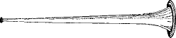
TUBA
423. Review the word lists in §§ 513, 514.
424. Learn the principal parts and conjugation of the verb ferō, bear (§ 498).
1. Learn the principal parts and meanings of the following compounds of ferō, bear:
|
ad´ferō, adfer´re, at´tulī, adlā´tus, bring to; report cōn´ferō, cōnfer´re, con´tulī, conlā´tus, bring together, collect dē´ferō, dēfer´re, dē´tulī, dēlā´tus, bring to; report; grant, confer īn´ferō, īnfer´re, in´tulī, inlā´tus, bring in, bring against re´ferō, refer´re, ret´tulī, relā´tus, bear back, report |
425. The dative is the case of the indirect object. Many intransitive verbs take an indirect object and are therefore used with the dative (cf. § 153). Transitive verbs take a direct object in the accusative; but sometimes they have an indirect object or dative as well. The whole question, then, as to whether or not a verb takes the dative, defends upon its capacity for governing an indirect object. A number of verbs, some transitive and some intransitive, which in their simple form would not take an indirect object, when compounded with certain prepositions, have a meaning which calls for an indirect object. Observe the following sentences:
|
1. Haec rēs exercituī magnam calamitātem attulit, this circumstance brought great disaster to the army. 2. Germānī Gallīs bellum īnferunt, the Germans make war upon the Gauls. 3. Hae cōpiae proeliō nōn intererant, these troops did not take part in the battle. 4. Equitēs fugientibus hostibus occurrunt, the horsemen meet the fleeing enemy. 5. Galba cōpiīs fīlium praefēcit, Galba put his son in command of the troops. |
182 In each sentence there is a dative, and in each a verb combined with a preposition. In no case would the simple verb take the dative.
426. Rule. Dative with Compounds. Some verbs compounded with ad, ante, con, dē, in, inter, ob, post, prae, prō, sub, super, admit the dative of the indirect object. Transitive compounds may take both an accusative and a dative.
Note 1. Among such verbs are1
|
ad´ferō, adfer´re, at´tulī, adlā´tus, bring to; report ad´sum, ades´se, ad´fuī, adfutū´rus, assist; be present dē´ferō, dēfer´re, dē´tulī, dēlātus, report; grant, confer dē´sum, dees´se, dē´fuī, ——, be wanting, be lacking īn´ferō, īnfer´re, in´tulī, inlā´tus, bring against, bring upon inter´sum, interes´se, inter´fuī, interfutū´rus, take part in occur´rō, occur´rere, occur´rī, occur´sus, run against, meet praefi´ciō, praefi´cere, praefē´cī, praefec´tus, appoint over, place in command of prae´sum, praees´se, prae´fuī, ——, be over, be in command |
427. IDIOMS
|
graviter or molestē ferre, to be annoyed at, to be indignant at, followed by the accusative and infinitive sē cōnferre ad or in, with the accusative, to betake one’s self to alicui bellum īnferre, to make war upon some one pedem referre, to retreat (lit. to bear back the foot) |
428. EXERCISES
I. 1. Fer, ferent, ut ferant, ferunt. 2. Ferte, ut ferrent, tulisse, tulerant. 3. Tulimus, ferēns, lātus esse, ferre. 4. Cum nāvigia insulae adpropinquārent, barbarī terrōre commōtī pedem referre cōnātī sunt. 5. Gallī molestē ferēbant Rōmānōs agrōs vastāre. 6. Caesar sociīs imperāvit nē fīnitimis suīs bellum īnferrent. 7. Explorātōrēs, qui Caesarī occurrērunt, dīxērunt exercitum hostium vulneribus dēfessum sēsē in alium locum contulisse. 8. Hostes sciēbant Rōmānōs frūmentō egēre et hanc rem Caesarī summum perīculum adlātūram esse. 9. Impedīmentīs in ūnum locum conlātis, aliquī mīlitum flūmen quod nōn longē 183 aberat trānsiērunt. 10. Hōs rēx hortātus est ut ōrāculum adīrent et rēs audītās ad sē referrent. 11. Quem imperātor illī legiōnī praefēcit? Pūblius illī legiōnī pracerat. 12. Cum esset Caesar in citeriōre Galliā, crēbrī ad eum2 rūmōrēs adferēbantur litterīsque quoque certior fīēbat Gallōs obsidēs inter sē dare.
II. 1. The Gauls will make war upon Cæsar’s allies. 2. We heard that the Gauls would make war upon Cæsar’s allies. 3. Publius did not take part in that battle. 4. We have been informed that Publius did not take part in that battle. 5. The man who was in command of the cavalry was wounded and began to retreat. 6. Cæsar did not place you in command of the cohort to bring3 disaster upon the army.
429. Review the word lists in §§ 517, 518.
430. When we report a statement instead of giving it directly, we have an indirect statement. (Cf. § 414.) So, if we report a question instead of asking it directly, we have an indirect question.
| Direct Question | Indirect Question |
|---|---|
| Who conquered the Gauls? | He asked who conquered the Gauls |
a. An indirect question depends, usually as object, upon a verb of asking (as petō, postulō, quaerō, rogō) or upon some verb or expression of saying or mental action. (Cf. § 420.)
431. Compare the following direct and indirect questions:
a. The verb in a direct question is in the indicative mood, but the mood is subjunctive in an indirect question.
b. The tense of the subjunctive follows the rules for tense sequence.
c. Indirect questions are introduced by the same interrogative words as introduce direct questions, excepting thatyes-or-no direct questions (cf. § 210) on becoming indirect are usually introduced by num, whether.
432. Rule. Indirect Questions. In an indirect question the verb is in the subjunctive and its tense is determined by the law for tense sequence.
433. IDIOMS
|
dē tertiā vigiliā, about the third watch iniūriās alicui īnferre, to inflict injuries upon some one facere verba prō, with the ablative, to speak in behalf of in reliquum tempus, for the future |
434. EXERCISES
I. 1. Rēx rogāvit quid lēgātī postulārent et cūr ad sē vēnissent. 2. Quaesīvit quoque num nec recentīs iniūriās nec dubiam Rōmānōrum amīcitiam memoriā tenērent. 3. Vidētisne quae oppida hostēs oppugnāverint? 4. Nōnne scītis cūr Gallī sub montem sēse contulerint? 5. Audīvimus quās iniūrias tibi Germānī intulissent. 6. Dē tertiā vigiliā imperātor mīsit hominēs quī cognōscerent quae esset nātūra montis. 7. Prō hīs ōrātor verba fēcit et rogāvit cūr cōnsulēs nāvīs ad plēnem summī perīculī locum mittere vellent. 8. Lēgātīs convocātīs dēmōnstrāvit quid fierī vellet. 9. Nūntius referēbat quid 185 in Gallōrum conciliō dē armīs trādendīs dictum esset. 10. Moneō nē in reliquum tempus peditēs et equitēs trāns flūmen dūcās.
II. 1. What hill did they seize? I see what hill they seized. 2. Who has inflicted these injuries upon our dependents? 3. They asked who had inflicted those injuries upon their dependents. 4. Whither did you go about the third watch? You know whither I went. 5. At what time did the boys return home? I will ask at what time the boys returned home.
435. Review the word lists in §§ 521, 522.
436. Observe the following sentences:
|
1. Explōrātōrēs locum castrīs dēlēgērunt, the scouts chose a place for a camp. 2. Hoc erat magnō impedīmentō Gallīs, this was (for) a great hindrance to the Gauls. 3. Duās legiōnēs praesidiō castrīs relīquit, he left two legions as (lit. for) a guard to the camp. |
In each of these sentences we find a dative expressing the purpose or end for which something is intended or for which it serves. These datives are castrīs, impedīmentō, and praesidiō. In the second and third sentences we find a second dative expressing the person or thing affected (Gallīs and castrīs). As you notice, these are true datives, covering the relations of for which and to which. (Cf. § 43.)
437. Rule. Dative of Purpose or End. The dative is used to denote the purpose or end for which, often with another dative denoting the person or thing affected.
438. IDIOMS
|
cōnsilium omittere, to give up a plan locum castrīs dēligere, to choose a place for a camp alicui magnō ūsuī esse, to be of great advantage to some one (lit. for great advantage to some one) |
186 439. EXERCISES
I. 1. Rogāvit cūr illae cōpiae relictae essent. Respondērunt illās cōpiās esse praesidiō castrīs. 2. Caesar mīsit explōrātōrēs ad locum dēligendum castrīs. 3. Quisque exīstimāvit ipsum nōmen Caesaris magnō terrōrī barbarīs futūrum esse. 4. Prīmā lūce īdem exercitus proelium ācre commīsit, sed gravia suōrum vulnera magnae cūrae imperātōrī erant. 5. Rēx respondit amīcitiam populī Rōmānī sibi ōrnāmentō et praesidiō dēbēre esse. 6. Quis praeerat equitātuī quem auxiliō Caesarī sociī mīserant? 7. Aliquibus rēs secundae sunt summae calamitātī et rēs adversae sunt mīrō ūsuī. 8. Gallīs magnō ad pugnam erat impedīmentō quod equitātus ā dextrō cornū premēbat. 9. Memoria prīstinae virtūtis nōn minus quam metus hostium erat nostrīs magnō ūsuī. 10. Tam dēnsa erat silva ut prōgredī nōn possent.
II. 1. I advise you 1to give up the plan 2of making war upon the brave Gauls. 2. Do you know 3where the cavalry has chosen a place for a camp? 3. The fear of the enemy will be of great advantage to you. 4. Cæsar left three cohorts as (for) a guard to the baggage. 5. In winter the waves of the lake are so great 4that they are (for) a great hindrance to ships. 6. Cæsar inflicted severe5 punishment on those who burned the public buildings.
440. Review the word lists in §§ 524, 525.
441. Observe the English sentences
|
(1) A man of great courage, or (2) A man with great courage (3) A forest of tall trees, or (4) A forest with tall trees |
Each of these sentences contains a phrase of quality or description. In the first two a man is described; in the last two a forest. The descriptive phrases are introduced by the prepositions of and with.
187 In Latin the expression of quality or description is very similar.
The prepositions of and with suggest the genitive and the ablative respectively, and we translate the sentences above
|
(1) Vir magnae virtūtis, or (2) Vir magnā virtūte (3) Silva altārum arborum, or (4) Silva altīs arboribus |
There is, however, one important difference between the Latin and the English. In English we may say, for example, a man of courage, using the descriptive phrase without an adjective modifier. In Latin, however, an adjective modifier must always be used, as above.
a. Latin makes a distinction between the use of the two cases in that numerical descriptions of measure are in the genitive and descriptions of physical characteristics are in the ablative. Other descriptive phrases may be in either case.
442. EXAMPLES
|
1. Fossa duodecim pedum, a ditch of twelve feet. 2. Homō magnīs pedibus et parvō capite, a man with big feet and a small head. 3. Rēx erat vir summā audāciā or rēx erat vir summae audāciae, the king was a man of the greatest boldness. |
443. Rule. Genitive of Description. Numerical descriptions of measure are expressed by the genitive with a modifying adjective.
444. Rule. Ablative of Description. Descriptions of physical characteristics are expressed by the ablative with a modifying adjective.
445. Rule. Genitive or Ablative of Description. Descriptions involving neither numerical statements nor physical characteristics may be expressed by either the genitive or the ablative with a modifying adjective.
446. IDIOMS
|
Helvētiīs in animō est, the Helvetii intend, (lit. it is in mind to the Helvetians) in mātrimōnium dare, to give in marriage nihil posse, to have no power fossam perdūcere, to construct a ditch (lit. to lead a ditch through) |
188 447. EXERCISES
I. 1. Mīlitēs fossam decem pedum per eōrum fīnīs perdūxērunt. 2. Prīnceps Helvētiōrum, vir summae audāciae, prīncipibus gentium fīnitimārum sorōrēs in mātrimōnium dedit. 3. Eōrum amīcitiam cōnfīrmāre voluit quō facilius Rōmānīs bellum īnferret. 4. Germanī et Gallī nōn erant eiusdem gentis. 5. Omnēs ferē Germānī erant magnīs corporum vīribus.1 6. Gallī qui oppidum fortiter dēfendēbant saxa ingentis magnitūdinis dē mūrō iaciēbant. 7. Cum Caesar ab explōrātōribus quaereret quī illud oppidum incolerent, explōrātōrēs respondērunt eōs esse homines summā virtūte et magnō cōnsiliō. 8. Moenia vīgintī pedum ā sinistrā parte, et ā dextrā parte flūmen magnae altitūdinis oppidum dēfendēbant. 9. Cum Caesar in Galliam pervēnisset, erat rūmor Helvētiīs in animō esse iter per prōvinciam Rōmānam facere. 10. Caesar, ut eōs ab fīnibus Rōmānis prohibēret, mūnītiōnem 2multa mīlia passuum longam fēcit.
II. 1. Cæsar was a general of much wisdom and great boldness, and very skillful in the art of war. 2. The Germans were of great size, and thought that the Romans had no power. 3. Men of the highest courage were left in the camp as (for) a guard to the baggage. 4. The king’s daughter, who was given in marriage to the chief of a neighboring state, was a woman of very beautiful appearance. 5. The soldiers will construct a ditch of nine feet around the camp. 6. A river of great width was between us and the enemy.
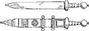
GLADII
448. There are four agreements:
1. That of the predicate noun or of the appositive with the noun to which it belongs (§§ 76, 81).
2. That of the adjective, adjective pronoun, or participle with its noun (§ 65).
3. That of a verb with its subject (§ 28).
4. That of a relative pronoun with its antecedent (§ 224).
449. The relation expressed by the genitive is, in general, denoted in English by the preposition of. It is used to express
| 1. Possession |
a. As attributive (§ 38). b. In the predicate (§ 409). |
|
2. The whole of which a part is taken (partitive genitive) (§ 331). |
|
450. The relation expressed by the dative is, in general, denoted in English by the prepositions to or for when they do not imply motion through space. It is used to express
| 1. The indirect object |
a. With intransitive verbs and with transitive verbs in connection with a direct object in the accusative (§ 45). b. With special intransitive verbs (§ 154). c. With verbs compounded with ad, ante, con, dē, in, inter, ob, post, prae, prō, sub, super (§ 426). |
|
2. The object to which the quality of an adjective is directed (§ 143). |
|
|
3. The purpose, or end for which, often with a second dative denoting the person or thing affected (§ 437). |
|
451. The accusative case corresponds, in general, to the English objective. It is used to express
1. The direct object of a transitive verb (§ 37).
2. The predicate accusative together with the direct object after verbs of making, choosing, falling, showing, and the like (§ 392).
3. The subject of the infinitive (§ 214).
4. The object of prepositions that do not govern the ablative (§ 340).
5. The duration of time and the extent of space (§ 336).
6. The place to which (§§ 263, 266).
452. EXERCISES
I. 1. Mīlitēs quōs vīdimus dīxērunt imperium bellī esse Caesaris imperātōris. 2. Helvētiī statuērunt quam1 maximum numerum equōrum et carrōrum cōgere. 3. Tōtīus Galliae Helvētiī plūrimum valuērunt. 4. Multās hōrās ācriter pugnātum est neque quisquam poterat vidēre hostem fugientem. 5. Virī summae virtūtis hostīs decem mīlia passuum īnsecūtī sunt. 6. Caesar populō Rōmānō persuāsit ut sē cōnsulem creāret. 7. Victōria exercitūs erat semper imperātōrī grātissima. 8. Trīduum iter fēcērunt et Genāvam, in oppidum2 hostium, pervēnērunt. 9. Caesar audīvit Germānōs bellum Gallīs intulisse. 10. Magnō ūsuī mīlitibus Caesaris erat quod priōribus proeliīs sēsē exercuerant.
II. 1. One3 of the king’s sons and many of his men were captured. 2. There was no one who wished4 to appoint her queen. 3. The grain supply was always a care (for a care) to Cæsar, the general. 4. I think that the camp is ten miles distant. 5. We marched for three hours through a very dense forest. 6. The plan 5of making war upon the allies was not pleasing to the king. 7. When he came to the hill he fortified it 6by a twelve-foot wall.
453. The relations of the ablative are, in general, expressed in English by the prepositions with (or by), from (or by), and in (or at). The constructions growing out of these meanings are
| I. Ablative rendered with (or by): | |
|
1. Cause (§ 102) 2. Means (§ 103) 3. Accompaniment (§ 104) 4. Manner (§ 105) 5. Measure of difference (§ 317) 6. With a participle (ablative absolute) (§ 381) 7. Description or quality (§§ 444, 445) 8. Specification (§ 398) |
|
| II. Ablative rendered from (or by): | |
|
1. Place from which (§§ 179, 264) 2. Ablative of separation (§ 180) 3. Personal agent with a passive verb (§ 181) 4. Comparison without quam (§ 309) |
|
| III. Ablative rendered in (or at): | |
|
1. Place at or in which (§§ 265, 266) 2. Time when or within which (§ 275) |
|
454. EXERCISES
I. 1. Gallī locīs superiōribus occupātīs itinere exercitum prohibēre cōnantur. 2. Omnēs oppidānī ex oppidō ēgressī salūtem fugā petere incēpērunt. 3. Caesar docet sē mīlitum vītam suā salūte habēre multō cāriōrem. 4. Cum celerius omnium opīniōne pervēnisset, hostēs ad eum obsidēs mīsērunt 5. Vīcus in valle positus montibus altissimīs undique continētur. 6. Plūrimum inter Gallōs haec gēns et virtūte et hominum numerō valēbat. 7. Secundā vigiliā nūllō certō ōrdine neque imperiō ē castrīs ēgressī sunt. 8. Duābus legiōnibus Genāvae relictīs, 192 proximō diē cum reliquīs domum profectus est. 9. Erant itinera duo quibus itineribus Helvētiī domō exīre possent. 10. Rēx erat summā audāciā et magnā apud populum potentiā. 11. Gallī timōre servitūtis commōtī bellum parābant. 12. Caesar monet lēgātōs ut contineant militēs, nē studiō pugnandī aut spē praedae longius1 prōgrediantur. 13. Bellum ācerrimum ā Caesare in Gallōs gestum est.
II. 1. The lieutenant after having seized the mountain restrained his (men) from battle. 2. All the Gauls differ from each other in laws. 3. This tribe is much braver than the rest. 4. This road is 2ten miles shorter than that. 5. In summer Cæsar carried on war in Gaul, in winter he returned to Italy. 6. At midnight the general set out from the camp with three legions. 7. I fear that you cannot protect3 yourself from these enemies. 8. 4After this battle was finished peace was made by all the Gauls.
455. The gerund is a verbal noun and is used only in the genitive, dative, accusative, and ablative singular. The constructions of these cases are in general the same as those of other nouns (§§ 402; 406.1).
456. The gerundive is a verbal adjective and must be used instead of gerund + object, excepting in the genitive and in the ablative without a preposition. Even in these instances the gerundive construction is more usual (§ 406.2).
457. The infinitive is used:
I. As in English.
a. As subject or predicate nominative (§ 216).
b. To complete the predicate with verbs of incomplete predication (complementary infinitive) (§ 215).
c. As object with subject accusative after verbs of wishing, commanding, forbidding, and the like (§ 213).
193 II. In the principal sentence of an indirect statement after verbs of saying and mental action. The subject is in the accusative (§§ 416, 418, 419).
458. The subjunctive is used:
1. To denote purpose (§§ 349, 366, 372).
2. To denote consequence or result (§§ 385, 386).
3. In relative clauses of characteristic or description (§ 390).
4. In cum clauses of time, cause, and concession (§ 396).
5. In indirect questions (§ 432).
459. EXERCISES
I. 1. Caesar, cum pervēnisset, militēs hortābātur nē cōnsilium oppidī capiendi omitterent. 2. Rēx, castrīs prope oppidum positīs, mīsit explōrātōrēs quī cognōscerent ubi exercitus Rōmanus esset. 3. Nēmo relinquēbātur quī arma ferre posset. 4. Nūntiī vīdērunt ingentem armōrum multitudinem dē mūrō in fossani iactam esse. 5. Dux suōs trānsīre flūmen iussit. Trānsīre autem hoc flūmen erat difficillimum. 6. Rōmānī cum hanc calamitātem molestē ferrant, tamen terga vertere recūsāvērunt. 7. Hōc rūmōre audītō, tantus terror omnium animōs occupāvit ut nē fortissimī quidem proelium committere vellent. 8. Erant quī putārent tempus annī idōneum nōn esse itinerī faciendō. 9. Tam ācriter ab utraque parte pugnābātur ut multa mīlia hominum occīderentur. 10. Quid timēs? Timeō nē Rōmānīs in animō sit tōtam Galliam superāre et nōbīs iniūriās inferre.
II. 1. Do you not see who is standing on the wall? 2. We hear that the plan of taking the town has been given up. 3. Since the Germans thought that the Romans could not cross the Rhine, Cæsar ordered a bridge to be made. 4. When the bridge was finished, the savages were so terrified that they hid themselves. 5. They feared that Cæsar would pursue them. 6. Cæsar 1asked the traders what the size of the island was. 7. The traders advised him not 2to cross the sea. 8. He sent scouts 3to choose a place for a camp.